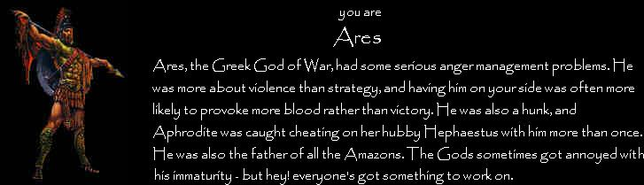

#398811 46 2008-01-08T17:28:58Z squibbles WOOOOAAAAHHHH
LD, Jig and BT you are gods among men.
Oh and i suppose you too clffy.
#398812 6270 2008-01-08T17:35:34Z squibbles Tower of Death
And i'm rating Boa's levels
#398826 51 2008-01-08T18:03:39Z squibbles The bitesized section of NUMA is, intrinsically, a community favorites section.
Not true, if it was a community favourites section it would need more then one person to bitesize it in a system where it gets nominated abd then others vote on it.
#398829 3 2008-01-08T18:35:11Z squibbles This is a boring idea. There are too many other amazing contests going on right now for this to get going. Sorry.
As if. I'll do it, i got a great idea.
#398862 35 2008-01-08T22:26:56Z squibbles Is there still a place open?
If so, ill do it.
#398863 4 2008-01-08T22:29:28Z squibbles My thing is done, im putting it on my page.
same name.
#398872 3 2008-01-08T22:52:46Z squibbles Do the judges get anything, like a ded or a banner for the signitures?
If so ill do it.
#18769 1 2008-01-08T23:16:34Z squibbles You know how you can get a drone and modify it's code to make it just be a floating dot?
Well would it be possible in any way to then combine the properties of this floating dot with say, a mine? To create a moving bomb, or perhaps even a moving switch....
If you don't know what dot i am talking about here's a link:
Floating dot#398887 12 2008-01-08T23:20:40Z squibbles weird, for me its the \ key...
funny story about ~. Its what im named after
#398897 502 2008-01-09T00:02:23Z squibbles 1) The option of more advanced coding in Ned (i.e if statements, and the ability to mix and match say, a drones attributes to a mine, making it move.)
2) Some kind of active multiplayer(i.e races where you are both on screen at once or co-op, where 2 ninjas are seperated by a deviding wall and one get switches for locked doors on the others side.
3) MANY more tileshapes in Ned
#398912 37 2008-01-09T00:30:34Z squibbles i'm confused, who am i with?
#398915 6 2008-01-09T00:33:03Z squibbles haha, ull beat me
mine lterally took me 20min
#399062 34 2008-01-09T13:06:49Z squibbles uuuh, its taken me 15 minutes to get 10% of the mod...dial up is of the devil.
but i wiil be there soon
#399067 35 2008-01-09T14:46:38Z squibbles what happens if #20 doesn't show bfore the cutoff?
#399068 24 2008-01-09T15:00:30Z squibbles The problem with the single textbox is that people would inevitably forget to say wheter it is demo or level...you can imagine all the newbie asking why the demo data doesn't work...
ill start the poll
#399069 10 2008-01-09T15:05:45Z squibbles there is now a poll on the matter.
#18775 1 2008-01-09T15:10:08Z squibbles The plan of this poll is to be noticed and maybe get a change, if a majority vote swings that way.
#399406 9 2008-01-10T14:19:31Z squibbles yeah, it would be kinda like cheating to say that b_t did it, because it would give the lying newbie innacurate rating averages
#399409 45 2008-01-10T14:50:21Z squibbles I agree, the biggest problem is that many people arn't doing anything except the racial norm (racial being that of the race).
i think a great idea for a map would be to do it around a autogeneraed tileset, one of those really sporadic ones, like this:
0000000000000000000000000000000000000000000000000000000000000000000000000000000000000000000000000000000000000000000000000000000000000000000000000000000000000000000000000GOK@000000000000000000>19BP0;L000000H00OH;LOH750CD;E240000;100J1E6MQJ40FQJD02<;LKMJ0006P0000JM03<:4;1MJ=000003P000000B=B02EF0000?0006P000000><CLKD00000N00LKP0000000B5:92<0878C00E6A0000000>LH0?1DBMJ500D7800000GH79BP0J5>8;400MQI0000NE2M0NAGOH7MQI000000000>A000><2=B14;L000000000000GOK=00N5BMQ00O00000000025:LK8C4000001<00000000000BMQJ1A00006900000000000NLOK=0000000000000?8GK8>EBE000000000000000:=2E?P>P00000000000000000?A>D3A00000000000000000>4356LOKLO00000000000000:=00B1565000000000000000000>500000000000000000000000000000000000000000000000000
#399417 50 2008-01-10T15:26:25Z squibbles This makes my penis vibrate.
wtf maestro? we didn't need to hear that.
I reckon thisis awesome, try to get a page on NUMA for it, that'd be cool.
you've gotta interview clifty next. or maybe N

#399438 57 2008-01-10T16:58:08Z squibbles i'm in for a challenge, ill do it!!!
#399440 58 2008-01-10T17:06:01Z squibbles can we add objects?
#399445 74 2008-01-10T17:21:21Z squibbles OMG, im so getting it on DS
oooh, i cant wait.
#399454 8 2008-01-10T18:24:32Z squibbles I reckon it'd be pretty cool if they then used this to add a type of search on the sidebar to be the most favourited maps.
#399455 16 2008-01-10T18:26:26Z squibbles you could just tell him the email now maestro...
#399462 1037 2008-01-10T18:53:34Z squibbles WRONG!!!
pepi
#399464 59 2008-01-10T19:03:10Z squibbles #399470 5902 2008-01-10T19:16:32Z squibbles #399471 5903 2008-01-10T19:16:45Z squibbles #399504 6286 2008-01-10T21:50:56Z squibbles #399724 7 2008-01-11T12:45:20Z squibbles Yeah, Layla's not bad, and i'm learning the solo from stairway, but i think some standouts are:
"Flight of Icarus"- Iron Maiden
"Don't fear the Reaper"- Blue Oyester Cult
"One"- Metallica
"Gears of War"- Megadeth
#399725 47 2008-01-11T12:46:51Z squibbles I agree, the biggest problem is that many people arn't doing anything except the racial norm (racial being that of the race).
i think a great idea for a map would be to do it around a autogeneraed tileset, one of those really sporadic ones, like this
If you don't mind, I'm going to use that map data you posted and make a race. I'll dedicate to you on NUMA when it's finished.
Yeah, I've got no problems with that, go ahead, but could you pm me a link once your done, i'd like to see how this ends.
#399730 7 2008-01-11T13:06:59Z squibbles What i find useful is including what i call a "brake pad"for your teleporters, to make this you change the speed values to 0,0
Watch:
00000000000000000000000000000000000000000000000000000000000000000000000000000000000000000000000000111111111000000000000001000000010000000000000010000000100000000000000100000001000000000000001000000010000000000000011111111100000000000000000000000000000000000000000000000000000000000000000000000000000000000000000000000000000000000000000000000000000000000000000000000000000000000000000000000000000000000000000000000000000000000000000000000000000111111111000000000000001000000010000000000000010000000100000000000000100000001000000000000001000000010000000000000011111111100000000000000000000000000000000000000000000000000000000000000000000000000000000000000000000000000000000000000000000000000000000000000000000000000|5^159,350!2^202,288,16,0!2^531.15804661767,289.417745192834,0,0!11^528,348,360.428960280009,287.991211236928
#18797 1 2008-01-11T13:30:19Z squibbles At what milestones does your member level on metanet go up?
I know that 10 posts=1
but thats all
#399738 52 2008-01-11T13:36:57Z squibbles oh, oops...i guess i missed that one.
sorry
#399744 14 2008-01-11T14:07:35Z squibbles Whats the difference between listing an author who wasn't involved now, and listing an author who wasn't involved with this new idea?
I'm in support of this idea.
I'm afraid i don't understand what you are saying Lord_Day, could you possibly rephrase the sentance?
#399747 14 2008-01-11T14:15:03Z squibbles I love colaberations, i'd love to do one with you.
#399760 10 2008-01-11T15:35:47Z squibbles Is this going to be judged sometime soon?
#399763 8 2008-01-11T15:45:55Z squibbles #399772 304 2008-01-11T16:10:28Z squibbles N-1103
Mines - 2156
Floorguards - 327
Guass - 850
Rocket - 773
Chaingun - 148
Laser - 612
Drone - 1130
Thwump - 421
Total - 7520
#399775 42 2008-01-11T16:17:45Z squibbles The level suggestion box conversation, where it is suggested that as well as a place to put your demos, it would be a good idea to have somewhere to put level sugestions for the map maker (in code)
http://metanet.2.forumer.com/index.php?showtopic=21051#399778 6297 2008-01-11T16:22:05Z squibbles #400075 609 2008-01-12T14:00:02Z squibbles 2/10
I don't get it
#400076 11 2008-01-12T14:22:19Z squibbles I find the concept that this is what happens to a lot of people concerning, or at least hard to believe, because (noting that, if one religion is correct, the rest aren't) there would have to be a lot of people deluding themselves.
You should take a look at the Satanic bible, from what you just said, i reckon you might find it interesting.
Attachment removed. I'm fairly certain that posting the Satanic Bible is a breach of copyright. Please contact the staff if you disagree.
Yeah, sorry Attila.
#400087 15 2008-01-12T15:08:19Z squibbles And now chrismas is over and N's back again
So i dont think we need anyone to post here again.
#400105 17 2008-01-12T15:39:47Z squibbles And now chrismas is over and N's back again
So i dont think we need anyone to post here again.
Although you just did little mr squib,
I'll let it pass as a christmas tree is nought without a twig.
(What a rhyme...)
Hey, i was closing the poem

btw notice how i rymed again with again:P
#400114 1069 2008-01-12T16:01:14Z squibbles yep, the person below me is, unlike me, not named after a character on the number row of the keyboard.
#400120 17 2008-01-12T17:22:04Z squibbles also agree with cossak
and sorry about th double posts, i only yesterday noticed the edit button
#400121 18 2008-01-12T17:23:11Z squibbles also agree with cossak
and sorry about the double posts, i only yesterday noticed the edit button
#400123 791 2008-01-12T17:38:35Z squibbles
Quote
returnee Pronunciation[ri-tur-nee, -tur-nee]
noun
1. a person who has returned, as from travels or a long absence.
2. a person returning from overseas duty in the armed forces.
Wow
I didn't even know that was a word...
And on topic, I reckon I might leave sometime, but it wouldn't be before November...I've been here less hen a week, and I already feel accepted by this community. Maybe it's just my abuse of a laptop, coffee and a phone line in my room, giving me time in the night to chat more...
#400125 50 2008-01-12T17:41:27Z squibbles I think that the only way we could ever work for Mare/Raigan is by testing any games they make. We are they're primary consumer/audience. All 5,000 of us.
I know this is going to sound really stupid, and probobly get me slapped/flamed, but are Mare and Raigan the owners of Metanet?
#400128 15 2008-01-12T17:57:42Z squibbles I love dda's, but i dont really understand what some of the other genres are.
#400130 17 2008-01-12T18:06:12Z squibbles All my friends refer to me as the ninja.
Though this is probobly due to me having a black belt in both karate and taekwondo and me having then undergone an extra, 2 year stealth course for extra training.
#400141 53 2008-01-12T18:40:45Z squibbles haha, i love these
#400144 22 2008-01-12T18:54:52Z squibbles This is gonna sound bad, but i have 8 cups a day
2 at wakeup
2 at recess (at school (yr 11 now, WOOT))
2 at lunch
1 after school
1 with dinner
#400143 1254 2008-01-12T18:54:52Z squibbles 70, is see you around quite a bit
and before anyone says anything, note the day joined <-
#400166 37 2008-01-12T19:48:13Z squibbles Yeahh, 14th...I'm a'coming
#400168 38 2008-01-12T19:50:11Z squibbles Yeahh, 14th...I'm a'coming
#401190 53 2008-01-16T04:10:13Z squibbles Yeah, it would be good if everyone could place links to the maps they do for this in here, i'd like to see them.
Oh, and epigone, that was awesome, i still havn't beat it:P
#401191 41 2008-01-16T04:10:59Z squibbles Yeah, sorry about the double posts, the first one was me being a stooge, and the second, my internet cut out (lousy dial-up) and when it came back the page had to be refreshed. When i refreshed it, all the data was resent.
Also, on my copy of N, all my highscores have been delorted, and it says that in this comp, Zres is first with 104.675...Is this a constant error, and is it permanant on my compy?
#401399 17 2008-01-17T01:09:19Z squibbles Hmm. Good idea though. You could just limit it to two ninjas active. I think that would be enough.
I can imagine a level where there is two seperated areas, and the ninjas are unlocking doors for the other one, until they both get to the exit...cool idea WP
#401400 19 2008-01-17T01:12:46Z squibbles i thought they are funny but not the actual humor just the patheticness of them is funny but now i don't even think that is funny.
Aaaaah, my head is spinning like Chuck Norris' roundhouse kicks.
But seriously, I think that the humor of these jokes, like others, lie in the quality. I've heard good and bad Chuck Norris jokes, but to judge them all on specifics would be, I feel, some what generalistic.
#401405 1073 2008-01-17T01:25:20Z squibbles err, yeah.
Next up is Animator
#401411 19 2008-01-17T01:39:27Z squibbles In fact, with our current spacecraft, we couldn't get to the sun before it explodes and consumes half the universe.
Even if the sun does explode, it won't destroy half the universe. Larger stars have gone Supernova and exploded. Our Sun is miniscule compared to Stars like what you find in orions belt, ie beetlejuice, but spelt properly.
However, on topic, In all probability bigfoot is a large gorrilla, and i have no doubts that there is other sapient life in the cosmos beyound our solar system, just not in our Galaxy, as no other planet in our galaxy has a stable enough environmet to sustain life.
#401425 59 2008-01-17T01:52:59Z squibbles Whoa, these areall so pro, i'd do one as well, but im not that good at making races.
#401453 411 2008-01-17T02:07:09Z squibbles Poison was the Cure - Megadeth
btw, rincewind, love the name *hides color of magic onder pillow*
#401461 21 2008-01-17T02:12:46Z squibbles The temperature varies too much due to distances from the sun. Days are longer, you would become climitized to the saturn days, and then at night, it would drop 60 degrees. Life may have been able to survive on mars, but, well, it doesn't anymore, and theother planets are all like the example of saturn i gave.
#401524 30 2008-01-17T05:02:06Z squibbles The temperature varies too much due to distances from the sun. Days are longer, you would become climitized to the saturn days, and then at night, it would drop 60 degrees. Life may have been able to survive on mars, but, well, it doesn't anymore, and theother planets are all like the example of saturn i gave.
Er. You realise there are stars other than our sun in the galaxy, yes? Perhaps you meant the solar system instead?
Oh, oops, I did mean that, thankyou for pointing that out Attila

#401528 40 2008-01-17T05:23:54Z squibbles Superman 64
Bomberland
Banjo Kazooie 3 (in advance, it should be on a nintendo console)
Wii Play
FF2
#401530 28 2008-01-17T05:28:07Z squibbles Yeah, unlucky about the hand, i remember when i broke my finger a while ago. I havn't played basketball since November

#401534 26 2008-01-17T05:43:06Z squibbles ROFL, it's not that bad
#401535 26 2008-01-17T05:45:19Z squibbles #401686 416 2008-01-18T00:23:33Z squibbles Suggestions - System of a Down
then my internet died, and by the time I reloaded the page
Breadline - Megadeth
#401694 72 2008-01-18T00:36:23Z squibbles Goatman, I'm not sure if the map i sent to you a while ago got sent, but i tried again recently and It couldn't get through because your inbox is full...you need to empty it.
#401714 8 2008-01-18T01:36:05Z squibbles The one thing I would like changed in Ned is snapping, i would love 1/8 snapping. However, on topic, i would like to see enemies be able to get switches, it would spawn off awesome survival maps in N. However, i know that this won't happen, because it would bugger up everything everyone had previously made.
Also, if the screen scrolled, you would lose your drones.
#401724 525 2008-01-18T02:00:58Z squibbles You think you've got it bad with march...it comes out in america, then europe, then wait a couple of months and we get it...rock band is still not out
#401725 7 2008-01-18T02:20:19Z squibbles I'm still hanging out for an announcement for RB on wii
#401732 21 2008-01-18T02:40:10Z squibbles Death metal has been around since the mid-1980's. Some bands do it to offend people, some really believe in Satanism and such.
You, know, as a satanist, thats actually somewha offensive to me, I don't kill, and i CERTAINTLY don't practice necrophelia...I think it would be best to keep political views to ourselves from now on, lest we offend.
#401734 21 2008-01-18T03:00:53Z squibbles Jimmy Page - Led Zep
Eric Clapton - Cream
Dave Mustaine - Megadeth
Slash - Guns and Roses/Velvet Revolver/Slash's Snakepit
Carlos Santana - Santana
Alex Tulip - The 5th Ace
Me - Sporadic Regularity
Note: the last two ARE advertising
#401738 10 2008-01-18T03:16:23Z squibbles Yeah, that would work too, i just love the idea of being able to do a level which is like, survive until the laser drone opens the door, with the switch and laser drone in a copletely different area.
#402276 40 2008-01-20T09:20:47Z squibbles oh, no goatman, we were almost done too...
#402277 1263 2008-01-20T09:30:33Z squibbles 70%, i see you around quite a bit.
#402437 61 2008-01-20T22:36:57Z squibbles Banjo Kazooie 3 (in advance, it should be on a nintendo console)
Just because it is on a different console and tus unavaliable to you doesn't make the game any worse than it already is.
Yeah, i know...but it annoys me to noend that i have to fork out a couple of hundred dollers for something i've been waiting for since the words "banjo threeeie" left grunties lips when i was 8.
#402440 439 2008-01-20T22:40:58Z squibbles Where eagles have been - Wolfmother
#402443 328 2008-01-20T22:50:59Z squibbles Nah, we can delete it in a week and they won't know a thing.
rofl, 2.5 years later
#402446 14 2008-01-20T22:57:11Z squibbles Oh, this sucks, mount doom literally is the last Level i've gotta do
#18905 1 2008-01-20T23:09:59Z squibbles Yes, belive it or not, but i actually managed to cheat Lucidiums Pressed for time. Once. On the top.
It is possible to get over the wall of thwomps...

I also have a video of it (thanks to camstudio), but i'm still looking for a way to compress it to a reasonable size. And Now I have It!!!
Sorry about the quality though-i know, it's appalling
Attachment (lost): post-23-1200878863.zip
#402462 43 2008-01-20T23:18:28Z squibbles I didn't vote, because i'm pretty sure that i'm the biggest banjo fan...i just dont advertise it.
#402466 4 2008-01-20T23:21:20Z squibbles Damn, that would've been the maddest thing ever...
#402484 6 2008-01-20T23:34:59Z squibbles I had to jump to the top right corner of the start bit, then i had to time another jump so i was in the air as the blue part went past. If it cmes down to it i'll put the video on tripod a post a link
#402492 45 2008-01-20T23:48:46Z squibbles Ok, my 4th one is here:
http://numa.notdot.net/map/113351
or here:
http://numa.notdot.net/map/113927
The only one i have for the 3rd is in epigones account...I made the tileset and i don't know if that counts, but here it is anyway:
http://numa.notdot.net/map/113630#402494 10 2008-01-20T23:50:42Z squibbles thats pretty amazing
i beat the non-cheating way after about a million tries, this would have helped a few days ago 
yeh, i know what you mean...it took me ages to do it too. Mount Doom = last level for me

The effort used to get behing the thwumps would be greater than doing it the normal way, and it would be easier and more efficient to miss the thwumps.
It is.
#18906 1 2008-01-21T00:04:09Z squibbles Most, if not all of the Australian users will be aware that there was a large fire in the Kalgoorlie/Boulder region (actually closer to Coolgardie) in which 3 lives were lost...what you don't know is that i was on the same road as the truckies who died, when it happened, only 40 minutes before the road was closed.
So i thought i would share some of the photos i took with the community...but before critisizing, bear in mind that I took these from a moving car.
News Reports:
http://www.abc.net.au/news/stories/2008/01/10/2135566.htm
http://www.theaustralian.news.com.au/story...5006789,00.html
http://kalgoorlie.yourguide.com.au/news/lo...es/1155451.html
Photo No1:

Photo No2:

Photo No3:

Photo No4:

Photo No5:

Ok, thats all the semi-desent to desent photos I have.
#402501 14 2008-01-21T00:18:51Z squibbles Ok, the video is at this moment uploading onto tripod, once its done ill post the link.
Tripods not taking it, so i'm posting a shorter video
#402505 3 2008-01-21T00:42:45Z squibbles yeah, ill have a look to see if i can find an article, they got the fire under control recently though.
#402509 5 2008-01-21T00:56:25Z squibbles um, not sure, they were on both sides of the road...i think it says the size in one of the articles
#402660 9 2008-01-21T12:06:10Z squibbles Well, no one really cares what happens to Australia anyways.
It's actually worrying that you can be so cold...three people were killed and a major mining town had no supplies for a week and a half.
Also, don't diss my nation-it just impresses onto you the stereotype of an ignorant American, who cares nothing more then what happens in his own country
#402661 21 2008-01-21T12:07:46Z squibbles Yeah, i'm pulling out because i don't think it's gonna happen
#402662 63 2008-01-21T12:32:53Z squibbles this could actually be the best thing ever...
EDIT:rofl this was on the messageboard of the #1 city
Quote
[17/01] mmppff: visit mmppff please i have 15 persons my english is macarroni
My english is maccaroni?
#402663 5949 2008-01-21T12:44:24Z squibbles Yay, he has a tree growing out of his head!!!
8.5/10
#402671 73 2008-01-21T13:52:34Z squibbles Again, I point to Yoshi's Story. It sold reasonably well, not because of the game's merits, but because it followed Yoshi's Island, which was absolutely brilliant.
Meanwhile, Beyond Good & Evil was a stand-alone game released by Ubisoft at the same time as several of Ubi's franchise games which already had a fairly large following (Tom Clancy's, Prince of Persia, XIII). As such, it didn't get anywhere near as much attention as it could have - even Ubi acknowledge that it could have done much, much better if it hadn't been for the release date. It's still a good game, even though it didn't sell well.
Then we have games like Cave Story. It's an obscure freeware game, but that doesn't make it any less brilliant. The same applies to N, the Spirit Engine, Battle for Wesnoth, and pretty much any other indie game you care to name. Most of them wouldn't sell as well as the Finding Nemo ™ Activity Centre, but they're still good games!
I actually like Yoshis Story...i dunno...
I agree with beyond good and evil, that game is brilliant.
And the finding nemo activity center, uugh, i remember when i had the pokemon one.
#402672 6 2008-01-21T13:54:27Z squibbles ooh, thats really interesting, it's like, reverse-reverse-psychology
#402678 67 2008-01-21T14:06:34Z squibbles im loving every map i see here, you guys are geniuses
#402686 1279 2008-01-21T14:18:01Z squibbles 20%
I think i've seen you somewhere, but i'm not sure where
#402688 8 2008-01-21T14:20:38Z squibbles In America, they print their money on paper...in Soviet Russia, WE HAVE NO MONEY.
#402689 1204 2008-01-21T14:23:11Z squibbles 16
#402691 9 2008-01-21T14:28:01Z squibbles Don't worry about it, its the hardest map in the game.
My advice is to go through peoples replays and study them really close.
Youll get it eventually.
#402692 35 2008-01-21T14:32:41Z squibbles Sorry to hear about your predicament Blizz, my advice is retail stores. You can sleep on the teddys...no seriously though, you should get a job at blockbuster or Toys "r" Us. both pay fairly well.
#402693 6402 2008-01-21T14:38:59Z squibbles #402696 330 2008-01-21T15:03:37Z squibbles I don't see why they would...
#402700 44 2008-01-21T15:10:32Z squibbles man, this comp is sweet
I love this, but in the last round i couldn't see my or anyones scores, if it happens again im gonna have to pull out.
#402705 59 2008-01-21T15:18:57Z squibbles I will do 11
#402741 61 2008-01-21T16:42:16Z squibbles It is done...Episode 11 has been added.
http://numa.notdot.net/map/114356#402743 42 2008-01-21T16:52:50Z squibbles i just a couple of days ago beat the game
#402745 50 2008-01-21T16:57:09Z squibbles haha, gloomp, good to see that you are showing off your shiny new sig
#402746 8 2008-01-21T16:59:58Z squibbles good luck, and remember, if you get stuck, theres a whole community here willing to help you out. Don't hesitate to ask. (but make sure you ask in the right place)
#402751 101 2008-01-21T17:16:17Z squibbles Does anyone wanna make me a sig?
Specs are as follows:
Primary colours:Blue, Green, Purple
Theme:Abstract/Fractal
Renders/images: None
Text: Squibbles
Complexity: Not to plain, but i don't want to inconvenience anybody
Matching avatar (yes or no): Yes, but again, if you really don't want to, you don't have to
Dimensions (size): not a clue...the average dimensions?
#402752 63 2008-01-21T17:22:03Z squibbles Can we make it go vertically some time?
I would love that sooo much.
#402756 64 2008-01-21T17:45:56Z squibbles I just compiled what we have so far into a txt document. Copy it straight into you userlevels data, and search by type. Scroll down untill you find "The New Epic". The levels should be in order.
Sorry about the double post, but it wouldn't have really fit with what i said earlier.
Attachment (lost): post-10-1201038453.txt
#402894 2498 2008-01-22T00:22:02Z squibbles This is me on the night of my Yr 10 formal.

I'm on the left.
#402901 67 2008-01-22T00:38:02Z squibbles Sorry Arona, but it doesn't really fit.
On a better note, i just finished the most recent picture, with all 12 parts included.
Here it is.
Attachment (lost): post-10-1201040088.zip
#402945 2501 2008-01-22T01:31:00Z squibbles This is me on the night of my Yr 10 formal.
I'm on the left.
Wow, nice pic. So who is the guy? 
Left condog...I'm the guy.
#402967 17 2008-01-22T02:11:04Z squibbles Anyway, squibbles, when are we going to see more of these fabled pictures of yours?
I'm trying to get them up, but there like, a whole megabyte

My dial-up and imageshack arn't co-operating easily because of the size(it's actually somewhat depressing)
#402984 19 2008-01-22T02:42:25Z squibbles Photo No2 is up now
#402990 21 2008-01-22T02:55:40Z squibbles No3s up now, I'm on a roll
#402991 3145 2008-01-22T02:57:48Z squibbles 2/10
Its a toad, not a frog
#403048 2504 2008-01-22T05:20:15Z squibbles oh, right...ive never been good with sarcasm
#403052 53 2008-01-22T05:24:45Z squibbles I rekon i might win round 4...
#403053 54 2008-01-22T05:24:53Z squibbles I rekon i might win round 4...
#403054 13 2008-01-22T05:26:48Z squibbles I like. This would encourage more people to give suggestions and advice to others. I don't really see any cons to this, other than the page could become a bit cluttered and overcrowded.
I don't think it would be overcrowded. Just think of it as another data box below the demo.
Yeah, thats what i was thinking of when i made this poll...i reckon it woulde ba a good idea, but they'd have to be clearly labeled, so noone used the wrong box.
#403171 72 2008-01-22T21:32:30Z squibbles ill update the txt document
#403172 73 2008-01-22T21:32:36Z squibbles ill update the txt document and image
#403173 74 2008-01-22T21:33:30Z squibbles ill update the txt document and image
EDIT: sorry about that ^^ my internet crashed. And i don't even know how the first one is different
#403174 54 2008-01-22T21:35:19Z squibbles pfft, i got no worries, i was suprised when i beat WP and Condog, im not gonna be gitting in top 3, though i might last another round...
#403181 77 2008-01-22T21:42:55Z squibbles You should put the txt document on the front page as well.
EDIT: new image and map compilation are up ^^
#403185 39 2008-01-22T22:23:03Z squibbles (no, I'm not swearing. Those are just the names of the card games).
Texes hold'em poker, black mariah/hearts, oh hell/niggle, shithead, asshole, cheat, sevens, and far too many card-based drinking games.
Cards are fun. We also tend to play a lot of silly board games.
Mine is pretty much that plus spoon
#403187 57 2008-01-22T22:26:31Z squibbles ah, ull do fine, anyway, it's prob someone else whos gotta place top 3.Don't worry.
#403202 57 2008-01-22T23:05:15Z squibbles lol, it's on!!!
#403203 58 2008-01-22T23:05:18Z squibbles lol, it's on!!!
#403212 67 2008-01-22T23:19:23Z squibbles im so ready to see whe i came in this.
#403217 6413 2008-01-22T23:23:00Z squibbles #403233 2509 2008-01-22T23:46:17Z squibbles So how bout you condog, when are we gonna se a pic
#403250 18 2008-01-23T00:05:10Z squibbles i see a double AND a triple post...why?
#403261 62 2008-01-23T00:33:28Z squibbles WOAH, i didn't pick that up...i can't belive i'm still here, that was close
#403267 2 2008-01-23T00:42:29Z squibbles Your wish has been granted:
http://numa.notdot.net/map/114488
I wasn't sure if they should be dedications, so i made it one anyway.
I wish for a non-linear race with decent flow
#403339 5 2008-01-23T05:17:54Z squibbles oops, i thought i put it in, ill fix that
Ok, i fixed it.
#403342 15 2008-01-23T05:25:16Z squibbles Really? thats cool...
#403345 18 2008-01-23T05:48:52Z squibbles yeah, although naturally the time i did that i died on the third line, and completed it without doing it again...
#403392 79 2008-01-23T13:37:15Z squibbles Thats not very nice...what i want to happen is ninja finds gold, next map goes down instead of left, then we go back, but with cavern levels.
EDIT: OMG, I'm so making a sig for this.
#403403 80 2008-01-23T14:10:33Z squibbles Ok, i finished the New Epic sig, to add it to your signature, copy this into it:
[URL=http://metanet.2.forumer.com/index.php?showtopic=20760&st=0][IMG]http://img520.imageshack.us/img520/6467/newepicbannermm8.png[/IMG][/URL]
#403407 42 2008-01-23T14:34:46Z squibbles I can remember levels which had mines hidden under gold...
#403410 5977 2008-01-23T14:47:06Z squibbles i alrady did urs a bit ago, so ill just do condogs:
10 glowbos-Banjo Rocks!!!(I just today beat canary mary the 2nd time in CCL)
EDIT: Just letting everyone know that i am todays top poster with 22 posts.
#403411 1309 2008-01-23T14:49:35Z squibbles 70, because everyone like Australians...
#403412 1310 2008-01-23T14:50:30Z squibbles 100, because he's so good looking
#403414 67 2008-01-23T15:00:19Z squibbles I CAN'T DO IT!!!!
#403417 23 2008-01-23T15:23:25Z squibbles Photos No4 and 5 are now up
#403419 69 2008-01-23T15:39:19Z squibbles I agree, 2 weeks is more then enough.
#403421 99 2008-01-23T15:52:28Z squibbles A new series is currently being worked on, The New Epic.
You might want to add that when it's done. (it currently has 13 maps.)
#403423 15 2008-01-23T16:02:03Z squibbles Whatever you choose, I suggest you steer clear of BASIC. It's a very difficult code to learn and highly picky. Not very basic at all.
What are you talking about, basics like, the easiest thing in the world...it's not even case sensitive
#403426 162 2008-01-23T16:07:53Z squibbles I missed it, but i still had fun playing through the levels...i'm up to zenith
#403427 1253 2008-01-23T16:09:17Z squibbles Unreality, Underclock can be easily cheated.
Thanks! Great! It works as expected! 
*pretends it was intentional*
#403430 17 2008-01-23T16:24:09Z squibbles Q-basic?
I just use VB
#403431 4 2008-01-23T16:25:31Z squibbles My advice is:
Open a second window of N and watch the replays, keep them open...I used Hendors, but with a different way of getting to the gold.
#403432 60 2008-01-23T16:29:09Z squibbles Sperm banks man, you could donate like 3 times a day...if you REALLY pushed yourself. And they pay like $8 per donation, or something like that...$26 a day!!!
#403436 10 2008-01-23T16:32:34Z squibbles I don't really think these tags are nessesary...if you want to find the map so bad, why don't you just go digging?
#403438 534 2008-01-23T16:35:33Z squibbles i'm so ready for this game...
#403440 11 2008-01-23T16:39:32Z squibbles You know what the creature did remind me of?
Sin, from FF10.
The things that came off it looked rediculasly like sinspawn, enemies that fell off sin and also killed people.
hmmm
#403441 2512 2008-01-23T16:44:15Z squibbles woah, i just scrolled down the page and saw a lot of me.
and Harley, how hve you managed to get -369 posts?
#403445 44 2008-01-23T16:50:27Z squibbles Actually, i'm not so sure now...it might have been hypercube that i'm thinking of
#403446 800 2008-01-23T16:54:13Z squibbles ooh ooh, am i part of everyone?
#403447 19 2008-01-23T17:02:53Z squibbles not as bad as gamemaker though.
#403448 3158 2008-01-23T17:10:25Z squibbles hehe, cant beat that, but only 7/10, becaus it really doesn't match your sig
#403449 21 2008-01-23T17:12:45Z squibbles hahaha
or
snicker
or
giggle
or
cackle
#403450 6 2008-01-23T17:15:15Z squibbles I also use fireworks...because im scared of accidentally finding something really seedy when i search gimp on google
#403451 82 2008-01-23T17:18:57Z squibbles It puts us out as TheNew Epic Team though, i hope nobody has a problem with that.(lets make this bigger then zenith)
#403453 1222 2008-01-23T17:22:16Z squibbles 16, he plays BK, i play BK...i'm 16, therefore he's 16
#403456 8 2008-01-23T17:26:07Z squibbles I use vista and havn't had any problems...it could also be related to system data that N uses, it could constantly be hitting a bad spot.
#403523 71 2008-01-24T00:19:42Z squibbles true, i finally managed to get a demo up.
#403530 140 2008-01-24T00:36:13Z squibbles and while some occasional animals have gay sex (known in sheep - only example coming to mind) it has not been known in higher animals such as monkies and apes.
thats probably too haphazard an explanation there...
My pet rabbits are lesbians, they constantly try to mate, but always end up failing due to to lack of neccesary reproductive organs.
I voted the top one, I have many Homosexual friends, and there is no problem with that at all, they are still people, just like you and me.
#403531 72 2008-01-24T00:40:57Z squibbles Umm, i'm having a problem...no highscores show up:

I would like to know if my scores are on other peoples score list.
#403534 60 2008-01-24T00:45:57Z squibbles haha, swee, i wasn't even sure if i was going to have mine counted...
#403536 74 2008-01-24T00:48:26Z squibbles 
I'm meant to be in highscores, right?
#403537 3162 2008-01-24T00:56:45Z squibbles 4/10
the first game was better, and you couldn't get those items without cheating in it.
#403538 624 2008-01-24T01:01:18Z squibbles squibbles likes...8/10
#403540 1316 2008-01-24T01:04:03Z squibbles I know you...your...err...that....guy
80
#403548 60 2008-01-24T01:13:25Z squibbles You know you've been here too long when your average posts per day is above 8. Not guilty
woot, 10.5 post per day!!!
You know youv'e been here too long when youv'e been the top poster for days in a row(me right now, i contributed 22% of yesterdays votes)...i'm at 4 days now.
#403552 84 2008-01-24T01:18:13Z squibbles Yeah man, go crazy...i might do another one as well, but you do Part 14, ill do 15 once your done
#403556 11 2008-01-24T01:23:19Z squibbles also, word uses word wrap...that will bugger up your work, like atilla said...us notepad
#403557 76 2008-01-24T01:23:40Z squibbles ok Thanks
#403558 13 2008-01-24T01:24:47Z squibbles squibbilus
#403561 4 2008-01-24T01:26:39Z squibbles You might want to check the security settings, my compy wont activate flash plugins untill ive clicked on them, then they start to animate...it could be a similar issue
#403572 46 2008-01-24T01:39:37Z squibbles i agree, and because of the difficulty...it prob won't happen
#403576 70 2008-01-24T01:43:13Z squibbles *sigh*, kids these days...
#403588 361 2008-01-24T01:52:12Z squibbles man, these contests are brilliant...well done xub
#403590 62 2008-01-24T01:52:41Z squibbles what is round 5?
#403593 69 2008-01-24T02:00:00Z squibbles Feb 1st is so far away, can we cut of a week?
#403594 22 2008-01-24T02:05:40Z squibbles i'd have to say im goin for Obama, but i don't really know that much about the election (as i am in a completly different hemisphere)
#403598 37 2008-01-24T02:20:28Z squibbles I'd advise having a more positive attitude on these things...instead of "In one yr when i turn 18 my dad can kick me out" try "In one yr when i turn 18 I can finally get out of here"
and with your girlfriend, just talk to her and find out what she wants from you, and remember, her family is your family as well now, they will sometimes need you support as well.
#403602 62 2008-01-24T02:24:13Z squibbles who doesn't?
#403606 448 2008-01-24T02:31:14Z squibbles Prince of Darkness - Megadeth
#403609 39 2008-01-24T02:35:43Z squibbles That is a good plan, glad to see you taking action.
All the best, Squibbles
#403611 7 2008-01-24T02:39:03Z squibbles im loving it.
#403613 87 2008-01-24T02:44:50Z squibbles Diddy kong racing was pretty good...
#403615 17 2008-01-24T02:46:02Z squibbles I was so happy when i beat the game, its so worth just doing all the levels.
#403618 802 2008-01-24T02:51:46Z squibbles Bye sniperwhere!
#18944 1 2008-01-24T03:00:29Z squibbles I was getting frustrated at the fact that nobody from the map rating thread commented, and nobody from the map commenting thread rated.
So here it is, The Map Rating AND Commenting Thread, where you can get information on the quality of your map AND feedback.
Just 2 rules;
1. Do not post links to more then 5 maps at a time
2. For every map you post, you must rate and comment a map.
So i figure ill start:
http://numa.notdot.net/map/113481#403629 2516 2008-01-24T03:03:16Z squibbles woah, i just scrolled down the page and saw a lot of me.
and Harley, how hve you managed to get -369 posts?
Dude, use the search button, this was already discussed in several other threads.
I did, i didn't find anything...what should i search to find it?
#403631 43 2008-01-24T03:04:45Z squibbles Don't worry about it, most bosses will understand you snapping at a dickky customer, at least,mine does...
#403633 3 2008-01-24T03:06:32Z squibbles why would you post it in both...this is a much simpler answer
#403645 10 2008-01-24T03:15:35Z squibbles He was turned to steel, in the great magnetic field,
When he tavelled time, for the future of mankind!
Black Sabbath are gods.
They wrote a song about Iron Man
#403646 2518 2008-01-24T03:16:21Z squibbles oh, ok
#403648 6 2008-01-24T03:20:21Z squibbles why would it be locked?
It seems useful to me, it just needs to get going...
#403652 12 2008-01-24T03:28:44Z squibbles He was turned to steel, in the great magnetic field,
When he tavelled time, for the future of mankind!
Black Sabbath are gods.
They wrote a song about Iron Man
talk about ruining the laws of physics.....
how so?
#403657 12 2008-01-24T03:57:50Z squibbles It's the CA Security Centre. Many programs like that have the ability to block animations so that you don't have to load large animated advertisements. I suggest you alter your security settings - look for a section dealing with ad blocking.
Hahahaha, i'm a genius.
You might want to check the security settings, my compy wont activate flash plugins untill ive clicked on them, then they start to animate...it could be a similar issue
I feel so clever, beating Attila to the sugestion
#403659 64 2008-01-24T04:00:47Z squibbles Thanks Player 3, i almost entered my New Epic map, just because it has a . in one of the tags
#403660 65 2008-01-24T04:06:58Z squibbles ok, Round 5 maps:
http://numa.notdot.net/map/114564
Innovative uses of switches
or
http://numa.notdot.net/map/114770
Innovative use of a drone (laser)(resubmitted due to error.)
#403668 14 2008-01-24T05:07:48Z squibbles This is really impressive, well done.
#403669 14 2008-01-24T05:09:54Z squibbles pfft, fine, ruin my moment of glorious brilliance
#403671 67 2008-01-24T05:20:37Z squibbles Thats quite good Arona, but i'm still gonna win
#403673 40 2008-01-24T05:37:28Z squibbles Thats just following the sam principles of gold delay, it's because of the way that N reads data.
#403674 238 2008-01-24T05:40:47Z squibbles Death star drone!!!
#403675 91 2008-01-24T05:42:49Z squibbles I didn't like Sunshine very much. It wasn't anywhere near as good as M64.
I didn't mind sunshine, but i really don't like galaxy...it's the same game with new levels, and the levels arn't even THAT great.
#403679 6 2008-01-24T05:50:14Z squibbles I only just voted, after youve chosen a sig anyway, but i find it intersting how many liked the bottom.
#403680 44 2008-01-24T05:52:13Z squibbles The level suggestion box conversation, where it is suggested that as well as a place to put your demos, it would be a good idea to have somewhere to put level sugestions for the map maker (in code)
http://metanet.2.forumer.com/index.php?showtopic=21051
Um, neither Maestro nor Arachnid have said anything about this, and 20/25 people who voted said yes, what should i do now to try to get it implemented?
#403682 142 2008-01-24T05:54:49Z squibbles is there any possibility of another of these happening in the future?
#403700 17 2008-01-24T08:29:48Z squibbles #403715 3 2008-01-24T13:03:28Z squibbles and about the older compys internet, thatl be because it already has more cookies and temp files.
#403716 18 2008-01-24T13:04:45Z squibbles The best shot of it is right before XXX gets eaten
XXX because i dont want to spoil it for everyone
#403717 21 2008-01-24T13:07:05Z squibbles The author should be able to choose if the stat is public.
Oh, and welcome to the forums SkyPanda
#403718 22 2008-01-24T13:09:42Z squibbles Whatever you choose, I suggest you steer clear of BASIC. It's a very difficult code to learn and highly picky. Not very basic at all.
What are you talking about, basics like, the easiest thing in the world...it's not even case sensitive
Have you tried making a full fledged game with Basic? It's like trying to program a stubborn child. Try making a program where every time you press the space bar, an image appears at a set coordinant that moves in one direction, and have it make a new one every time you hit the space key. Also, try rotating sprites based on the mouse position and have it move towards it at the same time. On basic, that's a bastard to do. I should now because I've made games on Basic, and my latest on is giving me hell.
Maybe it's the version of Basic I'm using. I use DarkBasic.
Actually, he's right now that i thin about it, unless your game is BlackJack, Slots, or Snakes and ladders, which all rely on simple random number statements, don't use basic...i remember making a game of Snake once..that sucked, by the time i was finished, i wanted to kill microsoft for Visual Basic.
#403721 81 2008-01-24T13:18:58Z squibbles oh sweet, same time zone
GOOOOO AUSTRALIA!!
#403722 782 2008-01-24T13:36:53Z squibbles I know its 2 weeks and 200 posts late, but i thought i would say hello to everyone...
...
...Hi
#18945 1 2008-01-24T13:49:57Z squibbles Judging from this picture, do i need to get off the net?

#403727 72 2008-01-24T14:05:19Z squibbles OK, i prob shouldn't hav asked anyway...patience is a virtue
#403730 69 2008-01-24T14:24:46Z squibbles i liked the one with the ear...
#403732 3 2008-01-24T14:28:03Z squibbles you really think i've been spamming?
#403734 73 2008-01-24T14:33:14Z squibbles 10, because of the avvy, savvy?
(OMG, im sooo lame)
#403735 806 2008-01-24T14:34:44Z squibbles It's out?!!
OMG, *runs to EB even though it is 1:30 AM*
#403736 21 2008-01-24T14:35:24Z squibbles SWEET!!!
I'm so getting the original, i wanna see it
#403738 7 2008-01-24T14:43:47Z squibbles good of you to apologise mate. Youv'e earned some respect in my books, and i'm sure it's the same with wedgie.
#403741 8 2008-01-24T14:50:05Z squibbles Charming...Though i did chuckle for a second, so it's gotta be good, if it was so funny i ignored pedophaelia.
BTW, i notised something demonic about this topic when i was scrolling through B_T

#403742 75 2008-01-24T14:55:15Z squibbles hahaha, i'm 16..it was the name, wasn't it.
You are SO 32, and that is SO you in your siggy.
Lol, no seriously though, i reckon 13.
#403745 10 2008-01-24T15:00:45Z squibbles the one labeled "old, very old" reminds me of Resident Evil...like, the first one, where you go through the forest after escaping the train.
#403749 65 2008-01-24T15:18:37Z squibbles ill do security now
#403754 809 2008-01-24T15:59:09Z squibbles Gaaah, this sucks...i was so exited too:(
#403756 3 2008-01-24T16:17:49Z squibbles I vote you stay, you seem like a good person to me
#403757 6423 2008-01-24T16:19:10Z squibbles Rated the map belonging to the man of the goats with the sneaky feet
http://numa.notdot.net/map/113925#403764 7 2008-01-24T16:44:03Z squibbles P.S.2 If this is ignored, I'll bet it'll be hard for me to keep myself from storming out the door.
If you're that desperate for attention, I'd advise you to get the hell out. By the look of this topic and what you've said, that's clearly your flaw. If you can get over this, and accept that not everyone is going to care about you, then you should stick around.
A wise man once said:
"Let us not segregate due to differences, but give aid, and celebrate unification"
#403766 2 2008-01-24T16:48:43Z squibbles Well done, glad to have been able to give assistance when needed.
Here, you can add this to your signature:

[IMG]http://img216.imageshack.us/img216/9107/ntagws9.png[/IMG]
#403768 36 2008-01-24T17:01:04Z squibbles I found that it works better if you replace the toothbrush with sandpaper, and the toothpaste with charcoal, like Goatman suggested
#403770 2 2008-01-24T17:20:28Z squibbles ooh, ooh, me me me
I want in...
Il do it, thisl be me in what, 3 of ur contests at a time?
#403774 46 2008-01-24T17:23:28Z squibbles Ok, that was weird, as soon as this page loaded, i crossed my fingers.
THEN i scrolled down
#18949 1 2008-01-24T17:26:30Z squibbles I'm currently have vista installed on my C Drive, and i want to dedicate the momory of the D Drive, a second hard drive, to the C Drive.
How would I go about doing this?
#403780 4 2008-01-24T17:43:41Z squibbles 2 questions:
1.Are there prizes?
2.Do we give the link to the map we chose here?
#404011 19 2008-01-25T13:19:07Z squibbles Gaah, i lost the game...and thanks for clearing that up miyomiyo
#404013 2527 2008-01-25T13:28:19Z squibbles hendor, you look exactly like i imagined you...weird
#404015 5983 2008-01-25T13:31:52Z squibbles 4/10
i don't really get it
#404016 1326 2008-01-25T13:33:31Z squibbles 100!!!
I love numbers!!!
#404017 18 2008-01-25T13:36:42Z squibbles Ah, but on the same par, you could lie, and get better ratings then what you ddeserve, just because you said Blue Tetris helped you.
Vague Example:
http://numa.notdot.net/map/114123#404019 2529 2008-01-25T13:43:08Z squibbles hendor, you look exactly like i imagined you...weird
I think Hendor looks very cool.
Sorry, the me rephrase:
weird...you look exactly as i imagined hendor.
I wasn't saying henor was weird, but that the accuracy of my imagination was
#404021 26 2008-01-25T13:49:41Z squibbles Yeah, what are the odds that not only a monster appears, but also someone who knows it's origins...ooooh, goes off to play origins
#404023 167 2008-01-25T13:55:56Z squibbles Now, i am dead serious when i say this...
Gausses, lasers and chainguns killing other enemies if they fire through them
#404025 90 2008-01-25T14:02:12Z squibbles Ill do 18!!!
#404033 27 2008-01-25T14:55:47Z squibbles It's a combination of me having no life and it being school holidays.
#404034 4 2008-01-25T15:02:00Z squibbles Is D: an actual 2nd hard drive or just a partition on one hard drive? Go to Control Panel, Administrative Tools, then Computer Management. Click on Disk Management. Even though my system is XP, it should be a good enough reference.
Ok, i got there, now what do i do?
#404035 3165 2008-01-25T15:05:36Z squibbles hehe, teh bunneh is dancing...8
#404045 3168 2008-01-25T16:36:41Z squibbles YAY!!! BANJO KAZOOIE!!!
"An ant, uhh, you're hopeless..."
10/10
#404047 29 2008-01-25T16:47:37Z squibbles What
A
Stupid
Topic!
Even
Dumb
People
Online
Would
Easily
Remake it.
Says the guy who attempted to sabatoge a contest by exploiting a cross-section error on NUMA to delete other contestants maps, and then tried to become un-banned and only succeeded in flaming and angering everyone by posting illegal(in forum terms) alternatives to getting around the ban.
Besides, this topic is just for fun. Nice flaming there. 
Tough well done on being creative enough to do that...just try to use your creativity in a more useful way.
#404053 3171 2008-01-25T17:02:09Z squibbles Yeah, but i wasn't sure how to spell termite, so i went for a bluff...
Chase, i give it a 6..it seems unoriinal, sorry.
#404056 364 2008-01-25T17:30:18Z squibbles hey exuberance, did you get my caption?
#404330 7 2008-01-26T13:15:52Z squibbles Ok, this is what i've got:

I jsut don't know what to do now that i'm here.
#404331 93 2008-01-26T13:23:36Z squibbles Looking foward to it...I was thinking maybe 20 levels to get the gold...then we go back
#404339 20 2008-01-26T13:49:21Z squibbles your right, that was the wrong link...and i can't find the other now
#404340 2 2008-01-26T13:50:37Z squibbles Man, nice pictures...i missed the fireworks, because i was at a barbeque in Dunlop...but they sure looked good.
#404341 367 2008-01-26T13:55:10Z squibbles um, goatman...I think they are playing tennis.
(Though i first thought they were playing cricket...and tried to make a reference to the AUS-IND game scandal)
#404342 84 2008-01-26T13:55:38Z squibbles pfft, i can't beat 62
#404344 1338 2008-01-26T13:58:53Z squibbles 90... for wearing my TNE sig
#404349 21 2008-01-26T14:51:32Z squibbles I can't wait, i hope Sabbath get the themesong
#404354 5 2008-01-26T15:04:28Z squibbles Tokyo Underground...best thing EVER!!!
#404357 12 2008-01-26T15:12:08Z squibbles I said not a highscorer, but thats because, although i am a perfectionist, i am still not good enough to be a highscorer.
#404364 159 2008-01-26T15:48:21Z squibbles it's true what they say...tastes like chicken
#404370 10 2008-01-26T16:16:56Z squibbles Umm, why are we wishing Sgt. Poptarts long life?
#404374 78 2008-01-26T16:28:05Z squibbles yeah, you're right...it's just that i don't sleep much, so the days are stretching on soooo long.
#404378 2536 2008-01-26T16:49:41Z squibbles Noooooooo...dammit, now maestro's been humanised...i was sure he was The Ninja
#404382 466 2008-01-26T16:59:13Z squibbles At the moment, nothing, as it is 3:57 am where i am...but ill just tell you now that in 8 hours, itll be me playing guitar hero
#404391 12 2008-01-26T17:16:09Z squibbles If you want to make a wish, you will have to make the map the previous person wished for...you can't just keep making demands without giving back to the community...
#404399 5990 2008-01-26T17:20:44Z squibbles i prefered it with mario. but lik is pretty good too...and it looks like the new model link, the one from Twilight Princess...also good.
sooo, 8/10
#404401 13 2008-01-26T17:23:14Z squibbles Quote
The Simpsons.
!=anime. Animated, but not anime.
hahaha, nice obby...
#404405 173 2008-01-26T17:35:24Z squibbles It would be pretty cool if N had costumes you could unlock as you play the game.I would like to play as Jesus. 
During the time i was playing the main game, i had always hoped that one of the flavours would be a cowboy suit.
#404655 83 2008-01-27T06:28:04Z squibbles I had to resubmit my map for the next map due to a stupid error of mine.
(thanks to Notkitt for pointing out)
#404673 86 2008-01-27T11:48:14Z squibbles You can easily cheat in underclock mode...and i think anyone who doesn't submit is also out.
#405004 17 2008-01-28T14:05:33Z squibbles sweet, thanks condog...
#405005 98 2008-01-28T14:08:05Z squibbles 18's mine. I just don't like how the map as a whole doesn't look too appealing.
I already called it...Look on the previous page
Quote
Ill do 18!!!
20 is free though, if you want to do it...
#405006 99 2008-01-28T14:13:47Z squibbles 18's mine. I just don't like how the map as a whole doesn't look too appealing.
I already called it...Look on the previous page
Quote
Ill do 18!!!
20 is free though, if you want to do it...
#405010 6437 2008-01-28T14:55:26Z squibbles Did Goatmans map...because of the SWEET NAME!!! DUDE, THAT WAS AWESOME...oh, right...i'm back says normal squibbles.
http://numa.notdot.net/map/114770#405016 23 2008-01-28T15:20:38Z squibbles i loved it, so worth the 3 hours it took to download
#405018 91 2008-01-28T15:41:32Z squibbles errr, ska...what happens if say...6 people CAN'T do the level?
#405024 525 2008-01-28T16:19:06Z squibbles #405025 4 2008-01-28T16:23:36Z squibbles If they are in a location different to what is xpected (the same as the .exe), the program will not be able to find the .swf files...so as Hendor said, keep them all in one folder.
#405026 19 2008-01-28T16:29:59Z squibbles ooh, kydo, i got dial up too...ill do one with you?
#405028 200 2008-01-28T16:38:19Z squibbles This is, in my opinion, my best map.
http://numa.notdot.net/map/114770
It uses innovation with a laser, and was y highest rated map until i edited in a mistake, trying to intergrade an imrovement sugested to me, had it rated a 5th time, and then had to resub.
#405031 6 2008-01-28T16:54:47Z squibbles I disagree kkstrong, hendor didn't explain why it would occur, i was elaborating on what he said, to make it more clear, i will however take into account what you have said, and put in a concerted effort to change.
#405038 198 2008-01-28T17:09:17Z squibbles err, dj chilliecheeze, this topic was well and truly dead when you posted that...2 years dead. Make sure you check the date the last post was posted next time.
#405039 540 2008-01-28T17:14:29Z squibbles Its a real pity Rare sold out to Microsoft, because your sig made me just realize how sweet mumbo would be in that game.
#405040 541 2008-01-28T17:14:36Z squibbles Its a real pity Rare sold out to Microsoft, because your sig made me just realize how sweet mumbo would be in that game.
#405041 775 2008-01-28T17:25:14Z squibbles 2/10
I....don't...know...you
#405043 29 2008-01-28T17:29:00Z squibbles Halo 3..it' the only one i don't have.
#19011 1 2008-01-29T16:13:00Z squibbles Poetic Map Contest
In this contest you will have to make a tileset (and add objects to the map for possible bonus points.) using poetry.
Looking for another judge.
Spoiler: [u
Instructions[/u]]
1) Select a passage from a poem, or a poem itself it it is short enough.
2) Copy text into Ned to make a tileset, removing all punctuation and spaces.
3) Remove all Glitched Tiles by pasting tileset data into Notepad, and replacing the letters R,S,T,U,V,W,X,Y and Z with 0. Also add 0s between each character.
4) Finally, you must post a link to your map, and pm me the tileset data, along with the original text you used, giving reference to what it is from.Spoiler: [u
Scoring[/u]]- 0 to 10 points for fun.
- 0 to 10 points for playability.
- -10 to 10 points for objects.
- 0 to 10 points for difficulty, the map shouldn't be too easy, or too hard.
Spoiler: Applicants
- _________
- _________
- _________
- _________
- _________
- _________
- _________
- _________
Spoiler: Judges
Spoiler: Prizes
- 1st - Ded map + Sig
- 2nd - Sig
- 3rd - Sig
- Judges may get a sig...if i have time to do it.
- ALL maps entered will go into a new mappack, with the rightful owner getting full credit for their map
Example of tileset is attatched...it is Hamlet's famous monologue (to be or not to be...).
Attachment (lost): post-21-1201623180.txt
#405301 59 2008-01-29T18:49:35Z squibbles Yes. Definatly.
Also, you can add me to your list of jubilant gold collectors, the nore people on that list, the more likley it is to happen i reckon.
#405433 4 2008-01-30T03:34:47Z squibbles ok, i just cut out the literary points, because i couldn't think of anything to replace it with.
#405437 59 2008-01-30T03:50:21Z squibbles Im going to pull out of this one, i go on camp soon, then i gotta be working hard for yr 11 exams.
also my dial-up disconecting every time i load a page doesn't help.
#405438 6 2008-01-30T04:06:53Z squibbles I would love this to happen, except I would have to do it in MTI...
I clicked the wrong button, but i would love to see it in all...i said the top one.
#405439 25 2008-01-30T04:08:46Z squibbles Yeah, you may not have heard about it because, compared to other fires Aus has had, this was quite minor.
#405446 67 2008-01-30T04:30:40Z squibbles Yeah. Great idea for T&I, and squibbles. Ultracool. Comon! You've barly been on for what now, 20 days?
bah. Leave him alone. He's just more devoted to the forums than you.
edit: ooh, just realized that this is the third page. 
I'll tell you what it is...my girlfriend's on holiday, i ditched my friends for her, and they now don't talk to me, and it's school holidays.
Though I am slowing down now, as i get back into school routine.
")
#405522 10 2008-01-30T13:20:05Z squibbles Thank you for the advice everyone, it has been implemented.
#405525 10 2008-01-30T13:44:12Z squibbles Hmmm, i'd have to say Goatman or _^Destiny
#405554 16 2008-01-30T17:50:09Z squibbles Heh, everyone loves goatman...
#405556 104 2008-01-30T18:01:29Z squibbles Wigginator + Me = EPIC BATTLE FOR 4TH LAST!!
#405559 30 2008-01-30T18:18:58Z squibbles Ill do that...and start working on my own race for it.
#405817 112 2008-01-31T12:57:16Z squibbles so, if more then 4 people can't post demos, and i come last of those that do post demos, do i still get eliminated?
#405824 102 2008-01-31T13:37:36Z squibbles Here is my round 6 sub:
Survivalist Destruction -
http://numa.notdot.net/map/113927
And my round 7 sub:
Sneekfeet's Wish -
http://numa.notdot.net/map/114488#405825 4 2008-01-31T13:50:15Z squibbles i don't see script-fu anywhere.. 
On the main console, click on Xtns (next to File).
It is the 4th option down.
#19037 1 2008-01-31T17:02:39Z squibbles I currently have the latter on, but only because it was made first...
#405846 19 2008-01-31T17:09:24Z squibbles that is one of the oddest things ive ever heard of...and how did you stumble across that report, might i ask?
#405850 3198 2008-01-31T17:23:07Z squibbles hehehe, 8/10
i lol'ed
#405862 34 2008-01-31T18:08:44Z squibbles I still don't feel "fully" accepted in this community. Prove me wrong and I'll give you a cookie. You like cookies.
I like cookies...
...They make my internet go faster.
#405863 93 2008-01-31T18:26:03Z squibbles Ok, my second is up.
Here is a list of mine so far:
1st submission-
http://numa.notdot.net/map/113481
2nd submission-
http://numa.notdot.net/map/115022#405868 6 2008-01-31T18:34:10Z squibbles Hmm, i can't remember what the ACT flag is...but i voted yes anyway
#405871 27 2008-01-31T18:44:20Z squibbles Awwww...us Australians miss out...again.
I second this. Why not come here and preview it?
More specifically, to canberra...im sure lenny's as sick as i am of everything being in sydney.
#405972 4 2008-02-01T03:03:20Z squibbles hmm, ok, thanks for the advice.
#407876 116 2008-02-08T15:50:17Z squibbles ok, i have done #18
http://numa.notdot.net/map/115696
I'm also updating the txt file and image as we, err, type...
Here is the image:
Attachment (lost): post-10-1202521768.zip
#407881 16 2008-02-08T16:20:38Z squibbles yeah, sure..you can edit it, i doubt this is going to take off thouogh, judging from the comments above.
If you do edit it, make it only a few small bits, maybe, a maximum of 10 tiles can be changed/deleted.
#408007 18 2008-02-09T01:26:48Z squibbles #408008 31 2008-02-09T01:30:50Z squibbles um, if Hilary wins, does that make Bill Clinton "First Lady"?
#408015 117 2008-02-09T01:51:36Z squibbles And here is the .txt file...destiny, you may want to put this new one on the front post, as it has 5 new maps.
Attachment (lost): post-10-1202533520.txt
#408094 8 2008-02-09T09:59:23Z squibbles ill do it with you notkitt...get back to me about it and weel start
#408095 52 2008-02-09T10:11:07Z squibbles it would also be rediculasly hard to write decent collision detection.
#408096 34 2008-02-09T10:11:45Z squibbles No, I think then he's the First Gentleman.
lame, i was getting all exited about the potential humor in it...
#408097 1140 2008-02-09T10:18:11Z squibbles Quote
Condog will be next.
Quote
Condog must be nekst
Quote
condog will be next.
The dog is not here now.
Condog
I felt like indulging you - yes indeedy
as for the next one - i say condog
Hmm, if we keep guessing him, one of us has to be right...
COOOONNNDOOOOG!!!
#409071 122 2008-02-13T05:46:23Z squibbles i call number 666 and number 100...they are mine.
#409074 69 2008-02-13T06:01:20Z squibbles Yeah, they are going to find out anyway, and which do you think they would prefer..."mum, dad..my gifriends pregnant" or "mum, dad..meet your grandchild".
Talk to them ASAP
#409079 170 2008-02-13T06:10:41Z squibbles wait, so the people in red are out?
#409099 124 2008-02-13T09:31:33Z squibbles sure, i will.
btw, i got bored, so now i'm making you a sig destiny.
#409100 172 2008-02-13T09:53:38Z squibbles bah, im pretty sure my score would've still beaten his...i was like, ahead of 3 people.
But i'm still psyched that i'm in the top 10...i so deserve a sig
#409101 58 2008-02-13T09:59:57Z squibbles I've never heard the song, but I must say something: the word you want is "prejudiced". If you have prejudice, you are prejudiced.
Also, the word looks funny if you stare at it for a while.
Hehehe, pre-juiced is what i saw...
I personaly think that the song is vulgar. It objectifies women, and is insulting to all progress the society i belong to has made towards sexual equality.
#409104 9 2008-02-13T10:10:55Z squibbles How would i be seeing my vote count?
#409106 3238 2008-02-13T10:19:48Z squibbles 6/10
it confuses me
#409108 6064 2008-02-13T10:23:15Z squibbles 2/10
Its a bit big...and barbie-ish
#409109 11 2008-02-13T10:26:05Z squibbles oh, right...god i'm a stooge.
I thought it was votes in polls on the forums.
Thanks Maestro.
#409111 2 2008-02-13T10:32:40Z squibbles hmm, could you post a screenshot of the location of N on your computer? You might be able to get help that way.
#409114 174 2008-02-13T10:36:30Z squibbles ohmygod ohmygod ohmygod ohmygod ohmygod ohmygod!!!
I LOVE YOU!!!
I'm so not gonna last another round:P...
#409124 68 2008-02-13T11:23:03Z squibbles It is your democratic right to vote for whichever option you think best.
As long as you vote for democracy, because anything else would cause you to lose that right, and become paradoxical.
#409315 74 2008-02-14T05:08:12Z squibbles Maybe an if statement saying, if goldA is collected, maximum=X
else if goldB is collected, maximum=Y
With goldA and B being the first pieces of gold across these routes.
#409323 81 2008-02-14T05:45:58Z squibbles please take me off the list, ive dropped out a LONG time ago
#409326 147 2008-02-14T05:50:04Z squibbles #409328 15 2008-02-14T05:59:25Z squibbles i'd rate it
Sound:8/10
Speed:10/10
Blood:4/10
Sprites:10/10
Overall:6/10
Um, thants not the kind of rating were talking about...
...in Australian ratings, i'd say MA15+ for excessive profanity...for when you are screaming at MTI for 6 hours straight.
Sigh, i miss the good old days, of trying to find out the new flavours.
#409331 17 2008-02-14T06:03:41Z squibbles I have one sugestion...instead of having to open N once on that computer yourself...make it shell N, close N, then shell N again.
#409363 127 2008-02-14T10:41:20Z squibbles Duuude...we got stickied...this is sweet.
ok...ive done the new episode:
http://numa.notdot.net/map/116445
and destiny your sig is here:
http://img509.imageshack.us/my.php?image=destinydw9.swf
Don't feel as though you have to use it though.
#409365 577 2008-02-14T10:51:18Z squibbles i hope to god that tails, knuckles (and shadow...)are payable, but please god, not silver. He stands for everything i loathe
#409882 160 2008-02-16T04:21:51Z squibbles #409900 3250 2008-02-16T05:20:32Z squibbles 10/10
unintentional phallic imagery is the best kind...
#410041 179 2008-02-17T00:01:45Z squibbles hmm, why didn't anyone point out to me that lookatthis, xaelar, TFK and Hendor are all in the top 10 most highscores.
Now i'm panicing...
...though even more shocked that i'm still here. (I've never gotten a highscore in my life before)
#410049 481 2008-02-17T00:37:56Z squibbles I'm having problems with NHigh2.0.
Whenever i try to do anything that involves my .sol file, i end up with an error saying:
.sol file contains invalid array object
does anyone know how to fix this?
#410056 181 2008-02-17T00:54:41Z squibbles The reward for the winner of round 3 is Map Select
Map Select allows the winner to choose from 3 different map options, perhaps a style that suit him/her best.

If I had to choose, it would've ended up a DDA
#410077 483 2008-02-17T02:19:37Z squibbles oh...damn.
Is there any other way to find out if i have any unsubmitted highscores?
Beacuase i just played through it until i beat it, and my internet (dial up) is NOT going to load up all the high scores.
#410079 14 2008-02-17T02:29:01Z squibbles I call them baby frogs...because in my opinion, tadpoles arn't frogs until they look like frogs.
#410366 186 2008-02-18T05:12:19Z squibbles Im pretty sure that my team mates are 1st and 2nd...i just need to make some improvments and were gonna be 1st...
#412256 211 2008-02-26T07:03:32Z squibbles Arrgh! For some reason I thought I had until the end of today to submit a demo...
Oh well... I wasn't going to win anyway...
wait...so...i'm still in?
why am i still in?

wait...OMG!!!
#412261 214 2008-02-26T08:17:10Z squibbles Now that we've dealt with the Pretenders and the contenders it's time to get serious.
Hehehe, i'm pretty sure that i was the only person that didn't have a single highscore in that list
Any guesses as to who was the "pretender"?
Im pretty proud of how far i came in this, and i'd just like to say, well done to everyone still in, and good luck.
#412470 140 2008-02-27T06:41:44Z squibbles hmm, ill do the next one that is not reserved. I think it's 25...
i'm also working on the image and .txt file, but ill wait till ive done my next one before i upload, then ill try to do it every 5.
Oh, and notkitt, your last map doesn't work, the ninja needs to be in the right hand column.
#412499 9 2008-02-27T12:31:33Z squibbles I clicked because theres something odd in canberra water...
so did the person above me (lenny)...
the person below me will click because he will see "last post :squibbles", and naturally be eager to see what i said.
#412733 11 2008-02-28T20:19:19Z squibbles Do we know if it's coming out in Australia?
I'm looking foward to this.
#412881 226 2008-02-29T12:11:19Z squibbles ska, do you mind if i play the level once your on the next round?
#412882 144 2008-02-29T12:34:08Z squibbles is anyone doing 24?
if not ill do it, and wave my bagsing of 25.
but 100 and 666 are still mine.
#412884 3 2008-02-29T13:05:44Z squibbles That was a very interesting read...
...although for some reason, when i saw "free stuff" i thought i was going to get something...i'm an idiot.
#413027 146 2008-03-01T07:23:49Z squibbles ok, ill make a start on it now then.
#413047 174 2008-03-01T11:54:16Z squibbles Yay, last and second last!!!
thats what i get for making oneways.
Bad Squibbles...no more suger for you,
#413053 148 2008-03-01T12:17:40Z squibbles lol, it's pretty obvious what i want to do with #666, isn't it.
And let's just say that 100 will be my Led Zeppelin tribute. (100 being where you finally achieved transcendence in the original game)
#413065 2587 2008-03-01T13:38:37Z squibbles Smort is officially (well, according to me at least) the coolest person on the Forums.
woah, condog...what about me?
And here is a picture of me. Very late at night. Taken just then from my webcam. With a high ISO making it grainy.

And i also need to shave. my 'stach is coming back.
#413068 136 2008-03-01T14:29:10Z squibbles Iron Maiden. Good stuff.
Saw them play live recently.
When they played fear of the dark everyone did the thing.
#413283 45 2008-03-02T11:52:35Z squibbles I measured it...73 degrees. It's to keep me disciplined to have shorter showers, because after 5 minutes i start to blister.
#413284 14 2008-03-02T11:53:32Z squibbles I'm ALWAYS up for a collab.
just pm me if you ever want to do one.
#413286 252 2008-03-02T11:56:47Z squibbles it wont crash there are only 8 people left.
actually, it's only 7...I'm out, remember?
#413299 1102 2008-03-02T14:58:24Z squibbles *nearly comments on 7!'s name change*
#413318 150 2008-03-02T17:20:04Z squibbles umm, notkitt...i haven't even posted 24 yet.
EDIT: Part 24 -
http://numa.notdot.net/map/118088#413327 18 2008-03-02T17:54:28Z squibbles 22 April 08, by the Atari website.
Is this date the same as the UK release date (if it ever comes to British turf)?
By the way, Hi people. I only just joined the forums, been on the NUMA Map Archive for a long while!
Hi, and welcome to the forums!
Im pretty new user too!
Pfft, your not that new matonen...although i do remember your first post.
#413330 152 2008-03-02T18:23:42Z squibbles You got this pinned? Nice going guys!
I'm going to play through all the levels when I get the chance...
Also, is there any way of having a picture of the maps put together like you did before? Or would it be too big?
EDIT: Maybe I'll see what I can do about it, although I really don't have the time...
Wig, i've been putting together the images and a .txt file with all the levels put together...the next one is going to be after 25, and then im going to do it every 5 after that.
#413465 158 2008-03-03T05:25:26Z squibbles And as promised, here is the .txt file
and the image is still to come (now too large to upload)
Attachment (lost): post-10-1204521926.txt
#413466 159 2008-03-03T05:28:23Z squibbles And as promised, here is the .txt file
and the image is still to come (now too large to upload)
Attachment (lost): post-10-1204522103.txt
#413495 47 2008-03-03T09:11:21Z squibbles Yeah, my parents are extreme water savers...this is their way of shortening my showers.
#413507 26 2008-03-03T12:30:29Z squibbles Looks like someone from Data Realms was at your presentation

OMG, i have that exact same laptop...i think...It looks like my 17" Toshi...
#413514 162 2008-03-03T13:55:25Z squibbles i got 28!!
#413665 164 2008-03-04T02:38:39Z squibbles All right, map number 28 is also done:
http://numa.notdot.net/map/118296
It's description also contains a full list if you want to look back
and here is the image up to 25:
http://img184.imageshack.us/img184/2680/thenewepicbi0.png#413673 390 2008-03-04T03:11:23Z squibbles OMG, i came second!!!!!
is there a runner-up award...because i could swear that i saw somebody wearing one...then again maybe not.
#413678 258 2008-03-04T03:23:28Z squibbles lol, i thought id have a shot at this level...i couldn't beat 73
#413696 626 2008-03-04T03:51:55Z squibbles yeah, we're going to have to share all our wii info so we can have a meta-brawl-tournament. ^w^
Wow, nice idea, lets actually do that...AFTER it gets released in Australia.
Oh, and my favourite character is cpt. falcon...i don't play as anyone else
FAAAALCOOOOON....PUUUNCH
FALCON KICK
#413701 166 2008-03-04T04:02:10Z squibbles hmm, ill do 31, because i can't do 29...i did 28
#413780 4 2008-03-04T12:45:09Z squibbles FAAAALCOOON PUUUNCH
He is my all time fav, followed by gannondorf.
I don't really use the other characters, except when i have to, or when i was getting all the trophies in melee.
#413782 11 2008-03-04T13:05:53Z squibbles I may make use of this someday. Like, when I go to collage. But I actually applaude this idea. I never thought a forum addiction can be temporarily solved with a suspension.
Nah, when you go to college you'll be so busy balancing your social life and your school work, you'll hardly find time to go on the forums, save for the occasional peek every once and a while and over breaks.
I'm in collage, yet i still slightly overuse the internet.
and N,
and I want to be the guy.
#19391 1 2008-03-04T13:33:06Z squibbles I was playing through one of Goatman's maps, when i found a VERY odd launch pad glitch...and not a n00by "I jumped on a launchpad and dissapeared" launchpad glitch.
The map is at:
http://numa.notdot.net/map/114819
And here is footage of the glitch (thanks again to the makers of camstudio)
Attachment (lost): post-3-1204637586.zip
#413786 168 2008-03-04T13:58:40Z squibbles I tried, but expulsion's story is missing...it was there, now it is not.
Nice thinking though.
#413791 1584 2008-03-04T14:40:08Z squibbles Happy Birthday JeRK!!!
#413792 6195 2008-03-04T14:56:18Z squibbles i'm not sure what it is...but theres something about this taht i don't like...
#413795 16 2008-03-04T15:18:17Z squibbles How about making a choice. lots of websites have a little scrolldown menu saying "show X number or item Y" so people can set the default they want. they could be 10, 20, 25, 50 and 100.
Thats a good idea the cossack...but should it be a defult preset by you, or something you have to check each time?
#413819 3 2008-03-04T16:41:21Z squibbles Weakened launchpad:
00000000000000000000000000000000000000000000000000000000000000000000000000000000000000000000000000000000000000000000000000000000000000000000000000000000000000000000000000000000000000000000000000000000000000000000000000000000000000000000000000000000000000000000000000000000000000000000000000000000000000000000000000000000000000000000000000000000000000000000000000000000000000000000000000000000000000000000000000000000000000000000000000000000000000000000000000000000000000000000000000000000000000000000000000000000000000000000000000000000000000000000000000000000000000000000000000000000000000000000000000000000000000000000000000000000000000000000000000000000000000000000000000000000000000000000000000000000000000000|5^326.157434137971,566!2^420,576,0,-0.05
In this example with a weakened launchpad, it consistently has the same effect as goatmans one when not working...the problem i have is with the inconsistency.
#413823 282 2008-03-04T16:56:03Z squibbles You were killed by 'The Guardian'
I am king of the hill
#413825 392 2008-03-04T17:03:20Z squibbles OMG, i came second!!!!!
is there a runner-up award...because i could swear that i saw somebody wearing one...then again maybe not.
No.. theres not...
Lol. This weeks Caption is funny.
ok...looks like ill just have to win
#413826 2 2008-03-04T17:17:10Z squibbles This may also work better if you have 20 active people at a time, and assign a character to each of them...otherwise we could end up with:
The panda wass green!
No, the panda was purple, n00b!!
but either way, i'm in
#413827 1114 2008-03-04T17:18:46Z squibbles aaah, sniperwere...you ruined it...
#413828 3301 2008-03-04T17:19:53Z squibbles yay, goombas
*goes to play snes*
*looks at clock*
*realises it is 4:00AM*
*continues to surf the net*
8.5/10
#413831 797 2008-03-04T17:26:13Z squibbles Hey man welcome to the forums...
...in case of an emergency, place yourself into the foetal position and look for the nearest exits.
but seriously, hope you have a good time here.
Also, I'm going to make you a sig, because i need practice.
#413836 308 2008-03-04T17:37:05Z squibbles hmm, pity...i was thinking of joining in next week. ah well...
#413837 212 2008-03-04T17:40:02Z squibbles pity i ran out of maps...i quite liked this comp
Ill re-enter once ive got more maps though.
#414079 3305 2008-03-05T04:50:44Z squibbles 6
Bad quality
yeah, but he's got hendrix's flying v below and to the right of it...so doesn't that make up for it?
2/10 for yours...it seems...lacking.
#414082 171 2008-03-05T04:54:26Z squibbles the picture is screwed up, we are now back above ground
oops, sorry...i thought i put sky on top...
ill fix that now.
#414103 1119 2008-03-05T06:59:51Z squibbles *looks at Squibbles for not helping any.*
*doesn't say a thing.*
...
*slaps squibbles with an incredibly slimy fish.*
*doesn't lol, but laughs in head*
#414104 21 2008-03-05T07:00:45Z squibbles I'm in collage, yet i still slightly overuse the internet.
and N,
and I want to be the guy.
You are 16, and you're in "collage"?
Keron, this thread was a good idea, I think.
yeah, finnished high school last year...
birthdays 20/11/1991...i'm almost a young 'un
#414106 173 2008-03-05T07:03:59Z squibbles Since my choice of levels seems to be stalling everyone, I retract my previous statement; I shall now start on level 29.
ok, i'll take 30.
Also the new picture has been rectified, with the modification of one of my maps that was buggering it up
Here it is:
http://img186.imageshack.us/img186/6153/thenewepicxa4.png
IMPORTANT: edits have been made to levels in the .txt file...here is the one up to 25. MAKE SURE YOU COPY ALL THE LEVELS INTO YOUR USERDATA FILE, NOT JUST THE NEW ONES.
Attachment (lost): post-10-1204720122.txt
#414123 12 2008-03-05T11:43:20Z squibbles rockets, i'm a 1337 rocket dodger...
#414124 4 2008-03-05T11:48:33Z squibbles hmmm...Danny Rapp has the coolest name, so ill take him.
#414128 23 2008-03-05T12:39:52Z squibbles Here's an idea...we just accept what has happened, realize that it can't be changed, and give the guy a break.
Don't you think he would have gotten enough of this in the past?
Forgive and forget, my friends...let's show some maturity.
#414130 18 2008-03-05T12:51:38Z squibbles #414133 7 2008-03-05T13:41:40Z squibbles but how does it happen?
what is making it happen?
#414142 648 2008-03-05T15:18:53Z squibbles Nexx...sounds like Nexus...which i don't know what it means, but it sounds cool
8/10
#414143 14 2008-03-05T15:25:20Z squibbles umm, no, as in leet...my rocket kill count is 102
#414144 2 2008-03-05T15:26:54Z squibbles oooh look its me...and you...
...wow.
anyway, It's inevitably going to be for another forum puzzle...he's gone:
blue_tetris - skillz j majik trim.
skillz j majik trim. - blue_tetris
blue_tetris - Centigrade3
Centigrade3 - b
b -
#414146 2593 2008-03-05T15:41:51Z squibbles i cant see you properly!!!
I'm hiding in the shadows so nobody can see my haircut.
I don't like it
#414157 179 2008-03-05T16:15:00Z squibbles hmm, my sex life has now fallen into the not happening part again...so maybe...
"Come back, little Sheba"
2 months ago however, i would've said:
"Raiders of the lost Ark"
#414159 6 2008-03-05T16:18:40Z squibbles This is totally a forum puzzle. Everyone start wasting your time please.
hmmm, i THINK i detect sarcasm in there...i could be wrong though...umm, condog, is he being sarcastic?
#414161 262 2008-03-05T16:31:20Z squibbles miss
miss
miss
miss
miss
hit for 0
miss
miss
miss...
#414162 83 2008-03-05T16:38:54Z squibbles Ive tried it twice...Once, i got a knife partway into my gut...then freaked out, pulled it out and called an ambulance. The other time, the rope broke when i tried to hang myself. All i got was a fractured knee and 2 sprained ankles.
#414166 14 2008-03-05T17:12:11Z squibbles always...except when quoting.
in fact, i'm using it right now!
#414167 6 2008-03-05T17:14:55Z squibbles He's a hitman of course...
#414173 9 2008-03-05T17:45:48Z squibbles woah, niiccce.
i like...
(happy birthday)
#414281 16 2008-03-06T02:44:56Z squibbles Also, how do you guys not get 's sarcasm? It's nothing short of blatant.
I'm really, really, REALLY bad with sarcasm...i draw you back a couple of months to this...
This is me on the night of my Yr 10 formal.
Picure removed for the sake of Aesthetics
I'm on the left.
Wow, nice pic. So who is the guy?
Left condog...I'm the guy.
Hey, squibbles, i have a sarcas-o-meter you can borrow...
#414282 4 2008-03-06T02:50:20Z squibbles Happy 2 year-ness Tony.
#414285 136 2008-03-06T03:25:58Z squibbles I'm in...it sounds pretty fun...although i may occasionally miss one, you know, if for some reason i have VERY limited access to my computer.
#414291 4 2008-03-06T04:00:15Z squibbles I think he means side scrolling coupled with the ability to make larger maps.
Also, why is this in 2 different places?
#414294 3 2008-03-06T04:13:32Z squibbles VERY cool concept, I like it.
But how would it work...at the end of, say, 2 months, would you tally points and the highest wins?
#414501 23 2008-03-07T00:25:18Z squibbles I came across an interesting glitch when versing kraidgeif...
It shot him abot 8 times in the heard for step 1, then he went straight to step 3, but most of his body was still below the ground level...his head was at the perfect place to shoot...parallel to the lowest platform.
the things he shoots also never got above ground. It was REALLY easy.
#414535 395 2008-03-07T01:56:57Z squibbles I'll think you'll find that 29403 is the answer to everything
lol, *goes in sig*
oh, and um...is there a context that spurred the creation of that comment?
#414589 182 2008-03-07T03:44:46Z squibbles batter up...
Here's my map, #30
http://numa.notdot.net/map/118531
and ill get to work on the image and .txt flie
#414603 26 2008-03-07T04:07:06Z squibbles You made me an awesome sig!
#414604 23 2008-03-07T04:12:11Z squibbles Um, no. Neither count. I'll carry on from feet...
Feel.
wait, why don't they count?
#414605 1123 2008-03-07T04:13:06Z squibbles *head explodes from thinking about a 0 sided dice*
*finds the enter key without a head*
#414606 32 2008-03-07T04:17:40Z squibbles Nah, when you go to college you'll be so busy balancing your social life and your school work, you'll hardly find time to go on the forums, save for the occasional peek every once and a while and over breaks.
HAHAHAHAHA...social life...
Not addicted to the forums, but to N. Of which the forums are a part. Maybe not having access to the forums for a day or two would help to break the N addiction. Plus, I don't think it's possible to have 40 posts a day every day on this forum without spamming and double/triple posting. There just isn't enough activity to warrant that kind of thing.
Wait, whats the highest?!!
I remember i had 14.8 in the holidays...but i literally spent over 18 hours a day on the forums.
#414614 33 2008-03-07T04:44:09Z squibbles Australia as a whole isn't different, the standard leaving age is 17-18. College also isn't a term I hear much as an Australian.
At least in Canberra, collage is in between high school and university
Many people have to change schools at the end of year 10 because say, Belconnen High does not offer the collage years, whereas, Radford and St Francis (and others) do, hence the names Radford Collage and St Francis Xavier Collage.
EDIT:
Sorry about the double post. I had completely forgotten i had recently posted in this thread, i didn't even think to look.
#414627 184 2008-03-07T05:26:44Z squibbles lol, he's in the desert man...oh and those are SUPPOSED to be sand dunes...
#414632 21 2008-03-07T05:51:53Z squibbles hmmm, you could do a formula like:
bet * ((1 / total people betting in brackets you are) / size of bracket)
Anyway, I'm in!
#414674 16 2008-03-07T12:29:02Z squibbles I agree with condog, it's really quite revolutionary...the first game you should get is a fps, but NOT COD3. It glitches really REALLY badly, and isn't worth the price.
#414677 4 2008-03-07T12:45:07Z squibbles woah...that was the weidest thing ever.
4/10
#414681 2 2008-03-07T12:53:55Z squibbles I play a bit...but not heaps.
I tried my habd at making a survival once, it turned out alright, but it could've been better...
#414685 38 2008-03-07T13:04:31Z squibbles They both shorten your life by just as much and they both kill your lungs just as fast. At least pretty close anyways. O.K. maybe chewing is a LITTLE better, but that's like asking is it better to kill 1000 people or 900 people. Both are a terribly bad decision, but one is better than the other if you can say that.
Don't tell me to quit both
TOO BAD. Quit both
It's actually a lot harder to quit then you would think...It's one of those things that you can't understand unless you've experienced it.
My advice to you man, would be go to chewing tobacco, then after a couple of months go to patches, then try to go cold turkey, because I do feel it is important not to smoke..
I've tried just stopping myself, and it's not easy...I failed, I only recently have been able to stop craving nicotine for a couple of weeks now, but I do feel great...It is DEFINITELY worth stopping.
Also, I know this is hypocritical, because it's the age I started, but 14 is too young to be smoking...you have your whole life ahead of you to try things like this, enjoy your youth while you still have it!
#414686 10 2008-03-07T13:22:40Z squibbles 
Whats wrong mae?
oh and...
#414690 3 2008-03-07T14:44:07Z squibbles We'll miss you man

But come on in the holidays!
#414692 30 2008-03-07T14:57:16Z squibbles You've earned a lot of respect from me in the couple of months i've been here...and thats worth heaps!
#414709 660 2008-03-07T15:52:39Z squibbles 7/10
reminds me of a time i got really pissed...
#414880 37 2008-03-08T06:14:24Z squibbles You really helped me get around in the first couple of weeks i was here, and i do appreciate that...
...you're a really nice person.
#414882 27 2008-03-08T06:24:25Z squibbles I need help with the second screen. 
The jump seems impossible.
my advice is to watch the walkthroughs linked on the top of this page whenever you get stuck.
#414889 44 2008-03-08T06:32:43Z squibbles Just my opinion of course, but I believe all of the anti-smoking, and anti-drinking campaigns going on today are pathetic.
Why? Do you think smoking and irresponsible drinking are beneficial to society?
I think amomentlikethis meant, that he/she thinks that although the media aims at helping these people, it actually causes a type of discrimination where we think of them as sup-human.
#414890 18 2008-03-08T06:55:25Z squibbles thats not far...but i still don't know if i'm in, nobodies gotten back to me or posted in the signup thread...i'm just a bit worried i might not be in
#414893 52 2008-03-08T07:14:30Z squibbles I love everybody.
except the guy.
#414905 39 2008-03-08T08:59:13Z squibbles you have an uber cool sig!
#414914 29 2008-03-08T10:56:35Z squibbles hahaha, i remember that...that was funny.
just wait till the labyrinth.
#414922 8 2008-03-08T12:27:30Z squibbles not really...he just kills who he is told to...but he wants to hook up with Olivia Jacquez
#414924 33 2008-03-08T12:32:51Z squibbles beer
#414929 35 2008-03-08T13:25:22Z squibbles Reef
#414932 663 2008-03-08T13:38:14Z squibbles everyone likes my name...hmm...
mae...short, snappy...i like it!
8/109
#414953 42 2008-03-08T14:58:06Z squibbles you are a very good map maker, as shown from your contibutions to the new epic!
#414954 1267 2008-03-08T14:58:51Z squibbles 15
#414955 2 2008-03-08T15:16:01Z squibbles man, i have exactly the same problem at the moment...i expect that theres an issue with the server, and all there really is to do is wait.
#414968 38 2008-03-08T15:56:17Z squibbles mead
just to stay with my beverage theme
#414970 31 2008-03-08T16:05:14Z squibbles Thanks! I was watching some of the walkthrough videos to get an idea of the difficulty of the game. I feel terrible for the guy playing it.
Edit: WTF!! The game crashed just as I was running through the 3rd screen.
yeah, that will happen alot
but when it happens in the hall of former guys...don't turn it off...its a fake crash.
#415097 52 2008-03-08T23:48:58Z squibbles You make great sigs!
you also have hendrix's guitar in your sig...which is AWESOME!
#415102 5 2008-03-09T00:07:27Z squibbles I am, i don't know about EM though
#415139 23 2008-03-09T02:05:50Z squibbles oh, ok...i did that, i was just worried i might've done it too late, as i did it less then a week ago
#415142 49 2008-03-09T02:08:55Z squibbles I think it's more like someone walking along eating a chocolate bar, and sloshing a cup of hot chocolate into the face of everyone who walks past. Eating a chocolate bar does not inflict chocolate on everyone within a 20m radius.
now THAT is a hell of a memorable line
*goes in sig*
#415149 34 2008-03-09T03:07:43Z squibbles i actually alt-f4-ed my game at least 6 times because i thought it was real
and god i wish there was a save point at the end of the tower...
#415155 62 2008-03-09T03:49:45Z squibbles you have a really cool avvy!
#415206 1319 2008-03-09T10:35:05Z squibbles The Sig Making Contest!
Brief Summery: This is the first contest on this site, and it's idea is pretty basic...make a sig.
Rules: Sig must be 600px x 150px
Apart from that, it's pretty open...
Prizes: Banner for sig (top 3 ranking competetors)
Entry to Team Insanity (top eligible competetor)
Fame and Glory...you will be recorded as the FIRST winner of a competition on this site! (top competetor)
Ineligible members: Team Stx...we ARE your competition...however you can still win the other prizes!
How to Enter: Post your entry in this topic...if within 4 days it is not on the front page, pm me.
Judges: Me
___________ (Apply here)
Entrants: none yet!!
#415207 66 2008-03-09T10:36:29Z squibbles your name is in my mobile number...
...Awesome coincidence!!!
#415208 669 2008-03-09T10:36:53Z squibbles 9/10
its in my phone number!!
#415232 35 2008-03-09T12:50:52Z squibbles The sickest i've ever been is right now...fully sick
#415239 1368 2008-03-09T13:17:22Z squibbles I'm having a problem with it...it is not reading the server!

#415246 4 2008-03-09T13:24:36Z squibbles as jumpman, in the original donkey kong game!
#415258 44 2008-03-09T13:43:58Z squibbles Feet
#415299 1371 2008-03-09T15:24:20Z squibbles Thats not it...i tried taht and it still didn't work

#415305 188 2008-03-09T15:34:14Z squibbles I might do 33, but dont put me down for it yet...i need to make the image/.txt file up to 30 first!
#415578 5 2008-03-10T15:12:56Z squibbles Here's mine:
http://numa.notdot.net/map/118776
It's a non-linear race!
#416260 193 2008-03-12T12:33:16Z squibbles When can I make some? Just curious, I would like to be a part of this.
you can have 33...my compy keeps freezing after 5 minutes of intenet use, then i have to restart...i don't have time for maps...
note: this does mean that the image/.txt file are suspended untill i get a decent virus scanner!
#416494 294 2008-03-13T12:38:27Z squibbles As fun as it might be, i dont think it would be good for a competteion. Maybe if it was its own competition.
hmmm...*squibbles opens up MSword, N and the contest guidelines and starts to throw together a DDA highscoring contest*
#416498 1392 2008-03-13T12:53:46Z squibbles I found that you never submit any scores to NReality server with the name squibbles.
Have you actually played NReality using the account 'squibbles' ?
OMG, i'm such an ass...i for some reason thought that this was the program that we were talking about over the pm system...sorry for the idiocy
#417384 119 2008-03-16T09:34:49Z squibbles 13
#417385 90 2008-03-16T09:35:32Z squibbles FART!
hahahaha
#417386 15 2008-03-16T09:38:08Z squibbles i like to make 600 x 150
#417387 89 2008-03-16T09:41:54Z squibbles thanks geti
it was a couple of years ago and i was suffering severe depression...so, i tried to kill myself. twice.
But im all better now
#417390 78 2008-03-16T09:48:53Z squibbles uber cool sig!
#417391 821 2008-03-16T09:58:56Z squibbles New Project for me...
Carb gets a sig!
#417393 197 2008-03-16T10:07:28Z squibbles guess who made a picture!
http://img508.imageshack.us/img508/9884/thenewepicvy9.png
and here is the .txt file
Attachment (lost): post-10-1205662527.txt
#417397 80 2008-03-16T10:22:04Z squibbles your favourite map is one of mine!!!
#417398 823 2008-03-16T10:24:04Z squibbles oh...fine.
lol, condog...you're like a newbie magnet.
#417410 2 2008-03-16T12:01:47Z squibbles if you look at the size of the switches, youll notice that the exit switch is much smaller...therefore, if you just nick it, you won't hit the other one!
#417411 82 2008-03-16T12:05:12Z squibbles you make awesome levels for the New Epic!
#417413 306 2008-03-16T12:26:10Z squibbles whoa, guys...those runs are EPIC...nice work, i couldn't even finish.
#19538 1 2008-03-16T13:11:08Z squibbles http://www.sundaymirror.co.uk/news/sunday/...98487-20337451/
I found this whilst surfing the Led Zeppelin forums (which i am a member of) and it actually made me cry.
After years of wanting to see my idols play live, I've finally been told no...not a good day, so i thought i would post it here, as some of you might be interested.
#417422 826 2008-03-16T13:13:03Z squibbles #417427 2 2008-03-16T13:31:11Z squibbles i dunno about this idea, it sounds kind of pointless...i mean, not to be rude or anything...but you could just pay more attention.
#417431 4 2008-03-16T13:39:21Z squibbles and you can always cut and paste the stuff into the correct box when you realize.
#417432 86 2008-03-16T13:43:02Z squibbles your always willing to help the newbies out!
#417433 1622 2008-03-16T13:45:27Z squibbles banned for three reasons:
1) suggesting gimp is bad
2) suggesting paint is good
3) not using both photoshop AND gimp
#417667 64 2008-03-17T02:17:06Z squibbles Can I have a clue for number 4? I got numbers 1,2 and 3 in less than five minutes, but number 4 is driving me nuts!
jesus christ...tell me you're kidding!
#417668 199 2008-03-17T02:18:16Z squibbles sure...but i don't think ill be able to break apart the old one.
#417764 403 2008-03-17T11:01:34Z squibbles lol...i'm winning!
#417772 68 2008-03-17T11:34:19Z squibbles i can't get #1
AND i'm an Aussie!!!!
#417774 1410 2008-03-17T11:41:02Z squibbles 1 mega glowbo (out of 1)
#417780 2 2008-03-17T12:29:38Z squibbles wow...this ones a toughie...i'm thinking along the lines of door eerie + teleporters...but i'm not sure...
It is done!!!
http://numa.notdot.net/map/119356#417793 104 2008-03-17T13:21:59Z squibbles 17 in november!!
#417794 13 2008-03-17T13:24:13Z squibbles hmm...this insn't taking off well...
#417798 8 2008-03-17T13:46:51Z squibbles Dizzy drone: When you get hit by its laser, causes the controls to be reversed. Non-lethal.
Ok, before you all dismiss this idea, think of how one of these drones could be implied in a hold right/left DDA. Tons of new possibilities... 
wow...thats not a bad idea...
#417800 4 2008-03-17T13:52:32Z squibbles It was a close toss-up between vista and ubuntu for me...but i chose the windows option!
#417804 203 2008-03-17T14:03:43Z squibbles gone with the wind
#417815 15 2008-03-17T14:19:15Z squibbles oh sweet...now i can REALLY do anything...except kill gary. and condog.
#417820 19 2008-03-17T14:23:01Z squibbles hmm, does that make me a hitman with ethics?
#417826 8 2008-03-17T14:29:09Z squibbles you could be using a worse camera...i'd advise investing in a slr...i use a Cannon XTi 400...it's quite good.
#417829 7 2008-03-17T14:39:06Z squibbles squibbles enters the realm.
squibbles picks up paper.
Paper beats rock.
squibbles levels up!
+1 str
+2 spd
+1def
+3 man
#417831 2 2008-03-17T14:46:22Z squibbles has animator given you permission to do so?
I imagine he might get a tad annoyed if you haven't...
#418252 517 2008-03-18T05:20:54Z squibbles OMG!! I KNOW! ENEMY ACTIVATED SWITCHES! ITS SO ORIGINAL (unless someone else has already said it)! That has to be my top one.
sorry kiddo...but I'm way ahead of you...
http://metanet.2.forumer.com/index.php?sho...=0&#entry433479#418255 1425 2008-03-18T05:30:35Z squibbles 100 condogs
#418306 6 2008-03-18T10:55:08Z squibbles first of all, hi. first post on metanet.
as to my joining...i blame squibbles.
hehe...i feel so manipulative

#418311 1430 2008-03-18T11:03:13Z squibbles 29403 (out of 29420)
#418313 22 2008-03-18T11:04:50Z squibbles oh sweet...now i can REALLY do anything...except kill gary. and condog.
You can't kill Julio.
i suppose he did make me a sig
#418320 24 2008-03-18T12:02:21Z squibbles not if i kill you first!!!
oh, and has anyone kinda noticed that we seem to have started by accident...
#418322 2 2008-03-18T12:04:47Z squibbles my opinion is that this topic is objectifying women...NOT COOL!
#418326 2 2008-03-18T12:20:34Z squibbles yep...it took me 3 and a half months though
#418332 27 2008-03-18T12:35:05Z squibbles I'll be olivia, im a similar age of squibbles char., attractive and a secret agent person spy magigy, i am currently trying to get information off squibbles char. with my feminine 'charm' to find out information about some of the major crime .. guys
dude...i'm so in with olivia...oh wait...she's milking information from me...
#418334 36 2008-03-18T12:40:10Z squibbles omg...that last secret is a bitch...it took me so long to find, and now i cant get it
I did it!!!
also check out the walkthrough i am making...any thing that needs adding?
Spoiler: Walkthrough
I Wanna be The Guy The movie: The game: The walkthrough
Please note that this walkthrough is designed for the HARD difficulty. It will NOT mention any save points in medium.
Index
1. Walkthrough
1.1 Start to Mike Tyson
1.2 Mike Tyson
1.3 Mike Tyson to Mecha Birdo
1.4 Mecha Birdo
1.5 Mecha Birdo to Dracula
1.6 Dracula
1.7 Dracula to Kraidgief
1.8 Kraidgief
1.9 Kraidgief to Mother Brain
1.10 Mother Brain
1.11 Mother Brain to Clown Car
1.12 Clown Car
1.13 Clown Car to Deadly Dragon
1.14 Dragon Devil
1.15 Dragon Devil to The Guy
1.16 The Guy
1.17 Credits
1. Walkthrough
This is a detailed walkthrough, explaining how to do, well, everything in the game.
Have fun playing!!!
1.1 Start to Mike Tyson
Ok, in the room that you start in has 4 routes which you can go through. 1 will kill you immediately...there is no point going through it. 1 is a stupid route that is not only difficult, but also skips a boss. One will be used later. One is the desired route to begin on. The first direction you want to head to is straight up. You will reach a room full of apples. The first will fall off, killing you if you touch it, and the solution to this problem is to jump over it. This will also cause the second apple to fly upwards. Dont get hit. The next two apples will fall simultaneously when you jump over them. With the next apples, you have to run under them and dart back, so as to make them fall, but without killing you. For the rest of this flat ground, just run flat out at the steps of ground, then slightly double back when you get near the second last apple. From here, Jump up towards the next platform, but double back when you get near it, so that the apple doesnt kill you when it flies up. Now jump up to the next platform and slowly head toward the edge, and when the apple flies up, step back away from it. Jump across to the next platform, and the two apples that you pass will fly up, but miss you. You also do not need to worry about the last apple...it falls downwards.
In the next room there are 4 clouds, the first does nothing, the second falls down, and the next two fall up. To get through this room, jump from the first cloud to the second one, and quickly jump to the third. As the third cloud rises, drop off the right hand side, and use your air-jump to make it to the last cloud. From here you need to jump up to the platform above, but VERY quickly fall back onto the cloud, as a spiked platform will fall. Wait for it to rise and then jump where it was and save it.
SECRET ROUTE:
From that save point, jump over to the left, and go to the next frame. Now, it appears that there is nowhere that you can go, however, this is not the case, there are actually invisible platforms...you just need to know where they are. The first one is directly above the 2nd hole in the ground and 2 squares below where you start. To reach the next invisible platform, just jump as far as you can forwards. Do this again to get onto the left hand ground.
In the next frame there are more invisible platforms. The first is just above the second volcano, the second is 3 blocks to its left. The next one is on top of the cloud in front of you, and if you shoot your gun whilst standing on this block, you can see the location of the next one. The next invisible block is slightly higher and to the left, and you can see its location by jumping once and shooting. The next platform is above the previous one, and can once again be found by jumping once and shooting. From here, double jump straight up and you will enter the room with the secret. From here, grab the secret and go to the right side of the room to exit, and head back to the save point.
END OF SECRET ROUTE
Once back at the save point, you need the spiked platform to fall down again. When you get it to come down, you need to get on top of it, and ride it up to the next frame, dodging the spikes as you rise. Once you are up, jump forward, but pull back once over the block next to you, as lightning will shoot out of the cloud above you. After doing this, jump on the moving platform, and jump over the spikes as you move to the right. Be careful when you get to the right hand platform though, as the star second closest to the right will fall, trying to kill you.
In the next room, the first thing you should do is jump and shoot through the spikes, saving the game. When you move on, the spike above your head will fall, so you have to jump from the moving platform back onto the ground where you started, or the spike will kill you. Next, jump onto the other moving platform as it is moving downwards, and jump when it gets near the spike so that you dont die. As the platform rises again, jump onto the gap between the two spikes on your right, but then jump immediately to the ground on the right, as that block will fall. Save it again now, because in the next frame, you can expect to do battle with none other than the legendary Mike Tyson!
END OF 1.1
1.2 Mike Tyson
Ok, with Mike Tyson, there is one very important thing to remember...he can barf fire. DONT run into it. That is the first thing to remember. The second is that once you have beaten him, you MUST stay in the middle of the floor...Mario appears next to the right hand door, and declares Tyson out for the count. If you are where he appears when he gets there, you WILL die.
Ok, to begin this fight, you must go to the very left side of the frame. He will punch and miss twice, and when he punches the third time, double jump vertically, and you will not be hit by his attack. After this, he will lower his guard, and you have to shoot him in the mouth. When you have shot him enough he will go down. You arent done yet though, you will have to do this another 2 times to win. When he gets back up, stay where you are for the first punch, but when he punches the second time, jump over the punch and run to the right hand side. His next punch will miss, and you just have to jump up to the right hand platform and shoot him in the mouth. When he gets up again, you will need to jump over his first punch, and head to the left, however, when he punches again, you will be halfway, so you need to jump over that. This is VERY hard to accomplish, but if you keep trying you will get it. From here, if you continue running left and jump up to the left hand platform, he will miss his next punch, and you can finish the bout by shooting him in the mouth for the last time.
From here, once Mario has opened the doors go right and collect the orb, THEN go back to save it. If you go to save it before getting the orb, you will have to fight Tyson again. And that sucks.
END OF 1.2#418336 7 2008-03-18T13:00:15Z squibbles run fizzyman...RUUUN!!!!!!
#418644 9 2008-03-19T04:25:43Z squibbles I'd be...
GANNONDORF!!!
FALCO...er...WARLOCK PUNCH!!!
#418663 829 2008-03-19T05:20:40Z squibbles oh...and key concepts...
up is condog...he is the god of happiness...
you've already met southpaw...he is god of being left handed and borderless sigs...
smort...he is the god of looking scary in the post a photo page
and I am the god of tildes
#418664 8 2008-03-19T05:21:49Z squibbles same
*chuckles, then realizes that only trezoid gets the joke*
#418665 14 2008-03-19T05:24:12Z squibbles as he is not on at the moment, i may as well tell you...
he uses photoshop...a lot
#418696 16 2008-03-19T07:17:50Z squibbles *post removed*
#418697 12 2008-03-19T07:20:03Z squibbles BT, perhaps you should think of the females on this site as well, i expect they would be quite unhappy with this topic...i REALLY think this is wrong.
#418701 17 2008-03-19T07:24:50Z squibbles #418702 3 2008-03-19T07:26:28Z squibbles that could be cool...DO IT!!!
#418703 596 2008-03-19T07:29:07Z squibbles #418706 18 2008-03-19T07:36:00Z squibbles *post removed*
#418708 14 2008-03-19T07:38:21Z squibbles BT, perhaps you should think of the females on this site as well, i expect they would be quite unhappy with this topic...i REALLY think this is wrong.
F....Females?
Yes Condog...there is more then ONE gender group using this forum...
...in fact, i some times think there might be more then two...
#418709 19 2008-03-19T07:39:54Z squibbles i CAN use the gimp, i just prefer photoshop...
the gimp is REALLY GOOD, its just not my favourite program
I bet your gimp is really good...
#418713 6301 2008-03-19T07:44:12Z squibbles 10/10
It's one of those rare moments where you just go...wow.
#418733 20 2008-03-19T09:32:15Z squibbles ok, the results are in...with 2 votes, condog wins everything
#418735 48 2008-03-19T10:24:33Z squibbles Is fireworks good?
I used it for a bit and it completely confuses me compared to photoshop
Amazing work btw.
I wish I was that good.
Well, I guess I gotta just keep practising.
I think it is good, because i have familiarised myself with most of its workings. Also, i only used it originally because i didn't have photoshop, but now i wouldn't trade it for the world. I just wish it had more filters.
Holy crap!!!
you can do all this in FIREWORKS!!!
you truly are amazing dude.
also, i didn't know you lived in canberra...i thought that me and lenny were the only ones...i probly saw you both at skyfire, and i wouldn''t have known
#418840 308 2008-03-19T20:15:23Z squibbles dude, theres no shame in comeing what you did...
#418843 24 2008-03-19T20:26:04Z squibbles Squibbles, your a sad sack. This is called "Bash & Trash."
anyways, C...
That doesn't necessarily justify this. Is rape morally right, in countries where it is not illegal? No.
I personally feel that this is to crude even for B&T, but thats my personal opinion, so i suppose i'll just let you all get on with your poll. But don't expect much respect from me harly, because this has drasticly changed what i previously thought of you.

#419020 107 2008-03-20T05:13:57Z squibbles you are making yourself a good name in this community, and are staring to be known.
#419025 108 2008-03-20T05:19:46Z squibbles you are making yourself a good name in this community, and are staring to be known.
#419026 74 2008-03-20T05:32:12Z squibbles i get it!!
and now i understand the U
#419044 19 2008-03-20T06:15:03Z squibbles hehe, don't worry...we'll do another this year!
#419051 77 2008-03-20T07:45:57Z squibbles Is there a clue for the second?
#419052 26 2008-03-20T07:51:45Z squibbles said the man...
#419055 31 2008-03-20T07:59:40Z squibbles ...Danny was outside, no-one new why, but he was drawing his signature weapon, a Barrett M99, and slowly aiming at the house in which Gary and his friends were (ironically) playing cluedo.
#419056 13 2008-03-20T08:08:10Z squibbles 1...
Trezoid
and I rekon hes addicted
#419077 126 2008-03-20T09:57:53Z squibbles 13
#419078 2 2008-03-20T10:30:04Z squibbles it's a nice suggestion, but you may want to put it in here:
http://metanet.2.forumer.com/index.php?showtopic=21884
It'll probably be more likely to be integrated that way!
#419093 13 2008-03-20T12:08:23Z squibbles I hate them if they'll kill you when you go too fast
QFE. That is the very worst thing that can happen in a race, IMO. Dying through speed... sigh.
yeah, that is the worst thing a race maker can have happen.
#419098 499 2008-03-20T12:21:37Z squibbles Xaelar, how are you finding out your score...NHighX doesn't work with my Nreality 6.0 ... and you have to have used it for elimination 2...
#419103 1219 2008-03-20T13:04:59Z squibbles nope
squibbles
#419104 1220 2008-03-20T13:05:35Z squibbles yeah...how did you know, you extremely good looking hunk...oh, right...
Nexx
#419117 1222 2008-03-20T13:46:04Z squibbles no
squibbles
I mean, yes, kisler
#419118 99 2008-03-20T13:47:36Z squibbles It's good, but it's not your best...i don't really like the splotches.
#419122 501 2008-03-20T13:57:20Z squibbles ahh, i see...thanks
#419130 67 2008-03-20T14:19:50Z squibbles i dont have to respect much. I am trully sorry about calling Mare and Raigan 'things'. And as for getting a job, im bloody 13. what do you want w to do, work at a bank, a timber mill????
Go mow a lawn.
As for not having to respec-
...
I think I'll just shut up before I talk myself into trouble.
that may be a good idea...but we still love you mosh
#419142 15 2008-03-20T14:59:13Z squibbles 2 things...in your story in the 1st post, you missed me warning you
also, I would love to help!
#419146 26 2008-03-20T15:04:27Z squibbles oh, I suppose i should mention that in my sig...
#419515 36 2008-03-21T09:26:17Z squibbles uses IRC frequently.
#419516 121 2008-03-21T09:28:12Z squibbles You're nice beacuse you're better than thou. Lah ha oh la hay lah haw oh hahhhhh, yah hay lah hey, la hay oh haaaaaaaaa.

Where did you find that? I thought that I deleted that.
It's in your sig
and Guy Zap, you are running an uber cool rpg at the moment (in which i am about to kill)! You have brilliant ideas!
#419517 122 2008-03-21T09:28:57Z squibbles You're nice beacuse you're better than thou. Lah ha oh la hay lah haw oh hahhhhh, yah hay lah hey, la hay oh haaaaaaaaa.
Where did you find that? I thought that I deleted that.
It's in your sig
and Guy Zap, you are running an uber cool rpg at the moment (in which i am about to kill)! You have brilliant ideas!
#19615 1 2008-03-21T11:30:19Z squibbles I was going through some random scores of mine, and i noticed that on 24-1, I was only 2 seconds behind 19th...so I decided to have a shot at improving it, and after my first try gaining me 1.5 seconds, was certain that this would be my first score. So I had been playing this map for about 3 weeks, and was unable to get past 116.800, when today, I got 117.050...25 thousandths of a second behind the 19th...so after another hour of play, I managed to improve even further on this score, and i finally hit, not only what I wanted, 0.075 seconds more! I now have my first ever highscore, and am a proud owner of a 15th.
#419537 832 2008-03-21T12:08:50Z squibbles The Tonight show?
Anywho, what do you plan on being Mazemaker?
A Highscorer, Map maker, regular player or combination?
#419557 835 2008-03-21T13:06:16Z squibbles The Tonight show?
Yes, I was talking about his sig.
Oh...right...
*slaps self across face*
#419565 2 2008-03-21T13:15:52Z squibbles Look! Those ninja's are stealing that old man's diamonds!!
"Give me back mah diamonds!"
#419594 15 2008-03-21T14:32:07Z squibbles The [+] is in a box on the ? and / key. Try holding Alt or Ctrl and pressing that key.
it would be FN (on the bottom left corner) plus that button.
and you DO have a + key next to your backspace.
#419608 15 2008-03-21T14:45:14Z squibbles i want to try it...but ill have to unlock the level first
#419636 2635 2008-03-21T15:22:33Z squibbles oh my god...he's got two shirts on
#419642 5 2008-03-21T15:27:40Z squibbles Sure, just don't knock me out
#419660 838 2008-03-21T15:51:37Z squibbles wait...did i do so something wrong?
#419662 1628 2008-03-21T16:04:12Z squibbles I wish my B'day was near easter...cake + chocolate = happy
#419666 28 2008-03-21T16:11:24Z squibbles heres my map:
http://numa.notdot.net/map/119733
I was originally working on a rendition of the original donkey kong, and then of my guitar...but i couldn't get the shapes right.
#419671 408 2008-03-21T16:26:58Z squibbles I need to win 41-47 so I can make the whole picture
#419673 840 2008-03-21T16:42:40Z squibbles hahaha, nice...all my friends pay more attention then that...i got owned when i tried to pull that one.
#419879 9 2008-03-22T02:52:00Z squibbles #419911 521 2008-03-22T04:02:16Z squibbles 1 - nice, but already suggested in link i gave above
2 - nice idea, granted you can out run the bullets whilst it is spinning...it would spawn off some pretty cool races.
3 - kinda pointless...you could just place 2 thwomps on the same space
4- redundant...it doesn't take much effort to make it yourself
5- again, nice idea...i wouldn't mind it being implemented.
#419922 311 2008-03-22T05:06:26Z squibbles I got a half second ahead of kkstrong
pity i'm out
#419981 23 2008-03-22T11:53:57Z squibbles I, <insert username> support Kablizzy posting a picture of himself with a pancake on his head.
I would pay to see that...
I, squibbles...rate
and comment...they may be
#419982 847 2008-03-22T11:55:11Z squibbles and yet only 1 in 100 become construction site supervisor...
#419984 2 2008-03-22T12:00:16Z squibbles physiqued
what is that word?
#19631 1 2008-03-22T12:07:36Z squibbles I'm still not quite sure how this managed to happen, but, well...i'm kind of a global mod on a new forum that i am a part of...
http://stealthx.org/Forums/index.php?act=Stats&CODE=leaders
... I'm just so proud I thought I'd let everyone know
#419990 53 2008-03-22T12:12:50Z squibbles 50th post on this page
wooooo
Thank you for that. We would've been completely lost without your post.
Everyone says Fireworks is difficult to use. Is it?
It's incredibly simplistic, so, although it is easy to use for things like the new epic picture, where you are just lining stuff up, it is VERY difficult to do more advanced things in it.
Condog grew a level!
Respect + 2
#420016 7 2008-03-22T13:47:06Z squibbles the thing that i hate the most about teleporters is that you have to have another launch pad to stop you, and then that launch pad often gets in the way of the level.
#420022 5 2008-03-22T13:55:32Z squibbles You need to be connected to the net, and because of this, the pictures sometimes take a while to load.
#420037 35 2008-03-22T14:22:10Z squibbles '08...I'm cool with that
#420049 7 2008-03-22T14:51:12Z squibbles lol, nice, Borealis
#420067 37 2008-03-22T15:42:38Z squibbles I got it!!!
That is 6-1, Industrial Zone
It would've been harder if it was in the 60's...i played through all my demos till i recognised it!
wtf notkitt...you better not get credit!
#420070 39 2008-03-22T15:48:13Z squibbles i swear to god notkitt...i will be pissed if it is not noticed that the time of your edit is after my post!
#420078 43 2008-03-22T16:05:00Z squibbles oh, god, please object filled...
oh, and thanks SoY
#420082 29 2008-03-22T16:17:24Z squibbles guess what im going to jave for breakfast tomorrow...
...pancakes
#420243 37 2008-03-23T01:12:57Z squibbles Just the nominations for categories.
#420321 57 2008-03-23T05:56:14Z squibbles I demand you edit that away!
and sorry about the editing kerfuffle...i didn't want to double post
#420358 35 2008-03-23T09:42:52Z squibbles O_o
you were on?
when...
oh, and good to see your making friends fast Trez
#420360 59 2008-03-23T09:43:59Z squibbles you may also want to change the title of this thread
#420386 61 2008-03-23T11:25:50Z squibbles umm...it DID say round 8...post-round 9
#420391 44 2008-03-23T11:29:23Z squibbles squibbles looks for banhammer to smite with
squibbles realises his banhammer is in another world (forum)
squibbles runs (changes tabs), weaponless, back to the world (forum) where he is mighty
#420392 206 2008-03-23T11:30:08Z squibbles the pick of destiny
and i dont mean a guitar pick
hahaha, brilliant
#420394 11 2008-03-23T11:32:31Z squibbles I read books.
Now I'm returning to illiteracy
#420398 67 2008-03-23T11:36:23Z squibbles YES!!!
I saw the one you are using, an was like:
Skullgreymon? Metal greymon ftw!!!
by the way...how are you doing those backgrounds...is it a variation of your old technique?
#420435 81 2008-03-23T12:44:35Z squibbles is that Weave World, by sendy?
#420441 85 2008-03-23T13:03:58Z squibbles clockwork by maximo?
#420443 87 2008-03-23T13:05:49Z squibbles toddlers revenge by nevermore?
#420446 10 2008-03-23T13:13:33Z squibbles OK? Congrats and all, but... 33 members?
yeah, but it's only been publicly open since feb 11
#420449 89 2008-03-23T13:27:03Z squibbles I'm going to throw one out there, and say that it is not in the default userlevels file.
#420451 154 2008-03-23T13:31:08Z squibbles be happy is 13
fotf is 16
#420453 3011 2008-03-23T13:47:01Z squibbles a supernova should remove all currency and human life from this planet!
#420454 180 2008-03-23T13:51:35Z squibbles whats the bet that like, 10000 is uber-spammer or something?
#420456 4 2008-03-23T14:16:17Z squibbles hehe, did i mention that i beat kkstrong's run on that map...
that was a good comp.
oh, and i'm pretty pround of my 100-0 run.
#420457 17 2008-03-23T14:29:33Z squibbles Very nice, but can we have a .exe for the newest one please?
#420465 203 2008-03-23T14:49:53Z squibbles yeah same...its because there are many ways to dodge them...i can do so many cool things
#420481 3013 2008-03-23T15:16:38Z squibbles wait...now what do we remove...distance?
#420484 6 2008-03-23T15:23:11Z squibbles Which element on the periodic table is your favourite?
I'm personally going with Radon today, because: - It's radioactive
- It's heavier than lead, but it's a gas! (Approximately 9x heavier than air - try breathing THAT in )
- Living in an environment with 10x the average level of radon in the air is basically like smoking 10 packets of cigarettes a day O_O
Post yours, show us some facts and see which element is the best! I'll probably add some more of my own later if I actually get some posts
wait so 10A = 10C, where A = average air and C = packets of cigerettes
therefore A = C
Breathing is as bad as smoking?
Oh, and my favorite has an electron configuration of:
1s2,2s2,2p6,3s2,3p2
do
YOU know what it is?
#420486 91 2008-03-23T15:25:35Z squibbles and it's DEFINITELY not weave world?
#420490 93 2008-03-23T15:38:35Z squibbles i dont supose that it's Keep Moving! by glenno14
#420496 95 2008-03-23T15:49:03Z squibbles It's gotta be Head Trip, by Sendy
EDIT: wait, no...scratch that
EDIT2: WOOT, 500 posts
#420499 97 2008-03-23T15:59:51Z squibbles clockwork by maximo
#420504 99 2008-03-23T16:10:54Z squibbles ok, 2 questions...
1. is it nacrobat by heartview?
2. is that gold in the top left corner?
#420506 101 2008-03-23T16:16:38Z squibbles hmm...is it prisonis cellularis by echarin
#420509 103 2008-03-23T16:25:08Z squibbles holy c*** I'm the biggest dumbass in the world, i looked at this map about a hundred times...it is space invaders, by gohan
#420513 9 2008-03-23T16:31:27Z squibbles *sigh*
its element #14...silicon
#420514 105 2008-03-23T16:32:28Z squibbles and it only took me 12 guesses
#420523 107 2008-03-23T17:02:24Z squibbles ooh, i know this one...but i can't think what it is...
to The Highscores!!
#420526 108 2008-03-23T17:22:22Z squibbles found it!
38-0 interdictor
#420529 46 2008-03-23T17:25:43Z squibbles Not to suggest these people may be different, and not to suggest they may be the same.
umm, ok... i totally know what you mean...
#420530 111 2008-03-23T17:26:49Z squibbles lol, owned
#420532 113 2008-03-23T17:28:46Z squibbles yep...how did you find it...i looked through EVERY highscore untill i found it.
#420535 115 2008-03-23T17:39:05Z squibbles holy s***...thats brilliant
#420541 117 2008-03-23T17:53:38Z squibbles ahhh
*taps nose*
even though i was probly the only oone NOT doing it that way...
#420544 8 2008-03-23T17:55:38Z squibbles essay
I have like, 6 at the moment
#19654 1 2008-03-23T18:00:08Z squibbles Ok, so the idea here is pretty simple...just tell us the origin of your name.
Ill start...
Me and Trezoid were making machinima in halo once, and we wanted to be able to be looking directly at the "actors", but not be able to see the name, so we used the 2 most subtle things we could find, and underscore and a tilde (which i at the time called a squiggly). You can guess which one I was. From there the name sorta just, evolved, up until it became squibbles.
#420554 120 2008-03-23T18:20:34Z squibbles because we are awesome?
#420555 11 2008-03-23T18:23:23Z squibbles yay for senior chem
#420919 2 2008-03-24T09:32:40Z squibbles perhaps it should be for teh person above, as the name could influance the outcome...nice idea though
#420968 198 2008-03-24T11:46:23Z squibbles nah, there isn't...i was talking to KC about this a while ago.
I personally think that there should be a title for exactly 1337 posts.
#420971 26 2008-03-24T11:53:58Z squibbles i zinc my second favourite is #32
#420976 5 2008-03-24T12:23:13Z squibbles I've been doing donkey kong for ages...it's suprisingly hard...I have to do it with oneways
EDIT: by the way unreality, can it take animated gifs as foregrounds/backgrounds? I'm thinking of animating DK throwing the barrels, and getting drones under them
#420982 7 2008-03-24T12:36:42Z squibbles how about a .swf?
I know i can upload those on imageshack...
#420990 9 2008-03-24T12:52:02Z squibbles damn...that would've been so awesome...well, i guess i'll show you what i have so far...
Attachment (lost): post-10-1206363122.txt
#420999 168 2008-03-24T13:43:41Z squibbles squibbles, I think, is 12.
bahahahaha
ahahaha
hahaha
ha
no, sufice to say, I have passed pre-pubescant...
Kisler = 11
#421005 1143 2008-03-24T13:54:33Z squibbles Quote
<&blue_tetris> I am so wasted right now.
<+_destiny^-> lol
<&blue_tetris> I'm like Sundee mornin'.
<+squibbles> yeah, we can kind of tell
<~KinGAleX> Haha.
<&blue_tetris> ALPHA SIGMA PHHHHHHIIIII, ALPHA SIGMAAAAA PHIIIIIIIIIII
<&blue_tetris> WOOOOOOOOOOOOOOOOOOOOOOOOOOOOOO
<~KinGAleX> DRINK MOTHERFUCKER DRINK
<+squibbles> oh shit...i have a maths exam tomorrow
<&blue_tetris> Ahahaha!
<+_destiny^-> im on holidays
<&blue_tetris> You remember the drinking sogn!?!?!?
<&blue_tetris> Fuckign awesome.
<~KinGAleX> I DO
<~KinGAleX> My favourite song.
<&blue_tetris> Gahahaha.
<+_destiny^-> as it is half past 1 and i'd be at school now if it wasnt
<&blue_tetris> That is amazing.
<&blue_tetris> HERES TO ALEX, TO ALEX, TO ALEX. HERES TO ALEX, WHO'S WITH US TONIGHT
<+squibbles> it's 12:30 pm here
<&blue_tetris> HE'S HAPPY, HE'S JOLLY>>>
* ~KinGAleX sways.
<&blue_tetris> HHEEEEES SSSHHHHAAAATT FACE BY GOLLLY
* +_destiny^- covers his ears
<&blue_tetris> SO DRINK MOTHERFUCKER
<&blue_tetris> DRINK MOTHERFUCKER
<&blue_tetris> DRINK MOTHERFUCKER
<&blue_tetris> DRAAAANK
* +squibbles saves to a word document
* ~KinGAleX drinks, motherfucker.
<+_destiny^-> lol squibbles
<&blue_tetris> Good, good.
<+_destiny^-> kingalex is drinking motherfuckers
<+_destiny^-> hmmm
<~KinGAleX> So why are you drinking, blue_tetris?
<+squibbles> holy shit, im trying not to lol, or i will wake the family
<+_destiny^-> lol
<&blue_tetris> I dunno. I haven't stopped for a weke.
<&blue_tetris> I just keep drinking.
<~KinGAleX> No I'm not, _destiny^-.
<~KinGAleX> I'm drinking, motherfucker.
<~KinGAleX> There's a comma in there, douchebag.
<+_destiny^-> s
<+_destiny^-> lol
<+_destiny^-> twas a joke
<&blue_tetris> As soon as I start to sober up from my Seagrams, I find myself at Squab's Liquor and Gun.
<~KinGAleX> Performed badly.
<&blue_tetris> And I don't know hwo I got ther.e
<&blue_tetris> But I'm buying more gin/
<~KinGAleX> You're like a sea lion trying to ride a bike.
<+_destiny^-> my bad
<+squibbles> ooh, that sounds like squib
<~KinGAleX> Haha.
<~KinGAleX> Good for you, Dave.
<&blue_tetris> I don't think it's actually called Squar's, but I don't know the real name.
<&blue_tetris> No one does.
<~KinGAleX> Easter is the best time for drinking.
<&blue_tetris> And the handgun is too expensive, so I go for the Seagrams or, if I'm feely froggy, the Tanqueray.
<&blue_tetris> Because it's liquor AND gun.
<+_destiny^-> loll
<&blue_tetris> It's a one-stop shop.
<~KinGAleX> What's a Seagrams?
<&blue_tetris> It's a brand of gin.
<&blue_tetris> Kinda cheap.
<~KinGAleX> Akin to saltwater, yes?
<+squibbles> i like rum
<&blue_tetris> Cheap in price alone, sir.
<&blue_tetris> It makes a bad-ass Tom Collins.
<~KinGAleX> Haha.
<&blue_tetris> Have you ever masturbated in a forest, field, or the like?
<&blue_tetris> Like... in a portion of wilderness.
<+_destiny^-> no, england is too cold
<+_destiny^-> lol
<~KinGAleX> I have masturbated anywhere you can probably think of.
<+squibbles> hmm...no, but i have had sex in the australian equivalent of a forest
<+squibbles> does that count?
<&blue_tetris> Ahaha, same.
<+_destiny^-> i think that wins
<&blue_tetris> Forest masturbation is so liberating.
<&blue_tetris> I wanna do it right now, but I can't.
<+squibbles> because you don't have a forest?
<+_destiny^-> 
<&blue_tetris> No. There are plenty here.
<~KinGAleX> You fuckin' hippie.
<+_destiny^-> lol
<&blue_tetris> I can't get out there.
<~KinGAleX> I masturbate in steel factories.
<&blue_tetris> Wahaha.
<&blue_tetris> I see a music video with sweaty men pounding against anvils.
<&blue_tetris> Grinding circular blades spraying sparks in the background.
<&blue_tetris> A bead of sweat rolls down the back of your hand... you're moments away from climax.
<&blue_tetris> It's black and white.
<&blue_tetris> Smoke rolls up and the drum solo begins as you make the O face.
<+_destiny^->
<&blue_tetris> MAKE LOVE TO ME KINGALEX
<+_destiny^-> i think thats the third gay request he's made today on here
<&blue_tetris> Everyone I know tells me that I get gay when I drink.
<~KinGAleX> Haha.
<+_destiny^-> lol
<~KinGAleX> Everyone he knows gets gay when he drinks.
<&blue_tetris> Yeah.
<&blue_tetris> I take a few drinks, and the whole lot of you get all faggoty what with my ballsack and all.
* &blue_tetris hides his ballsack.
<~KinGAleX> blue_tetris is so drunk, he once ate a raccoon for a bottle-opener.
<+_destiny^-> lol
<~KinGAleX> blue_tetris is so drunk, everyone is gay.
<&blue_tetris> Ahahaha.
<&blue_tetris> This had best mnot be the new thing.
<~KinGAleX> blue_tetris is so drunk, drunk so is Kashkin.
<+_destiny^-> lol
<&blue_tetris> If this is the new thing, I'mma go straight to my AA group and tell them that I stopped believing in God.
<&blue_tetris> Because... y'know, believing in God is ther only way to cure alcoholism.
<+_destiny^-> alcoholism
<+_destiny^-> is that an actual word?
<~KinGAleX> blue_tetris is so drunk, he stands outside the liquor 'n' gun depot handing out ammunition to children.
<+_destiny^-> lol
<&blue_tetris> MY ANACONDA DONT WANT NONE UNLESS YOU GOT BUNS HUN
<+_destiny^->
<&blue_tetris> SO COSMO SAYS YOU FAT? WELL I AINT DOWN WIT DAY
<+_destiny^-> a snake with a bun fetish
<~KinGAleX> _destiny^-, how old are you?
<&blue_tetris> This song just came on my Winamp, and by God I feel like everyone other American does when ti comes on.
<~KinGAleX> Haha, that is an awesome song to come on.
<&blue_tetris> Destiny is actually dude. I totally tried to bone him when he showed up.
<+_destiny^-> im 15
<&blue_tetris> I tried to bone him because his name sounded like what you'd name a cat.
<&blue_tetris> And... I like to bone cats.
<+_destiny^-> lol
<+_destiny^-> it's true
<+squibbles> and you don't understand the "anaconda" referance?
<+_destiny^-> i do, it was sarcasm
<+squibbles> oh, ok
<~KinGAleX> And where are you from,_destiny^-
<+_destiny^-> uk
<&blue_tetris> Lancashire.
<&blue_tetris> North.
<&blue_tetris> Cold winters.
<&blue_tetris> Stormy summers.
<+squibbles> creepy...
#421020 34 2008-03-24T14:27:27Z squibbles ill make you guys sigtags...i wanted to get into this but i didn't have the time to map more then i already do...
#421024 36 2008-03-24T14:35:55Z squibbles Yeah, ok...i'll get on that.
#421026 5 2008-03-24T14:43:12Z squibbles For the dramatic irony of YOU throwing poo at monkeys
Playing Nv1.2 even though you have Nv1.4
#421058 16 2008-03-24T16:16:16Z squibbles Wait, isn't that a Mr.X I see in that forum? Could that be you?
Yeah, i thought that too, but they seem...different.
oh and:
Metanet | Stealthx
Mr__X | Mr.X
Crowley | Mr. Crowley
squibbles | squibbles
commander | commander
those are all the similarities.
And thanks for the support everyone!
#421059 1417 2008-03-24T16:17:31Z squibbles This may already have been asked in this thread, but since I'm relatively new, and the thread is 48 pages, I'll ask.
Well then you look through all 48!!!! 
^ Great idea, destiny.
thats a bit harsh mae...and Unreality didn't mind...
#421060 200 2008-03-24T16:19:49Z squibbles The main problem, of course, is the more active you become, the more likely you are to eat a Custom Title. Thus, hitting the <CENSORED> title at 10,000 is really not all that likely at all. =D
wait...so there IS a title at 10000...you just won't tell us what it is.
hmmm.
#421064 18 2008-03-24T16:23:51Z squibbles i'm not sure...I doubt crowley is, and Mr__X isn't...dunno.
oh, i also forgot...
Trezoid | Randomiser
#421066 3 2008-03-24T16:26:21Z squibbles why is it heavy metal...heavy metals ok, but i prefer power metal and thrash metal. And I also like classical.
Oh, and i should add that i do like rock as well, the vote was not solely for metal.
#421075 2 2008-03-24T16:46:15Z squibbles err...what would be in said irc channel?
#421375 45 2008-03-25T05:26:14Z squibbles I do 5 each week day, and 25 each weekend day
How many do YOU do?
oh, and i think you should play them, otherwise how can you give them an accurate rating?
#421437 16 2008-03-25T11:23:56Z squibbles #421442 195 2008-03-25T12:01:53Z squibbles Back in my day, it had to take two frames for the ninja to teleport. One frame was out of the question! *Shakes Cane*
nice blizz...but seriously, you cannot teleport in one frame...it must take at least 2.
#421451 47 2008-03-25T13:33:27Z squibbles i don't know how...but midway through that "conversation", i just knew that it would end up on the forums...
#421452 23 2008-03-25T13:42:15Z squibbles 1 - $0...i'm perfect already. (if only he had a modesty charm...)
2 - no, as much as i like alice in chains, i would rather die, then be unable to listen to Led Zeppelin
3 - my story would be...2 wild animals injured on the same day...sasquatch shot, president ill.
4 - YES...YES!!! OH GOD YES!!!
#421453 149 2008-03-25T14:08:35Z squibbles you have an uber cool sig. Seriously.
#421463 26 2008-03-25T15:16:55Z squibbles Ooh!
How about this:
When you die trying to complete an episode, the blood that is shed remains instead of the body! And it would slowly "dry up" so you wouldn't have an entire level covered in blood.
or...it could stay, and the level COULD be covered in blood!
#421465 125 2008-03-25T15:41:06Z squibbles will there be more?
#421469 38 2008-03-25T16:08:00Z squibbles i beat hard.
I also won the game on hard
oh, and here is link to image walkthrough.
http://therealn.com/uploads/I_wanna_be_the_guy.png
be warned...it's big.
#421471 6 2008-03-25T16:30:55Z squibbles I hope t ogod you are right.
And i hope to god that they come to australia.
#421738 850 2008-03-26T05:27:16Z squibbles welcome to the forums!
#421785 80 2008-03-26T09:27:22Z squibbles ooh...i know heaps of frenchies!
#421794 132 2008-03-26T10:31:47Z squibbles damn it!!!
I need to stop eating and having showers...because i go to do those things, and the next round has been made AND won!
#421831 54 2008-03-26T11:49:30Z squibbles but seriously condog...you should get IRC...then you could talk with Darn Hippie and me!
#421839 5 2008-03-26T12:29:06Z squibbles It's so...animalistic...
when it slipped on the ice, i felt sick...it was like watching a puppy stuck in mud...i just felt so much empathy for it...but it can't think...
#421842 57 2008-03-26T12:33:06Z squibbles the shawshank redemption, original starwars trilogy, godzilla...there is more...but ill stop now
#421848 418 2008-03-26T13:31:25Z squibbles How season 3 is going to work:
It will not have a set number of weeks. Instead, it will go until someone wins 5 times. There will be 5 sig tags that make up an image, probably the N+ ninja, that will be the same aside from the week number. When you win the first time, you get one piece of the image, 2nd time you win you get the 2nd piece, etc. This way, someone can actually win the whole season. Theoretically, the season could be as short as 5 weeks and as long as... well forever .
Awesome idea Xubie!!!
#421854 14 2008-03-26T14:08:16Z squibbles I'm in for soldat...but when will the contest be on?
I may also in the future be availiabe for GH3 on wii...it depends on when we get wireless.
EDIT: Maybe Mario Kart 64?
#421856 162 2008-03-26T14:22:26Z squibbles Are any of us even going to be around by then, turtle?
I probably will be. 
yep...i'm not going anywhere either.
#421859 40 2008-03-26T14:25:03Z squibbles ^picture is broken....^
I'm currently facing down The Guy. i've got sooo cloosseee....
Then I might try redoing it on Very Hard.
no...i just checked it...it works fine.
However your internet might be timing out...the pic is 5.5mb
#421861 3 2008-03-26T14:30:20Z squibbles yes. N1.5 is still going to be released.
#421875 136 2008-03-26T16:09:39Z squibbles aaahh!!!!
what do you mean by switched around?
and i presume it's a level from the game?
#421883 138 2008-03-26T16:57:04Z squibbles well, i can't work out your "clue", so i'm just gonna leave this one.
also GZ, you missed the prize for round 14.
#422213 10 2008-03-27T05:25:18Z squibbles these maps are sexy!!
keep up the good work!
*creates rss feed for your maps*
#422217 24 2008-03-27T05:40:59Z squibbles EDIT: Maybe Mario Kart 64?
That doesn't have online play, does it?
Final thought: My internet is screwed up, so I won't be able to update this all that much.
I thought we could take a photo of our entry and post it...i know people COULD cheat...but i trust you guys!
#422262 51 2008-03-27T08:24:14Z squibbles I currently play piano and drum set/percussion, but hate piano so much!
This summer I'm gonna stop taking piano and pick up guitar.
guitars a pretty fun instrument to learn...but piano is just so classy...pity i can't play it...
speaking of guitars...check out my new one...it is the sex!
http://www.theibanezstore.com/images/ic400bk.jpg#422270 6414 2008-03-27T09:09:10Z squibbles 7/10...ruined by being borderless/not transparent background.
#422272 6416 2008-03-27T09:19:29Z squibbles 7/10...i quite like it...but it's VERY simple
#422282 3 2008-03-27T10:46:36Z squibbles Who's offering?
#19708 1 2008-03-27T11:01:48Z squibbles The problem has been resolved...Thanks for all the help guys!
#422287 5 2008-03-27T11:03:39Z squibbles oh dammit...that last option was added AFTER i voted for male.
and that was a joke mae.
#422289 1145 2008-03-27T12:05:29Z squibbles <%Yanni> I dislike Facebook aps.
<+Lenny> I like this one. It is the reason for Facebook to exist.
<&Kabloxy> Ah.
<+Lenny> It's like, the only reason why I look at Facebook.
<+Lenny> But other than that, I'm doing out with the girl I like in... just over a week :D
<+Lenny> Happy, happy, happy.
<%Yanni> o_O
<%Yanni> You're... doing out?
<+Lenny> ... *going :D
<+squibbles> o-<-B <===3
<%Yanni> Daym, Lenny.
<%Yanni> Oh. Oh.
<+Lenny> I'm not sure I want to know what whatever I said means.
<%Yanni> What the shit is going on there, squibbles.
<%Yanni> That woman has boobs on her waist.
<+Lenny> Yeah... your keys are having a party or something...
<+Lenny> What?
<%Yanni> Anyway, I'm out for a bit.
<+squibbles> umm, thats her ass
<&Kabloxy> I'd like to do some females out.
<+Lenny> Oh... thanks for that.
<+squibbles> "doing out"
<+squibbles> hehe
<+Lenny> Great, now my next custom title is "doing out the girls"...
<&Kabloxy> Bwahahgaghahaha!
#422292 219 2008-03-27T12:22:53Z squibbles and then there was one...we need to find a way to get up to 10000 posts without blizz noticing, otherwise he'll just give us custom titles
#422298 8 2008-03-27T13:02:16Z squibbles You just started this topic because you wanted to use that over-used spin on fake IDs, under the sex (gender) information, It's been used a HELL of a lot of times in novelty fake IDs for the Yes please. To be there.
........Yes please!
actually, that option was later added by a mod...it wasn't there when i voted
#422303 37 2008-03-27T13:16:12Z squibbles i'm in...ill get started on my map...*grins evilly, leaving no doubt as to which map he is doing*
#422305 21 2008-03-27T13:21:34Z squibbles I find it funny that top 40 is an option...my favourite music? whatever the tv tells me is my favourite music!
#422673 3 2008-03-28T07:39:01Z squibbles how would i write the line...
rcount = indexOf®
...doesn't relate it to any user input.
#422676 43 2008-03-28T07:49:31Z squibbles if you email it to me i can put it up for you...you know my email
#422677 32 2008-03-28T07:53:12Z squibbles notkitt...you need to tell us what is happening!
#422682 5 2008-03-28T08:45:18Z squibbles ok...this is what i have now...but it still doesn't work.
import static java.lang.System.in;
import static java.lang.System.out;
import java.util.Scanner;
class R_and_N
{
public static void main(String args[])
{
out.println("Enter word.");
Scanner wordScanner = new Scanner(in);
out.println();
int rCount = wordScanner.indexOf('r');
int rCountCaps = wordScanner.indexOf('R');
int nCount = wordScanner.indexOf('n');
int nCountCaps = wordScanner.indexOf('N');
int rCountTotal = rCountCaps + rCount;
int nCountTotal = nCountCaps + nCount;
out.println("word" + "/t" + "r's" + "/t" + "n's");
out.println(wordScanner + "/t" + rCountTotal + "/t" + nCountTotal);
}
}
oh, and I am sorry for the noobism...i know it must be tedious.
#422685 45 2008-03-28T09:13:31Z squibbles hmmm...it seems that you modified that since 5:00...the grass on the right?
I like it.
#422691 7 2008-03-28T10:26:05Z squibbles Right now you are trying to use indexOf on a scanner, which does not have that method. You will need to fetch a string from it first:
String input = wordScanner.nextLine();
int rCount = input .indexOf('r');
int rCountCaps = input .indexOf('R');
int nCount = input .indexOf('n');
int nCountCaps = input .indexOf('N');
Good luck!
I'm an idiot...because this isn't exactly my first scanner...or my 5th...or even my 10th...i might be nearing 20 programs that use scanners.
Also, thanks for all the help on that part...it's now reading all the data...however, when I input train, I get 0 r's and 3 n's.
This is my code so far:
import static java.lang.System.in;
import static java.lang.System.out;
import java.util.Scanner;
class R_and_N
{
public static void main(String args[])
{
int rCount = 0;
int rCountCaps = 0;
int nCount = 0;
int nCountCaps = 0;
int rCountTotal = 0;
int nCountTotal = 0;
out.println("Enter word.");
Scanner wordScanner = new Scanner(in);
out.println();
String input = wordScanner.nextLine();
rCount = input.indexOf('r');
rCountCaps = input.indexOf('R');
nCount = input.indexOf('n');
nCountCaps = input.indexOf('N');
rCountTotal = rCountCaps + rCount;
nCountTotal = nCountCaps + nCount;
out.println("Word" + "\t" + "r's" + "\t" + "n's");
out.println(input + "\t" + rCountTotal + "\t" + nCountTotal);
}
}#422953 237 2008-03-29T03:01:30Z squibbles we don't care about the post count...we just wanna know the member title!
or at least i want to...pity he's got a custom title
#422955 9 2008-03-29T03:03:50Z squibbles yeah...i realised what an idiot i was last night...i dunno why i was adding indexes of lowercase and uppercase letters...
I have now finished the program...Thanks for all the help guys!
#422972 5 2008-03-29T04:02:03Z squibbles "The only person who this will make look bad is you."
Is this grammatically sound? It seems so strange to me. I found it at About.com.
And, which is correct? Or, which is more correct?
A) George and Lenny's rabbits are but a dream...
B) George's and Lenny's rabbits are but a dream...
I would add a comma...making it:
"The only person who this will make look bad, is you."
And for the second one...A is correct, as it is referring to both having the same things. B would be corect if it was:
George's horse, and Lenny's rabbits are but a dream...
#422990 50 2008-03-29T04:54:39Z squibbles Ahem. Ahem. Back on topic please. If I see more suicide commentary, I'll just split it. Talk about painless ways to kill yourself!
KingAlex, to be honest, i don't really think it is appropriate to prevent people interjecting into this topic and pleading with Ngaged not to kill himself...because this post:
Thank you KA. I kinda feared this would happen...I guess maybe I should've made two threads.
Those options sound interesting...I think the easiest one for a 15 year old such as myself would be the car in the garage one. The only downside would be that I wouldn't want to trouble my mum with leaving her car with no battery. I'm not that bad. If I had a gun, I would consider that option as well, but I have know idea where to get one at my age.
seems to be far more then just curiosity.
That coupled with this, from metasecret:
Quote
I seriously think I'm going to kill myself March 31st. I still don't know if I'm really going to go through with it, but we'll see.
especially looking at the dates, makes me worry.
I understand that me saying this, and directly disobeying a direct order from a moderator will probably get me warned...or possibly even suspended, but I don't really give a damn. I cannot stand by and watch people aid a suicide, and if that is what it takes to prevent this happening, then so be it.
Ngaged, please do NOT kill yourself...you have your whole life ahead of you. Even though these methods of suicide may be painless to you (or not, as KC has said already), they will cause immense emotional pain to your family. I have been in the same boat as you, and on the other side of that period of my life, I realize that what I was doing was just selfish. Even if you place no value on your own life, you would also be taking yourself away from you family and friends forever, just because you wanted to. So again i say, and i cannot stress this enough, DO NOT KILL YOURSELF.
#422995 82 2008-03-29T05:06:29Z squibbles I guess this is a lesser of two evils question. Chewing tobacco is much better for you because you only have to get your jaw removed as opposed to 5/3 of your lungs removed.
And then you could get a jaw made of ironwood.
hmm, i see a deepwoods referance.
chew...don't smoke.
of course, neither would be better, but, well, you've already said thats not an option, so chew.
#422997 147 2008-03-29T05:12:46Z squibbles ooh, ouch nexx...you post is edited...
although, i would give it to him anyway, as the post edit is 45 minutes before notkitt's actual post.
#423001 21 2008-03-29T05:24:40Z squibbles as cool as this is, i don't really want to use it in my maps, it kinda ruins the simplicity of the games, and the levels could not work at all if you played them in Nv1.4.
#423021 240 2008-03-29T06:06:01Z squibbles i'm only 775 off, so if i continue at the rate i am going, i will be there in 110 days
#423033 14 2008-03-29T06:40:59Z squibbles yeah, i also am looking forward to this, but after the new star-wars movies, i'm trusting it to not be as good as the originals.
Also whats wrong with old people on steroids...god i wish i saw led zeppelin play live...
#423035 244 2008-03-29T06:55:36Z squibbles hmm, four posts in a row with the
smilie in it...
and anyway, the problem is, there is not nessesarially anyone closer who will think of informing everyone here AND not having a custom title.
EDIT: make that 5
#19729 1 2008-03-29T07:31:32Z squibbles I myself suffer serious Trypanophobia and Arachnophobia.
Trypanophobia is the irattional, but severe phobia of needles.
Arachnophobia needs no explanation.
#423055 150 2008-03-29T08:10:16Z squibbles Happy birthday guy zap!
and i have an idea for making the next round more interesting...the previous rounds winner gets to choose 1 or 2 things to do to the image to make it harder.
some cool combo's would be remove objects and invert tileset, and blur and mirror.
#423074 68 2008-03-29T10:07:55Z squibbles Led Zeppelin (I am a BIG fan, if you hadn't noticed...)
#423091 328 2008-03-29T12:11:59Z squibbles wow...you guys truly are incredible...i couldn't even get up to the second switch.
#423103 9 2008-03-29T12:44:48Z squibbles im very afraid of both but mostly blood tests because of some experiences i had when i was young, the fear from blood tests has seeped into injections as well i guess
Yeah, thats the sort of thing i get, except it's just needles in general...even the thought of needles, or watching someone else get a needle will cause me to go into a panic attack, and start sweating excessively. Wich is a BIG problem, as i have a huge family history of
haemochromatosis.
#423104 3 2008-03-29T12:53:33Z squibbles yeah, i'm certainly going to have a try at it, but i dunno how i'll go..
#423105 6 2008-03-29T13:12:18Z squibbles ...Mare...Raigan...DUDE...WOW
I'm so very, very impressed...never let the corporations screw us over!
#423118 1449 2008-03-29T14:54:46Z squibbles i for some reason, am unable to submit scores of:
64-1
64-3
69-0
69-1
72-0
96-1
do you know why?
#423120 4 2008-03-29T14:57:47Z squibbles Who uses Steam? If you have Half Life 2, you will join my group Half Life 2 4 Ever. My favorite Games are the Gmod, Team Fortress 2 and Half Life 2: Deathmatch. I'm alway ready to play DM or other games. OLOLOLOL
why the gratuitous laughing post-message...i cannot see anything funny...
#423121 75 2008-03-29T14:59:16Z squibbles santana
#423122 247 2008-03-29T15:04:25Z squibbles actually, this makes me think...it would be interesting to be able to do a member search, ordering the results by average posts per day...
#423131 12 2008-03-29T15:38:18Z squibbles No, no, NO, squibbles; you cannot add a comma just for speaking effect. Commas may be versatile, but they're not that versatile! It's completely grammatically unsound to have a literal comma in that place in that sentence; if you want a speaker to pause there, reading from a paper or something, it'd be best to put an ellipsis (...); those can be appropriately thrown anywhere into a sentence.
really...i'd've paused there if i was taking...maybe, for .25 of a second.
wait, this isn't sarcasm again is it...because you guys keep getting me with that.
Oh, and i do know how grammatically evil my second word is, but in all fairness, it should be a word.
#423133 5 2008-03-29T15:46:24Z squibbles lemmings!!!
EDIT: i was meant to be shouting in caps, but i forgot i had just been debugging a level
#423146 53 2008-03-29T16:16:29Z squibbles as simalar to a gun to the head, use a grenade to the head.
you know what...as opposed as i am to this thread, i could not help but laugh when i saw that.
nice.
#423148 14 2008-03-29T16:23:32Z squibbles but a comma is a pause...albeit a short one.
#423159 16 2008-03-29T17:08:01Z squibbles i suppose this is why i keep failing English, even though all me teachers believe I have a large vocabulary.
Would it be appropriate to include "..." in an essay?
#423166 125 2008-03-29T17:39:05Z squibbles is it too late to join?
if not...i posted a decent run of 167.700
#423169 127 2008-03-29T17:51:08Z squibbles bugger...oh well, i still enjoyed playing that map...
#423172 11 2008-03-29T17:58:17Z squibbles Quote: Condog, March 28, 2008 11:41 pm
Kablizzy - http://i295.photobucket.com/albums/mm143/g...liver14/GoD.png
Heh, played Ocarina of Time recently?
Yep. I love that game.
Condog - http://i295.photobucket.com/albums/mm143/g...sticGoggles.jpg
Holy Hell!!!
I totally need to get one of those...then i can tell when people are being sarcastic.
#423173 2 2008-03-29T18:03:46Z squibbles ok, if you get a drone, and you modify these 2 pieces of it to NaN's:
6^252,156,NaN,0,NaN,1
you will get a stationary black dot. Then you just repeat it a lot, in different spots.
#423177 55 2008-03-29T18:10:18Z squibbles hmm, the topic has digressed into "how is an invisible unicorn pink?"
wanna know how? because you are playing runescape, thats how.
but anywho, i actually often get the feeling that if nobody is looking for me, or talking to me at that particular time, i do go invisible.
#423187 4 2008-03-29T18:23:00Z squibbles oh yeah...that would look weird, with the 1 tiles...sorry i can't be of more help
#423188 78 2008-03-29T18:23:28Z squibbles wolfmother
#423191 1147 2008-03-29T18:38:41Z squibbles Quote
<+squibbles> ill do anything if you size my map
<+Destiny> i steal openings and get lost with the flow ^^
* +squibbles takes off pants
<+incluye> O_o
<+squibbles> hahaha
<+Destiny> rofl
<+Gforce> Heh.
* +Destiny stares
<+incluye> If you antisnipe all my maps.
<+incluye> ^-^
<+incluye> HAhaha.
<+Destiny> damn thats s-
<+squibbles> hmm, that goes against my rating policy
* +Vyacheslav takes off Destiny's pants
<+Destiny> woah!
<+incluye> Oh-oh.
* +incluye puts destiny's pants back on
<+Destiny> down boy"
<+squibbles> where did he come from?!!
All the best conversations happen when me and Destiny are on...
#423196 304 2008-03-29T18:57:50Z squibbles I actually quite like this level, and DO think it should be sized...opinions?
http://numa.notdot.net/map/120128#423200 176 2008-03-29T19:04:32Z squibbles hmmm, i was hoping for something less, umm, single-screened from the ds...oh well.
#423201 179 2008-03-29T19:11:33Z squibbles I'm looking forward to this!
Good work.
#423351 14 2008-03-30T01:31:51Z squibbles mine varies way too much, thanks to the pledge.
#423354 865 2008-03-30T01:34:06Z squibbles O_o New people? And I didn't notice? Welcome!
And Turtle, your maps are fine.
#423356 331 2008-03-30T01:37:11Z squibbles i'm pretty sure it's in front...if it helps, at the time of typing, it is 12:39PM on the 30th of March.
#423363 2 2008-03-30T01:42:44Z squibbles ...you know my opinion on this...nice story.
#423381 30 2008-03-30T02:54:02Z squibbles is it really hard to dodge missiles...or do they home in just as much as the missiles from the original?
#423384 280 2008-03-30T03:03:43Z squibbles Death star drone!!!
I have checked, doubled checked, recounted, and checked again. I made sure this one was the best.
This is the 100th drone. Truly, the hundredth drone.
The Death Star drone. 100% photoshopped, and the biggest drone in mass, size, length, and width.
500px. by 500px. Equipped with Imperial lasers, it is the biggest of it's class. It is a threat to be reckoned with, and is truly the one worthy of the coveted title of 100th drone.
...I....love....you.
I can't believe i missed it...*links in sig*
Thanks Animator!!
#423389 691 2008-03-30T03:13:53Z squibbles oooh, every update makes me want to have this game even more...how sweet does the maze look?!!
I think i need to change my pants.
EDIT: have you guys seen this...it's epic:
Super Smash Brothers Brawl Intro#423393 282 2008-03-30T03:21:03Z squibbles yeah, i know
...that's why i put it in inverted commas.
#423395 343 2008-03-30T03:25:42Z squibbles I employ midnight oil (yes, i know they arn't together. Yes, i know one of them was peter garret) to play me a concert. So you can call me, call meeee....king of the mountain!
#423401 4 2008-03-30T03:37:34Z squibbles yeah, Tibet definitely should get independence, but i think although china does need a new government, we should not impose democracy.
#423406 1463 2008-03-30T03:50:39Z squibbles I just realised that i havn't given you my

I wuv Nreality...i have so many scores up!!!
#423407 4 2008-03-30T03:54:16Z squibbles Who cares, it's only pot.
Thats harsh man...i had a friend who was taking pot, and he started to become more distanced from everybody. In the end, it took both his parents and at least 15 of his friends (including me) to convince him to try to stop. It actually sucks, it's one of those things you can't understand unless you experience it.
#423410 8 2008-03-30T03:57:46Z squibbles *shudder*
when i first saw this page, and followed the link, i came back so disturbed that i couldn't even post...now i say what the hell...harry potter? stripclubs? what the hell is this thing?
#423412 50 2008-03-30T04:01:03Z squibbles my donkey kong level is well under construction...look forward to something incredible!!
#423416 618 2008-03-30T04:19:54Z squibbles commented + rated stoneysmile's one...
http://numa.notdot.net/map/120128#423417 6 2008-03-30T04:23:43Z squibbles yeah, I agree with removing the dictatorship, but i think communism is actually , in principal, a very good idea. If only someone could get it to work...
#423432 4 2008-03-30T04:41:13Z squibbles i myself am born and bred in the great Australia.
#423435 179 2008-03-30T04:44:22Z squibbles Does the ninja jump from the top screen to the bottom screen or something?
yeah, thats what i was hpoing for, but as maestro said, it just looks awful, not really utilizing the dual screens in any special way.
#423449 5 2008-03-30T05:12:08Z squibbles LOL...
I had a draw between:

and

Which is funny because it's like, the stereotype of the perfect macho guy...I'm not that...I'm just violent. Also condog, i can see your weenie
#423452 4 2008-03-30T05:19:42Z squibbles hmmm, i can see tis revolutionising the map-pack industry...multiple storylines anyone, with the legacy packs making up a second?
This would be awesome, and i hope it gets integrated.
#423456 11 2008-03-30T05:23:35Z squibbles yeah, i would love an action bitesize, or really just a map rated by many people, but at the moment, i am still pretty unknown as a mapper, so this will probably be a while away...
#423459 18 2008-03-30T05:26:51Z squibbles The idea of being in a cramped, dark space and not knowing where the exit is really creeps me out. For example: I could never imagine myself getting lost in an air duct.
Wow. That's my exact phobia: being trapped/lost in an air duct.
Other than that, no other really severe fears, besides the standard "psychopath decides to kidnap & torture you" stuff.
That's why I'm getting a gun ASAP: self-defense.
wouldn't your money be better spent talking to a psychiatrist and getting over their fears?
just having a gun isn't going to prevent schizophrenia, which is a possibility down the road with a phobia like that.
#423483 53 2008-03-30T06:36:39Z squibbles NOOOO!
or at least wait untill my concept-map is released...invisible ninja...crapload of gold...semi-open linear level...
#423494 156 2008-03-30T08:48:12Z squibbles yeah...i was wondering when that would happen...well done guy_zap!
#423496 34 2008-03-30T08:58:17Z squibbles Sweet!! I get an accomplice...It was totally proffessor plum in the library with the revolver.
#423506 29 2008-03-30T09:55:11Z squibbles Bwahahahaha, you truly are the greatest glenno.
#423524 96 2008-03-30T11:13:08Z squibbles yeah, i would...i mean, it must be horrible for POW's...one horse for their lives back...seems worth it.
#423648 14 2008-03-30T19:58:25Z squibbles yes, which exactly why i said, in theory. But I'm pretty sure I wouldn't become corrupt in that situation (although I could be wrong...), so there's gotta be somebody goodhearted enough to successfully run communism...
#423650 29 2008-03-30T20:00:21Z squibbles Okay, there's all this talk about general fear, but does anyone have an actual phobia? There's a difference. Although I fear needles I don't have a phobia for them. As in, I don't sweat or have anxiety attacks, etc., when I see or experience one.
Tell me what you think.
yeah...thats what i was talking about also...meh, it's an interesting talk anyway.
#423651 870 2008-03-30T20:01:49Z squibbles #423870 528 2008-03-31T10:05:41Z squibbles Anything that threatens the simplicity of the game shouldn't be considered...that's what makes N beautiful. Even N+ on XBLA was too fancy for me, personally.
My suggestions aren't too wild:
1. NUMA integration in-game for easy access, kind of how Nreality has done it.
2. Not completely new enemies, but upgrading current ones, e.g. "wallguards" and "ceilingguards" and multi-sided thwumps.
3. Being able to quit levels without re-loading them...this is something that has really been bugging me, particularly for packed levels.
Also, welcome to the forums, self.
You know what...I absolutly agree with EVERYTHING you just said there...except for the N+ bit, as i don't have an xbox
And welcome to the forums!
#423871 1660 2008-03-31T10:09:00Z squibbles yeah, QFE...Oh, and welcome back lucidium!!!
i know i saw you here last month...
#423873 1481 2008-03-31T10:13:25Z squibbles call me elitist, but i can't believe you included gravity modifiers...noob maps anybody?
"Luk, i vry gud at N game, i so gud, i kno how mak teh n fly!"
*shudder*
#423874 697 2008-03-31T10:17:21Z squibbles OMG!!! landmaster tank!!!
i was so happy when i got this trophy in melee...
#423875 13 2008-03-31T10:20:56Z squibbles Biggest Noob of the Year.
Yes?
oh wait...you were nomnating catagories
Nah, but seriously, that sound as though we would be awarding annoyingness...perhaps, most improved on forums. ie. was big noob, now respected member.
#423882 10 2008-03-31T11:13:59Z squibbles Hey guys, i'm back, with one last question for now...
Is there a function to convert base 10 numbers to binary?
and also vice-versa?
#423884 15 2008-03-31T11:46:51Z squibbles Biggest Noob of the Year.
Yes?
oh wait...you were nomnating catagories
Nah, but seriously, that sound as though we would be awarding annoyingness...perhaps, most improved on forums. ie. was big noob, now respected member.
Squibbles? respected?
just kidding squibbles...
oh, no, don't get me wrong...i was saying I'm a noob, then suggesting a category...they were never linked, and I sure as hell understand my "status" in this forum...Jack of all Trades.
Also condog, that is meaner then a spoiler...i didn't see it until AFTER it got into my quote box...
#423885 699 2008-03-31T11:53:11Z squibbles O_o
thats too much...
oh, and another humorous smash-related video, if not somewhat...loud:
http://www.youtube.com/watch?v=-WlZ7vhUZA0#423889 27 2008-03-31T12:14:55Z squibbles Err...it doesn't work...
#423894 2 2008-03-31T12:35:53Z squibbles can it be your own tileset?
#423904 5 2008-03-31T14:01:44Z squibbles I've loved all of these so far....keep up the great work George!
http://numa.notdot.net/map/120598#423910 535 2008-03-31T14:26:52Z squibbles If you mean "Suicide Mission" (27-3), then here's some help.
Way 1:

If you need a second way, I'll post it.
And, (to everyone else), in order to save my precious ego, that's NOT how I beat the level. I did it a much... better way.
And if you would like to see a demo of that route, so you can see where the enemies are, here it is:
Attachment (lost): post-11-1206973613.txt
#424159 27 2008-04-01T05:18:24Z squibbles ME!!!!
sign me up southie!!
#16
#424166 701 2008-04-01T05:40:01Z squibbles Sorry...i saw it...amd, well..i couldn't resist.
#424187 30 2008-04-01T11:39:16Z squibbles in his defence, it is in his sig...
...and mine is almost done!
#424422 7 2008-04-02T06:13:59Z squibbles Masticate - To chew, however it is insinuated that you are doing so violently.
#424423 168 2008-04-02T06:19:54Z squibbles GOD DAMMIT!!!
I knew this one...it's my 2nd fav level!
#424429 145 2008-04-02T06:38:01Z squibbles Enemy name: M
Abilities: N's got an evil twin called M. M will move in the same way as you do, but will try to get to you and stab you. It moves 1.5 times slower than you do.
Appearance: N but with a black body and little red horns on its head.
Why it should be in N: IT'S N'S EVIL TWIN!!!
man...thats already been posted ON THIS PAGE!
What i want to see is wallguards...they would be mad fun to dodge...you can do it with seeker drones, but it's not the same.
#424438 36 2008-04-02T07:31:37Z squibbles I'm pretty sure it is the 7th...it says it on the last page somewhere...
and here is mine...tell me what you think:
O_o...wrong version....ahhhhh!
#424443 39 2008-04-02T08:00:38Z squibbles Ok...one mis-upload, one internet crash, one blue-screen and one coffee later, here is the image:
http://img256.imageshack.us/img256/9947/sigcopydh0.png
oh, and I really hate vista sometimes.
#424446 81 2008-04-02T08:12:00Z squibbles you mean that i've been going around for a WHOLE DAY with this old thing...this sigbar is soooo two days ago...
*upgrades for textured sigbar*
*apologieses to heatwave21*
#424447 3 2008-04-02T08:12:34Z squibbles I....
.....you!
That is sweet!
#424450 42 2008-04-02T08:27:53Z squibbles ok...thanks guys...
i'm learning already!
#424451 5 2008-04-02T08:28:38Z squibbles virgle audition:
http://www.youtube.com/watch?v=msIqy87LzwQ
i can't believe how stupid some people are!
#424526 148 2008-04-02T20:14:49Z squibbles mmm...sorry about that, i was really tired and hadn't had my arvo coffee yet.
sorry for getting mad and ranting.
#424680 107 2008-04-03T05:22:32Z squibbles it's very nice, but i have one thing to say about trez's portfolio entry...be afraid...be very afraid.
#424688 2 2008-04-03T06:29:00Z squibbles acually, i've recently been having the same problem...maybe the sever is down?
Also, if you've played the newest Nreality mod, neither Nhigh or NhighX will work. I personally had that problem.
#424692 46 2008-04-03T06:36:00Z squibbles hmmm...i like it trez, but i think that the sudden contrast change is a tad to strong.
maybe lower the background layer's fill by 5 to 10, then add a gradient behind it?
#424703 3 2008-04-03T07:53:08Z squibbles that's hot stuff!
ill download it after my shower
*goes for shower*
#424707 28 2008-04-03T09:21:16Z squibbles I guess I could relate to that (darn_hippie), but it's more that I can't think fast enough and speak my thoughts in a straightforward, confident way, though I definitely do have thoughts to say. Sometimes.
Gr.
Yeah, i can relate to that, but I find that sometimes it is better just to let out what you have to say, even if it doesn't come out perfectly, and if someone disagrees, well fuck them (*double checks that he actually is in B&T*), it's your opinion, and who are they to deny you that. It will seriously enrich your life.
oh, and Trez, i actually had noticed that with the females of our year...My advice to you is that you simply...talk. Talk to people, rather then just eying them across the room. You and I both know that this has happened...more then once. As Dave said, learn by doing.
Oh, and when trying to talk to girls, DO NOT let your eyes wander below upper lip level. That is important.
#424708 47 2008-04-03T09:39:38Z squibbles WARNING!
A CHALLENGER IS APPROACHING!
[/ssbm reference]
I have a challenge for you...pixel art sig...in mspaint!
#424710 182 2008-04-03T09:46:19Z squibbles hmm...59-1...the single level in the game that took me longer then MTI...that was a fun 6 weeks...NOT!
nah but seriously, i look forward to playing 59-2 and 59-4...those were very nice levels.
#424711 49 2008-04-03T09:47:42Z squibbles no...it must be in paint!
anyway, paint is good for pixel art...it's got all the tools you need
#424716 4 2008-04-03T10:14:35Z squibbles hmmm...i thought the first level was too basic...but the rest were good!
#424717 338 2008-04-03T10:18:31Z squibbles well you could beat the run post-deadline...
#424721 6467 2008-04-03T10:37:13Z squibbles 4/10
sorry mate, but the diagonal lines were sharpened a BIT too far...
oh, and for the one who comes next, could you rate THIS sig:

I am entering it in portfolio.
#424726 6469 2008-04-03T10:57:59Z squibbles 7/10
"A vote for t3chno is a vote for humanity"
The name of the creator of my sig is in a image spoiler...on the sig.
oh, and since be happy didn't listen
, here it is again...
PLEASE RATE THIS INSTEAD OF THE SIG I AM WEARING!
(only in caps because it appears lowercase is to subtle)
#424731 4 2008-04-03T11:16:13Z squibbles Quote
You have to understand that the arrest scene was utter chaos, explains Bayne, When the officers raided the ring, all of the suspects released their poks in an attempt to create a distraction so that they could escape. There were at least three Pikachus running around, zapping everything in sight and that likely included some of the suspects. Five officers sustained minor burns attempting to control these creatures.
hmm, i get the feeling that this isn't serious.
#425194 2 2008-04-05T04:58:56Z squibbles ...how did you do the reflection for the rubiks cube?
#19816 1 2008-04-05T07:18:59Z squibbles So I was going through my computer's memory, looking for viruses (yes, I not only manually look for viruses, but have gotten rid of some this way!) when I came across a Fibonacci Sequence Generator that I had writen in Javascript about a year ago. Upon opening it, I was astounded at it's power. Not only did it have the ability to work out almost 1500 Fibonacci Numbers, it also did it nearly instantaneously!
So I thought I would share it...here it is!
Attachment (lost): post-14-1207379939.htm
#425218 3 2008-04-05T09:15:56Z squibbles heh, yeah...if you put in 100000, it constantly tries to work out infinity + infinity...it takes a long time.
It hits infinity for the first time at 1477.
#425219 253 2008-04-05T09:23:52Z squibbles yeah, isn't trog metanymic?
my favourite title is doing out the girls
nah, but seriously, i like the one i have now...i'll be sad to see it go...although, if i get over the point of becoming evil genius, and see that blizz has given me "Worthy of a Better Title Than This" as a custom title, i will be pissed. And I wouldn't put it past him, from our last IRC conversation...
#425223 3 2008-04-05T10:12:29Z squibbles I would use my homemade flamethrower...it needs a reason to be tested!
#425224 255 2008-04-05T10:15:09Z squibbles no...it wouldn't.
#425225 350 2008-04-05T10:21:47Z squibbles woah, kkstrong, that was an epic run!
so ska...are we going to see MTI featured in this comp?
#425226 2 2008-04-05T10:34:49Z squibbles crust...on...pizza?
#425260 5 2008-04-05T12:50:20Z squibbles yeah...but i dunno why you didn't just download the program and look yourself...
#425265 208 2008-04-05T13:03:14Z squibbles mmm...i wanted to make one, but i couldn't think of anything.
But you can!!
#425266 636 2008-04-05T13:06:57Z squibbles #425280 30 2008-04-05T14:22:51Z squibbles Toshosoft, I realize that you are gone, and I understand that I am probably talking to nobody, but in the odd chance that you come back...well...bravo.
#425283 2677 2008-04-05T14:27:36Z squibbles
you look exactly like me 5 years ago!
#425284 32 2008-04-05T14:28:18Z squibbles oh would you look at that...theres the moment...and it has a spear in it's side.
anywho...the point is, that poem was beautiful.
#425286 3 2008-04-05T14:30:47Z squibbles ok...but i have to warn you...i will have no mouse...only my touchpad.
#425300 259 2008-04-05T14:54:28Z squibbles Sweet, thanks pepi!
I will also look for any odd messages when i hit 666
#425303 14 2008-04-05T14:58:00Z squibbles i don't understand how you can NOT have crust on your pizza...without it it's just a messy conglomerate of toppings...
#425304 7 2008-04-05T14:58:40Z squibbles that is a SEXY map!
Keep it up fingers!
#425324 639 2008-04-05T15:27:00Z squibbles #425325 87 2008-04-05T15:34:17Z squibbles Quote: kisler, April 04, 2008 10:09 pm
Oh, by the way, I came up with another idea to encourage voting! Whenever someone rates one of your maps, rate one of theirs. I know this may be impossible for people with popular maps, but its just a cool idea you might want to try.
Just take a look at my sig.
Yeah, but the biggest problem is that nobody wants to look THAT desperate for ratings...i mean i've rated some of your maps [/blatant hint] but i don't think it should be done for your own maps to be rated...it adds bias.
#425327 28 2008-04-05T15:44:46Z squibbles whats the difference between comic of the month and Ncomic of the month..because i want in!
#425330 641 2008-04-05T15:54:29Z squibbles #425332 33 2008-04-05T16:06:46Z squibbles oh...ok then. never mind. I totally didn't just publicly announce that.
#425495 265 2008-04-06T02:33:03Z squibbles I think he is...i had 666 last night, but no title...
EDIT: Ok, so 666 is "Throwin' up the Horns \m/"
and 667-1000 is " Still Worthy of a Better Title Than This"
and i was totally the first to get "throwin' up the Horns \m/"
#425505 36 2008-04-06T02:45:35Z squibbles well, I'd like to be part-time then
#425526 270 2008-04-06T04:15:08Z squibbles yeah, thats it...because the member tittles had to be different (i'm guessing), so after adding the one for 666, there needed to be another one.
#425578 272 2008-04-06T08:21:31Z squibbles nah, it was added to the list last night...when i first hit 666, there was no difference.
I made special notice to look.
#425582 648 2008-04-06T08:50:39Z squibbles #425589 184 2008-04-06T09:20:00Z squibbles it will be after robotology, which will be after N+ on other consoles.
unfortunately, robotology and N+ have priority, as, well, M&R do need to eat.
#425600 4 2008-04-06T10:30:48Z squibbles hmm...i had wondered what was happening. Thanks for the information Unreality!
#425607 2 2008-04-06T11:32:47Z squibbles int x = 21;
#425608 25 2008-04-06T11:37:21Z squibbles But seriously, i would also like to know what you would do in this situation
Why do people doubt me when i say that?
I actually made a small flamethrower out of a backpack, a barbecue gas cylinder, a lighter and a clock. With some wires, a small solar panel and a motor which i bought from the shops of course!
#425910 65 2008-04-07T06:24:13Z squibbles hmm...if i were to (somehow) win, can i not have the custom title?
I wanna discover the 10000 post one!
#425912 2 2008-04-07T06:40:17Z squibbles unfortunately, as it is, there nothing that CAN be done...however, there is talk of a new scoreboard for Nv1.5, and it WILL be harder to cheat.
or so i believe...
oh, and welcome to the forums...good start, adressing a serious issue.
#425913 3 2008-04-07T06:41:44Z squibbles lol? i think...?
So when did texas get disowned?
#425953 5 2008-04-07T10:55:13Z squibbles I am an idiot...sorry, i didn't see the +
#425954 885 2008-04-07T10:56:26Z squibbles I know Dead_N!!!
#425955 3 2008-04-07T10:56:52Z squibbles yep...i got ADHD
#425969 182 2008-04-07T11:57:28Z squibbles ooh, actually, could i critique a map pack?
#425971 20 2008-04-07T12:01:40Z squibbles i unfortunatly have not heard of ANY of these songs
, so, i guess i cant do one from this album
#425974 1548 2008-04-07T12:14:39Z squibbles seals...what?
95% you seem to be slowly disappearing...don't leave me...i wont know anyone here!
'cept lenny
#425975 184 2008-04-07T12:16:20Z squibbles sweet...i'll get started!
#425978 7 2008-04-07T12:59:51Z squibbles If i really really really REALLY have to, i just blame it on Trezoid. other then that...no.
#425979 190 2008-04-07T13:02:16Z squibbles grrr...i need to stop sleeping!
#425995 3 2008-04-07T16:09:47Z squibbles done...
http://numa.notdot.net/map/121261
now onto my computing assignment...
#426000 20 2008-04-07T16:26:36Z squibbles O_o
we need to communicate better...i had almost finished the banana drone...
EDIT: I got bored, so here is a Dave-Drone!

#426214 25 2008-04-08T06:15:51Z squibbles whoa fizzyman...slow down....we're here so you can have breaks...
#426215 5 2008-04-08T06:18:30Z squibbles i would kill myself.
I'm dead serious here (pun not intended), my music is my life, and if i were forced to listen to one song forever...no matter how good it is, it would ruin the song for you. So either, you witness the destruction of some of the greatest tunes in history...or you listen to bad music for a lifetime.
Thats not life.
#426217 10 2008-04-08T06:19:32Z squibbles no you don't...
...and yeah, this week was hard.
#426218 38 2008-04-08T06:22:11Z squibbles But seriously, i would also like to know what you would do in this situation
Why do people doubt me when i say that?
I actually made a small flamethrower out of a backpack, a barbecue gas cylinder, a lighter and a clock. With some wires, a small solar panel and a motor which i bought from the shops of course!
sweeet. make me one too...
hey, is it possible to make a nap,alm flamethrower? that'd be cool
no, because napalm is intrinsically sticky, it would clog up the tube which it exits.
#426225 290 2008-04-08T06:35:42Z squibbles hmm...
*watches noobs*
#426254 82 2008-04-08T10:11:35Z squibbles err...yeah, pixels for me too.
i don't need all these fancy measurements, like centimeters!
#426265 84 2008-04-08T11:19:37Z squibbles Bro... You change an option in photoshop when creating a new document is it really that hard? Centimetres you Yank!
nope...i'm from OZ...just bad at english
and it is easier to use pixels...it's more generic.
#426266 12 2008-04-08T11:20:53Z squibbles To convert a base 10 number just call:
String whatever = Integer.Integer.toBinaryString(yourInteger);
As you can see it returns an String.
For the other way round use:
Integer.parseInt(yourBinaryNumberAsString, baseOfTheNumberInTheString);
This function returns an Interger. Keep in mind that paresInt() throws an NumberFormatException.
I think the names of the Variabes expains what they do
integer.integer?
EDIT: never mind...i worked it out!
#426268 200 2008-04-08T11:36:32Z squibbles ah, shiz...i know where it's going to be...
#426271 3 2008-04-08T11:52:33Z squibbles you didn't place in the top 10 in elimination 2.
#426275 202 2008-04-08T12:08:19Z squibbles either a legacy pack, or Nreality.
do i get a prize if i'm right?
#426373 30 2008-04-08T21:18:49Z squibbles ok...i am doing binary drone....sleep now fizzyman!
#426377 205 2008-04-08T21:28:47Z squibbles GOD DAMMIT!!!!!
this is what happens when i sleep...i shouldn't have said anything...
#426380 16 2008-04-08T21:31:26Z squibbles bufar, the tag needs to be MNNML, not MNNM.
#426510 7 2008-04-09T06:19:43Z squibbles that is appaling.
what the hell kind of a world do we live in?
#426512 35 2008-04-09T06:35:48Z squibbles ok...here is the binary drone:

It's traces the ninja's movements using a path-finding algorithm, and then heads to where you will be.
#426514 20 2008-04-09T06:56:26Z squibbles *sigh*
fine...umm, one of these:
flight of icarus - iron maiden
ramble on - led zeppelin
sweet child 'o mine - guns and roses
#426517 89 2008-04-09T07:09:13Z squibbles now i have to start again!
oh, and a minimum size may also be needed...whats to stop someone making another sig?
#426518 37 2008-04-09T07:11:02Z squibbles thanks...and where's my $55!
#426528 207 2008-04-09T08:08:22Z squibbles no it doesn't...although we are both on now...in this topic...
#426531 209 2008-04-09T08:13:34Z squibbles 6:16 pm
#426535 27 2008-04-09T08:26:19Z squibbles yeah, me too...ecept it would take the lifetime to do...
#426538 26 2008-04-09T08:33:38Z squibbles you have digressed in your own topic and started insulting people gratuitously.
how immature
#426540 28 2008-04-09T08:38:21Z squibbles you live in not-australia....and don't wait for my consiousness for your comps
#426547 29 2008-04-09T09:29:19Z squibbles yep...me too.
actually no, ill tell my bro that he wants it, as it comes out the day after his birthday.
#426555 91 2008-04-09T11:14:20Z squibbles #426560 32 2008-04-09T11:59:31Z squibbles i didn't misspell the word "the" in my sig.
/hint
#426568 34 2008-04-09T12:28:20Z squibbles I didn't create the horribleness that is shine...I couldn't get past that bloody thwomp...
#426748 10 2008-04-10T06:28:29Z squibbles i can now 80% ttfatf on expert...3 months ago i beat it 65%
#426759 213 2008-04-10T07:11:19Z squibbles 'tis Nacrobat, by HeartView...more specifically, the top left corner of said map.
#426761 305 2008-04-10T07:29:31Z squibbles yeah...that would be cool...
#426780 37 2008-04-10T10:52:04Z squibbles danny loaded his gun, and fired twice.
#426789 9 2008-04-10T12:00:19Z squibbles you missed it then. the silence was indeed very awkward you would have backed away slowly too... maybe. i dont know you well enough to make that assumption.
...it's text...of course it's silent.
but anyway, i heard that it's really over-rated...one of the most over-rated games this year. I presume this is false?
EDIT:
LOL, Assassin's Creed is one of the best games ever.
Ok, what the hell was funny there?!
#426791 216 2008-04-10T12:04:54Z squibbles so i get to modify the image?
#426794 15 2008-04-10T12:12:39Z squibbles I'm fed up with people inviting me to play penis shaped/incompletable levels.
lol?
*looks at sig*
*places in sig*
#426796 1334 2008-04-10T12:22:38Z squibbles O_o
i stared at the topic name for 5 minutes on the front page before i clicked it...just knowing someone wouldv'e said my name...creepy...
and lets go for a VERY VERY VERY VERY long shot...as cool as it would be, and guess...raigan!
#426798 76 2008-04-10T12:48:27Z squibbles hmm...freedom of speech.
not all of us are American...we don't all have freedom of speech, so a good number of us could be doing something wrong.
and yes, i understand that swearing isn't what freedom of speech is about.
#427052 23 2008-04-11T06:08:01Z squibbles I would collect more gold!
#427075 187 2008-04-11T08:42:39Z squibbles that is very cool...thanks wedgie!
#427076 1350 2008-04-11T08:44:59Z squibbles yes, kisler
#427082 40 2008-04-11T09:58:24Z squibbles guys, guess what...I'm getting broadband in the next few weeks.
This means I can verse you!
#427086 8 2008-04-11T10:04:46Z squibbles full tilt
it sounds cool
#427093 29 2008-04-11T10:33:33Z squibbles i used to believe that i would kill myself, so that even in those last moments i had control, but I've recently come to realize that there are always elements in my life that are out of control. Especially after seeing my reaction after finding out I was likely going to die young, I think I have learned that you can't waste time, and if I only had 60 seconds, I would utilize that, not wanting to waste a second.
I would probably do the same as Harley, (not to you Trez...I think you know who I am talking about.), but i would also then go and hide somewhere, just contemplating my past, and not wanting anyone to witness my death.
#427099 2 2008-04-11T11:01:40Z squibbles wow...some of those images were...shocking
#427107 10 2008-04-11T11:18:54Z squibbles mm, i rate and comment all maps i go too, so as to help them develop their skills.
#427330 220 2008-04-12T02:47:35Z squibbles its a png because it's better quality!
#427946 44 2008-04-13T07:02:48Z squibbles heh, and I get to decide what it is...give me a few days...
#427948 2 2008-04-13T07:04:55Z squibbles me and Trezoid go to the same school, both have devart accounts, both are the same gender and age, both do computing.
#427950 61 2008-04-13T07:11:22Z squibbles here is mine:
its from my .sol
Attachment (lost): post-15-1208070682.txt
#427951 32 2008-04-13T07:14:46Z squibbles awesome!
i vote yes!
#427952 2 2008-04-13T07:21:50Z squibbles O_o
I'm having exactly that same problem, but on my own laptop, and only recently...
#428247 46 2008-04-14T01:03:22Z squibbles But Danny knew something the others didn't.
how is this not a secret that i know?
#428248 34 2008-04-14T01:05:31Z squibbles i can understand why many people here are discussing whether it is a mental disorder or not, and saying it will pass with time, however, for many it doesn't. I personally was diagnosed at the age of 6, and 10.5 years later, I'm just as hyperactive and unable to concentrate.
#428273 57 2008-04-14T02:34:45Z squibbles my favourite is the last one
#428296 7 2008-04-14T05:40:18Z squibbles ahah!
it works...thank you singray, and screw you microsoft.
#428298 19 2008-04-14T06:01:31Z squibbles O_o
I swear i've posted mine twice now...
well here it is:
Attachment (lost): post-21-1208152891.txt
#428299 15 2008-04-14T06:05:16Z squibbles yes. Very yes. and i am sorry, but i had to vote chicken yakitori.
so, add one to yes for me
#428300 102 2008-04-14T06:12:30Z squibbles oh yeah...miine is at 72 DPI, so, it is a tad smaller then all the others.
#428306 19 2008-04-14T06:24:50Z squibbles I couldn't say it once.
#428311 7 2008-04-14T06:32:27Z squibbles * Twilight Princess
* Super Mario Galaxy
* Mario Kart Wii (eagerly awaiting)
* Super Smash Bros. Brawl (fanaticallly awaiting)
QFE...except i don't like mario galaxy...it felt just like the original with powerups. I would've liked a new concept, such as what happened with sunshine.
#428317 19 2008-04-14T06:53:35Z squibbles #3 good sir...you should contact arachnid once the votes are in.
#428319 22 2008-04-14T07:11:41Z squibbles OMG yes!
that is the best game ever...there are so many cinematic ways to die, it's so cool!
and playing with the wii zapper...
#428321 9 2008-04-14T07:16:34Z squibbles
way to NOT use the spoiler function, and to tell us all about the last boss.
#428322 9 2008-04-14T07:18:36Z squibbles it's defiantly a firewall problem, but i dunno how to fix it...you may also want to check windows firewall aas well as this installed one.
#428990 16 2008-04-16T10:44:53Z squibbles #428992 8 2008-04-16T11:01:50Z squibbles yep...destiny and trez
#429258 439 2008-04-17T07:54:03Z squibbles hmmm...is that the crazy minor?
#429259 113 2008-04-17T07:57:15Z squibbles wow...this one is hard...
#19975 1 2008-04-17T08:05:01Z squibbles Ok, so I was defragging my computer because it was slowed to the point of freezing, and, of course, whilst defragging, my computer froze. Not good. When i restarted my computer, my .sol was corrupted. I do have a copied version, however (and this is the problem), whenever i copy it into the folder where it needs to be, as soon as i open N (or Nreality), it reverts to a 44kb file, with no data in it. This effectively means I cannot restore my progress...and I had an unsubmitted 1st!
I am running windows vista...if that has anything to do with it.
I would appreciate any help.
~squibbles
#429261 5 2008-04-17T08:09:54Z squibbles walked out of a public toilet with my...thing...hanging out. Yes, it was stupid.
#429262 24 2008-04-17T08:20:57Z squibbles this would be awesome!
i hereby give this idea 5 squibs
#429264 25 2008-04-17T08:35:46Z squibbles I needed to have sticky sugar dripping down my throat to be satisfied
Umm...was that meant to sound that seedy?
wow...thats a lot of pressing no buttons...
EDIT: OFFTOPIC: has anyone elso noticed that if you are for no reason at all going through somebodies .sol, their username and password crops up at a HUGE frequency?
#429272 5 2008-04-17T09:51:46Z squibbles and you made this is in...fireworks...
*hyperventilates*
holy hell this is good...oh, and was i one of the people on IRC that commented on it? I commented on somebodies...
#429275 1443 2008-04-17T10:09:20Z squibbles no, and by god the next person will be Keron Cyst
#429280 13 2008-04-17T10:16:14Z squibbles If you need to, then PM me.
My favorite boss is
Spoiler: [ts:smiley=10
]The one that stays at either one side or the other, and you can just attack it from behind without it hitting you.
I don't know what it's called, though
Spoiler: SQUIBBLES DONT CLICK HERE!!!
Anyone else think Boss Battles Mode is the hardest?
damn...foiled by the search function...so how much does the game cost over there in America
#429527 3 2008-04-18T10:10:16Z squibbles i tried that, but i still get the same problem...when i copy it across, or even copy and paste the backup data into the .sol file, it reverts back to the 44 kilobyte file with no saved highscores.
Quote: Turiski, April 18, 2008 02:33 am
@ squibbles: I'm sorry, I didn't get that...
oh, right...in demo data, a 0 is caused by no buttons being pressed.
#429529 115 2008-04-18T10:15:47Z squibbles #429530 323 2008-04-18T10:21:33Z squibbles can somebody edit the first post with the 666 one and those that are >666 & < 1000?
#429531 257 2008-04-18T10:23:04Z squibbles tooo haaaaarrrrd...thats what she said!
#429539 63 2008-04-18T10:58:59Z squibbles who do i send my review to? and should I include some screenshots?
#429540 203 2008-04-18T11:00:19Z squibbles you taste like rocks, and metal.
and yes, that is wordplay.
#429751 118 2008-04-19T05:35:42Z squibbles im loving this competition man...i thought trez was going to win this...but he seems to have gone AWOL...
#429754 264 2008-04-19T05:59:25Z squibbles *looks horrified*
I played that yesterday!
#429765 121 2008-04-19T06:29:48Z squibbles dude, trez...you only got 2 days...i'd get started...oh, and i expect a pm with you last weeks one linked to.
OFFTOPIC: I beat bridge of konnisberg!
#429767 4 2008-04-19T06:43:10Z squibbles I want to be on you kisler
oh and wouldn't it just be easier to create a poll for the voting?
#429768 33 2008-04-19T06:50:44Z squibbles i think that if you hit k then the ninja should commit hari-curi (Spelled wrong probably)
Thats when a samurai stabs himself after either when he's about to be caught or after he beets all his enemies and has such grief.
I think it would be a funny unlockable
If he will stab himself, that will take too much time. I mean, when you're pretty angry at a level or try to highscore it, it will just be too long..
but you could turn it on and off in configure
Yeah, but I think no-one would want to turn it on..
I would...now, to get this thread noticed by m&r...if they are anything like me, the search their names to see if anyone has asked them anything, so....MARE!!! RAIGEN!!!
*blows mythical sounding horn*
#429771 7 2008-04-19T07:05:12Z squibbles I think mare's last name is Shepphard, so I vote Mare.
yep mare sheppard and raigen burns...it says so in the game credits.
I vote for raigen...badass
#429786 123 2008-04-19T07:57:36Z squibbles it's interesting...but i prefer mine.
I also redid the logo, but only slightly, by coloring parts of it.
#429794 2 2008-04-19T08:09:02Z squibbles i presume you mean GTM?
#429795 5 2008-04-19T08:09:55Z squibbles the first is by beating...half...i think.
#429799 4 2008-04-19T08:15:12Z squibbles i presume you mean GTM?
No, NTM!
*sigh*
does everyone have to comment on my ability to mash keys...
I'll do it...if i can also have one saying I made a picture.
#429805 6550 2008-04-19T08:36:58Z squibbles 8/10
kind of cool
#430009 9 2008-04-19T23:13:54Z squibbles i presume you mean GTM?
No, NTM!
*sigh*
does everyone have to comment on my ability to mash keys...
I'll do it...if i can also have one saying I made a picture.
You want a picture saying you made a picture?
yes...very much so.
and be happy...i'm doing it. GRRR
#430023 39 2008-04-19T23:38:47Z squibbles i think that if you hit k then the ninja should commit hari-curi (Spelled wrong probably)
Thats when a samurai stabs himself after either when he's about to be caught or after he beets all his enemies and has such grief.
I think it would be a funny unlockable
If he will stab himself, that will take too much time. I mean, when you're pretty angry at a level or try to highscore it, it will just be too long..
but you could turn it on and off in configure
Yeah, but I think no-one would want to turn it on..
I would...now, to get this thread noticed by m&r...if they are anything like me, the search their names to see if anyone has asked them anything, so....MARE!!! RAIGEN!!!
*blows mythical sounding horn*
Again criticizing your spelling Raigan is spelt Raigan...
give ma a break...look at the time i typed that.
EDIT:And my inability to type...i will not fix that error, because it proves my point
#430025 6 2008-04-19T23:42:33Z squibbles oh, i just realized i should clarify, i meant i want in.
and kisler...what the crap is up with your peanut digression in your sig?
#430026 52 2008-04-19T23:51:00Z squibbles oh...thats me....hmm, ok.
Danny realised that he had to kill Gary before he told anyone.
#430028 24 2008-04-19T23:53:55Z squibbles yep #2 is better, but i preferred the square bit on the very top.
and the versions that didn't have ads
#430034 31 2008-04-20T00:21:20Z squibbles yeah man...your maps are pretty good, and i wouldn't call this egotistical, just curious...i sometimes wonder if there is anyone who checks my maps to see if there a new ones.
#430036 6 2008-04-20T00:34:14Z squibbles LV said SO as in Significant Other, not OS.
I deem your avatar suitable.
riiight...
My ideal SO would, well, actually i dunno...ill get back to you on that one.
#430082 4 2008-04-20T03:42:11Z squibbles very cool, except for one thing...the small ninja died by chimneying 2 jumps
#430084 6555 2008-04-20T03:46:12Z squibbles sorry man, but although your sig does look cool, it looses points for being a brush only sig...6/10
#430089 841 2008-04-20T03:53:43Z squibbles World of Pain - Cream
#430093 4 2008-04-20T03:55:55Z squibbles i'm with atilla...nobody would be forcing you to skip...
although, it would have to be more functional then in debug mode...imagine the n00bs!
noob - "H0w dO i Skp teH hrd prt?"
squibbles - "Step 1 - use grammer, Step 2 - move mouse to where you want to be, and press enter twice."
*noob presses enter once*
noob - "YoU r stuped ******* LIR U MaK TeH n SplOd"
*noob proceeds to spam N help forum, asking for squibbles to be banned*
*noob gets banned, then 2 hours later makes a map like this:
http://numa.notdot.net/map/20728*
*2 weeks later, noob presses enter a second time*
#430100 128 2008-04-20T04:21:10Z squibbles the 1st post needs editing...inside the week three spoiler it says week 4...
also, would it be possible for us to view previous weeks work...for example, on week 4 you release the week 3 entries in a spoiler, and on week 5 the week 4 ones, ect.
#430101 79 2008-04-20T04:25:53Z squibbles Sorry about me not pulling my weight around here...I've had like, 100 pieces of assessment.
its so true...
#430766 38 2008-04-22T10:44:43Z squibbles You could take on 36 five year old kids in a fight.
WOOT!
#20033 1 2008-04-22T11:47:36Z squibbles Ok, the map is: 138984
It's the FINAL!
TFK vs. Psychosnail
in the hardest map to run yet!
#430777 342 2008-04-22T11:53:26Z squibbles *sigh*
Maybe you guys should go on a search for pictures, and check for rings...i did...and i got my answer.
#430778 30 2008-04-22T11:55:10Z squibbles woah...fotf...where's mine?
#430781 131 2008-04-22T12:01:06Z squibbles when is the next round starting?
#430783 6 2008-04-22T12:06:10Z squibbles It sounds to me like you're trying to ween ded's out of us...
#430785 3 2008-04-22T12:12:15Z squibbles well, in theory, you have to innovate an entire route
#431029 5 2008-04-23T06:56:33Z squibbles um guys, hate to tell you this...but you've done this in highscore mode, not speedrun.
#431054 12 2008-04-23T11:34:12Z squibbles i'm about to be done...i'm going to send it in tomorrow.
#431402 138 2008-04-25T00:37:36Z squibbles what...i'm confused...
oh god, i'm funny.
#431405 282 2008-04-25T00:47:50Z squibbles it's true...you should see the pm's i got.
and naturally, i forgot the border...
#431650 115 2008-04-26T05:20:15Z squibbles sweet...even the newbies know what is needed
oh, and welcome to the forums dukit!
#431651 10 2008-04-26T05:38:04Z squibbles I did, but by complete coincidence, as we drove 800 km today, and i slept over 50% of the way.
#431654 16 2008-04-26T06:12:57Z squibbles um guys, hate to tell you this...but you've done this in highscore mode, not speedrun.
Well, it said the "DDA highscoring contest..."
Anyway, I got my demo in highscore mode, but I did it again (and faster, too) in speedrun mode after seeing your post.
...thats a very good point.
I'll change the name.
#431683 3 2008-04-26T13:06:38Z squibbles hey coool...thanks C_W
it's funny because they got sucked into the ground...no?
#431707 34 2008-04-26T16:40:16Z squibbles Here is what I hate:
French Fry,
Frazher
...look at your member title!
Um, I've recently dawned the nickname "Spanky Kong" among some of my friends, but I think it's more a temporary thing.
Same as above (2 on one page...thats impressive)
Liam doesn't get a lot of variations, so no.
Trez is a liam...i call him limb. sometimes.
Condog, Corndog, Newbie Magnet
You forgot The Director, Foodog, and Squibbles' **tch
overall, that is quite a lol-worthy topic...but on topic...There are 4 people who I allow to call me Steve (although one calls me Stevie ). That is all. (To everyone else I am Stephen)
#431716 16 2008-04-26T17:25:43Z squibbles first of all, i would like to second ALL of the books condog said...I read them a few years back, and they were brilliant.
I would like to enter the diskworld chronicles by Pratchet.
#431717 542 2008-04-26T17:27:23Z squibbles oh, that level sucks...i would advise watching the highscores for them, as these often hold the clues for mine jumping.
#431724 544 2008-04-26T18:05:57Z squibbles you may need to change the settings of your firewall, but if you go into userlevels, you will see a small white box in the left corner.
paste the code from this .txt file into it and press watch replay.
for now, this will work...this is my demo from my .sol, you should be able to get it from there.
Attachment (lost): post-11-1209233157.txt
#431726 545 2008-04-26T18:12:57Z squibbles and here is the one for 67-4
for the last jump, you may need to practice, just find some userlevels with slopes and play them for a while
Attachment (lost): post-11-1209233577.txt
#431728 9 2008-04-26T18:16:08Z squibbles bahahaha
http://i183.photobucket.com/albums/x270/we...pg?t=1209233853
that would have been so fun to be in!
EDIT: where were you? That wasn't in canberra? was it?
#431734 690 2008-04-26T18:41:30Z squibbles #431735 284 2008-04-26T18:47:52Z squibbles it's true...you should see the pm's i got.
and naturally, i forgot the border...
WHy didn;t you tell ME!!!!!!!
lol
YESS I WONNN #*&^%$#!!!!!!!
because it was funny?
#431736 33 2008-04-26T18:59:57Z squibbles woah...fotf...where's mine?
eh, huh? you weren't a tool or a photocopier or a winner.
ah, but i was the most squibbly...
#431744 693 2008-04-26T19:40:33Z squibbles #431745 694 2008-04-26T19:40:35Z squibbles grr, double post...sorry
#431746 3 2008-04-26T19:45:36Z squibbles paris hilton...
but seriously..i'd say, matt damon...he's got money!
#431747 41 2008-04-26T19:47:18Z squibbles 0.81
i lost my .sol...I have no deaths!
Multiple by the number of characters in your screen name and add 11
#431878 4 2008-04-27T07:55:17Z squibbles a bit too late for me, but i was.
#431882 43 2008-04-27T08:16:51Z squibbles What's your numa account Zander? Is is ]{N03
Yeah, that's me...
I should write that somewhere here...
Thats you?!!!
You're amazing zander!
#431884 140 2008-04-27T08:39:49Z squibbles ok...here is what I have so far...it is VERY not finished, but I'm at a loss as to what I should be doing now...any hints?

EDIT: I should also add that i am doing confused
#431885 11 2008-04-27T08:42:27Z squibbles Skyline: Oh... well, you can save it and rotate it back... (but it's just not the same... )
squibbles: OK, OK, so I forgot to rotate another one... /me goes and rotates.
I was on the groud, all the time. Yup, 'twas in Canberra. Today was the last morning, and I didn't go (because I was reeeeeally tired). It was fun, though.
oh...right...i just realised i wasn't in canberra at the time
i am such an idiot sometimes.
#431896 2 2008-04-27T10:42:10Z squibbles O_o
i dont know how you did it...but your signature is inside the last spoiler...
#431911 3 2008-04-27T11:20:31Z squibbles facinating...
#431912 1272 2008-04-27T11:25:53Z squibbles #431913 863 2008-04-27T11:30:22Z squibbles paradise city - guns n roses
#431915 29 2008-04-27T12:03:51Z squibbles i got my black belt last year, one week after my birthday
#431935 4 2008-04-27T13:16:56Z squibbles eat cabbage and piss all over your lawn...it works!
#431969 87 2008-04-27T14:44:15Z squibbles i agree...my assesment period ends next week, so i can actually help!
#432046 218 2008-04-27T20:53:32Z squibbles go for it...i would love to see this happen again!
#432199 11 2008-04-28T12:14:41Z squibbles I can't believe you still have a newbie title yet you shell out an amazing essay on the internet. You're amazing, dude.
Like everyone else said, stay.
man, if i were a mod, i would give you a custom title right now.
#432266 1278 2008-04-28T21:20:17Z squibbles hey... it's that Celestia?
yep
#432375 11 2008-04-29T06:20:08Z squibbles 1. Multiples of seven
2. Alternate routes
3. Symmetry
#432376 143 2008-04-29T06:22:39Z squibbles have a fairly relaxing week!
unlees you're squibbles, in which case, you have to do 2 images this week
#432380 220 2008-04-29T06:28:58Z squibbles nice...i might do the next, but i have work right now...so if you anyone can get it done before tomorrow, go crazy.
#432434 2 2008-04-29T11:39:33Z squibbles I'll have a go at it...
#432438 18 2008-04-29T11:55:43Z squibbles yes, it is...the deadline will be just over a week from now.
#432439 39 2008-04-29T11:58:42Z squibbles i'm going to go through and say what i think they fit into
no I'm not...i cant distinguish between all ages and unassigned.
Instead, I am going to suggest "A Street-Car Named Desire" by Tennessee Williams. (it's a play.)
#20117 1 2008-04-29T12:41:18Z squibbles http://www.gibson.com/robotguitar/guitar.html
This guitar is so sweet...it automatically tunes itself...it's essentially got a synth knob...overall awesome...and best of all, there are still three in my local music shop...now i just need a few thousand dollars
#432450 12 2008-04-29T13:19:26Z squibbles unsalted almonds, but salted peanuts
#432453 222 2008-04-29T14:00:36Z squibbles umm, hand of god...i just realised that your map doesn't blend, because dead_n made a mistake...the last one was here:
http://numa.notdot.net/map/118613
you just need to modify the right hand side, and change the map name on numa.
#432455 81 2008-04-29T14:20:06Z squibbles blarg...the attack continues...It got a bit rushed at the end, because after 2 months of working on it, i got VERY sick of donkey kong.
http://numa.notdot.net/map/123318#432456 145 2008-04-29T14:40:36Z squibbles wow maestro...that's a pretty cool concept...i like it.
southie, it think you also need to change the contrast a bit...but it's up to you...
and here is what will probobly be the my final version...unless i get some really good feedback.

#432681 326 2008-04-30T12:11:00Z squibbles I think he's gone...his last post was on feburary 22, and the one before that was september.
#432697 7 2008-04-30T13:18:26Z squibbles I would love to be able to search authors by the amount of unrated maps they have.
Then I could be helpful
#432699 9 2008-04-30T13:22:34Z squibbles http://www.gibson.com/robotguitar/guitar.html
This guitar is so sweet...it automatically tunes itself...it's essentially got a synth knob...overall awesome...and best of all, there are still three in my local music shop...now i just need a few thousand dollars
What do you mean by a 'synth' knob?
And also, Fender have one out where you can change the sound from single coil to humbucker with a switch. Washburn have their Voice Contour Control where you can 'blend' the single coil and humbucker sounds to whatever degree you like.
This makes me sad because I prefer having to spend shit-loads of time modding my guitars to get a different sound out of them.
it's got a small synth library inside it, and you can use the 4th knob to go through different sound settings really quickly
#432703 839 2008-04-30T13:50:26Z squibbles oh, damn...bye then zres...
#432976 845 2008-05-01T06:17:57Z squibbles I just thought i would tell everyone that while i am moving, i will be gone for an indefinate period of time, as we will have to get the internet set up and everything.
#432977 235 2008-05-01T06:19:31Z squibbles whats with all these maps with .epic in their tags...not cool
#433255 244 2008-05-02T06:40:55Z squibbles im working on the current one.
#433288 13 2008-05-02T10:35:21Z squibbles new question...i have this:
import static java.lang.System.out;
import static java.lang.System.in;
import static java.lang.Object.StringBuffer;
import static java.lang.Object.String;
import java.util.Scanner;
class pdrone
{
public static void main(String args[])
{
Scanner wordScanner = new Scanner (in);
out.println(Enter Word);
String Input = wordScanner.next();
String Reversed = new StringBuffer(Input).reverse();
if(Input == Reversed)
{
out.println(Input + " is a palindrome.");
}
else
{
out.println(Input + " is not a palindrome");
}
}
}
however this is not correctly creating the string buffer.
#433506 249 2008-05-03T09:43:33Z squibbles #434305 10 2008-05-07T02:12:48Z squibbles I'm having the same problem with numa, so i will put it here.
oh, and if anyone is wondering, the schools internet filter is down...i am still gone
EDIT: Should point out that it's a tileset.
Attachment (lost): post-39-1210126368.txt
#434308 19 2008-05-07T02:17:08Z squibbles ok...the deadline has been extended to when i am next avaliable after 1 week from now...as i only have occasional access at school, as home is down...i'm still officailly not here.
#434971 18 2008-05-10T15:14:13Z squibbles I'm in...but it won't be submitted till i get my new guitar (approx 2 weeks), as that WILL be incorperated.
#434982 867 2008-05-10T16:20:46Z squibbles woot...i'm so popular...and totally back...sorta.
I now have an internet connection sorta permanantly set up...so i am back, but, only just.
EDIT: what the hell...where did everyone go in my week and a half of absence?
#20196 1 2008-05-10T16:44:30Z squibbles Ok, I've begun a map-pack of collab maps, and just thought I would put out the offer to anyone who might want in.
So far contributors include:
goatman-dda
notkitt-action
tapp-action
in that order. I have also decided not to show the collaborator the final map for this map-pack...just to keep it suspenseful, however, i will show you the three done so far.
Attachment (lost): post-49-1210437870.txt
#434994 1299 2008-05-10T17:03:39Z squibbles #434996 42 2008-05-10T17:13:46Z squibbles yeah, i found it weird to see that i was in the top 100 posters...
#434997 18 2008-05-10T17:20:47Z squibbles i think he is asking, at what point do we start...we exist as single celled organisms in our fathers genitalia long before our birth, but do we have a consciousness, a personality then? What makes us swim to the egg, is it the same as that which makes us sit a standardized test? at what point do we truly become "existent"?
#434999 98 2008-05-10T17:30:22Z squibbles whens the 2nd one being released?
#435002 3 2008-05-10T17:45:48Z squibbles yeah, i would love too...i want to try to get some of everything in there, so, i dunno, pm me with what you want to start with, because i'm terrible at starting these things.
#435014 158 2008-05-10T18:36:51Z squibbles #435432 21 2008-05-12T06:38:27Z squibbles and time is up!
as I decided for THIS ROUND ONLY to allow those in highscore mode to count, qualifiers are:
Lookatthis
Toefacekiller
ZJ820
geti
Izzy
Muzgrob
Ben_Schultz_11
bhz
PsychoSnail
peace_bear0
condog_111
kkstrong0
tapp
maxride
As the winner of this round, Lookatthis gets to choose what type of map he would like for the next round...the choices are:
n00b DDA
multidirectional DDA
KRADDA
Thanks to those that entered, and good luck.
#435475 23 2008-05-12T13:29:46Z squibbles Ok, and here it is...round one is:
121391 (by asoccer98)
Yes, I am aware that there is a thwump theme at the moment...i'll break out of that next week. Hopefully.
Today is the 13th where I am (in 30 minutes, so it's close enough), so you all have until the 20th.
At the end of the week, the lowest 2 contestants will be eliminated, however, if one person fails to submit a demo, it will only the lowest submitted time will be eliminated. If 2 or more people fail to submit demos, then nobody who entered will be eliminated.
#435476 50 2008-05-12T13:58:34Z squibbles sweet...a purge...now we get to wait and count it ALL OVER AGAIN!
#435478 119 2008-05-12T14:28:30Z squibbles hell, i'll give ddrave's one a go...i'm always up for making sigs...
I'll do shark and spoons first though.
EDIT:
Here is spoon's:


Here is Shark's:


EDIT: i just realised that shark probably isn't in on that in joke...ah well.
#435494 284 2008-05-12T15:36:19Z squibbles Oh yeah, destiny, are you going to update the full epic .txt file? (first post)
Whoops..i thought i'd done that one for you...apparently not...i'll get onto it, but i doubt i'll do the image anymore...that was just two hard...
#435497 125 2008-05-12T15:46:59Z squibbles #435498 15 2008-05-12T15:49:50Z squibbles A bit too small for my taste...
thats...what...she...said?
but seriously, whats this "
other project" condogs on about?
#435505 83 2008-05-12T16:19:48Z squibbles sorry i didn't get in kisler...i know it's annoying when what i did happenes...i was unexpectedly away for over a week though...sorry
#435521 121 2008-05-12T17:39:00Z squibbles mazemaker:

#435613 8 2008-05-12T21:48:14Z squibbles Herman Lee - Rhythm Guitar
Eddie Van Halen - Lead Guitar
Serj Tankian - Vocals
Art Verdi - Drums
It's all about speed!
#435768 7 2008-05-13T12:24:40Z squibbles Atilla's a girl?
wow...i need to pay more attention.
#20226 1 2008-05-13T13:34:18Z squibbles err...does any one know what happened to Ngaged?
Because we have this:
Quote: metasecret
I seriously think I'm going to kill myself March 31st. I still don't know if I'm really going to go through with it, but we'll see.
and he hasn't posted since March 29th:
Ngaged's last posts
and there was this somewhat...morbid topic:
http://metanet.2.forumer.com/index.php?showtopic=21809
I'm seriously beginning to worry...
#435775 10 2008-05-13T13:47:41Z squibbles ok, how about this...
guitar: me
bass: trezoid
trumpet:
This guy
vocals: me
#435777 10 2008-05-13T14:00:12Z squibbles Atilla's a girl?
wow...i need to pay more attention.
You stole the words right out of my mouth man...
Erm, correct me if I'm wrong, but I think that was a joke.
nope...i'm actually that oblivious
#435778 22 2008-05-13T14:03:41Z squibbles it is eating your female friend's sandwich out of her mouth.
It has to be.
#435779 1573 2008-05-13T14:07:11Z squibbles 81 Fire Eggs. I get the feeling that more than half the people making fun of me in this thread have absolutely no idea where it originated from.
I do...notice how mine are all bk related...
now, where was I? ah yes...6 dingpots (out of 8...75%)
#435780 1406 2008-05-13T14:08:37Z squibbles #435781 62 2008-05-13T14:12:04Z squibbles I say go for it, Keron. You know you want to.
Hold the forums to ransom! Threaten to mass delete every account unless we succumb to your demands!
ok, before this gets any further, i am NOT taking my pants off again.
#435784 64 2008-05-13T14:25:34Z squibbles I say go for it, Keron. You know you want to.
Hold the forums to ransom! Threaten to mass delete every account unless we succumb to your demands!
Wh...why would you say that, Condong?
ok...i have a conspiracy theory here....right, so keron is always seen as awesome right, but maybe he just wants to be able to have a normal conversation without people being all like, "yes my liege"-ish. So, keron is multiaccounting, and is actually condog as well, which would explain condogs natural awesomeness, and why he would say that...for a laugh.
Thats it....that's gotta be it.
#435788 12 2008-05-13T14:33:48Z squibbles Atilla's a girl?
wow...i need to pay more attention.
You stole the words right out of my mouth man...
Erm, correct me if I'm wrong, but I think that was a joke.
nope...i'm actually that oblivious
No, Atilla being a woman is the joke.
Ha! Irony...I was oblivious to the fact that I was not oblivious
#435805 66 2008-05-13T15:27:25Z squibbles
Man, if I was Condog, I'd be awesome.
that's ALMOST a confession there...
#20228 1 2008-05-13T15:39:55Z squibbles Right, so I came up with a great idea, what we do is once a week, we draw a random member from this group, and the others all rate one of their maps.
So here's what will happen, every saturday from the point where we get 5 members, I will run this program:
import static java.lang.System.out;
import java.lang.Math;
class Random
{
public static void main(String args[])
{
int amount = 5;//amount of people in group
int number = (int)(amount * Math.random() + 1);
if(number == 1)
{
out.println("name1");
}
if(number == 2)
{
out.println("name2");
}
if(number == 3)
{
out.println("name3");
}
if(number == 4)
{
out.println("name4");
}
if(number == 5)
{
out.println("name5");
}
}
}
(yes, i know that could be shortened with an array and a for loop.)
to draw three random names. I then post those names, and we all rate and comment one(or more) of that persons maps.
If for some reason you fail to rate and comment one of the maps, you will be out of the draw, so, if you want to get your own maps rated, benefit others!
A
HUGE thanks to Nexx for the list:
1. Onesevennine
2. DDRave
3. Destiny
4. Dead_N
5. handofgod0
6. gloomp
7. TribulatioN
8. Nexx
9. Pepi
10. Bunniesandsheep
11. fingers
12. squibbles (sort of)
13. Guy_Zap
14. kkstrong
15. mam
anybody can join at any time...have fun!
#436031 10 2008-05-14T12:33:16Z squibbles just pick a map yourself...it can be any of the persons maps.
#436268 16 2008-05-15T06:27:35Z squibbles yeah, ok...the person should pick one when they get picked...
i'll consider more frequent draws, but my internet access is...inconsistant, to say the least.
EDIT: I will pick more then one person...but that does increase the chance of it being me...so don't yell and pull a "This was just a plot for ratings!"...I have my name in there once, and everyone elses twice, just to make it twice as unlikely to be me.
I am glad this is being successful though...when I came up with the idea I knew it would either be great, or flop like a 90 year old without viagra.
#436269 27 2008-05-15T06:35:05Z squibbles yeah, sorry Silver Fender, you missed the qualifying round, and it would be unfair to the others to let you in
Nice instrument choice though
*sigh*
since 3 of the entrants have done it in highscore mode, i am going to emphasise what i said earlier:
You
MUST be in speedrun mode.
Blunt enough for ya?
#436275 26 2008-05-15T07:02:57Z squibbles man..so many people here, all caring for you...even if you have nothing else, you will always have us, your friends...this surely is proof that you life if worth living?
#436301 164 2008-05-15T12:25:00Z squibbles so when's the next round starting?
it's the 15th!
#436321 123 2008-05-15T14:17:26Z squibbles here is DDRave's one:


I will get onto muffin man's one soon.
#436323 314 2008-05-15T14:21:44Z squibbles i got 40!
i need to get into actual mapping, my level pack is taking up too much of my time
#436328 316 2008-05-15T14:37:59Z squibbles man, it's ts...he's one of the ones who are ALLOWED to insult us...him, aju and formica.
#436331 8 2008-05-15T14:49:31Z squibbles i've seen this before...since it wasn't put in the code box, there was auto word wrapping done by the forum. This formatting messes with the code.
#436332 59 2008-05-15T14:52:05Z squibbles Me.
That answer is just as valid as anyone else's.
There is no way for anyone to answer this question.
...is there even an answer to this question?
That makes no sense. You?
And that's exactly why I asked the question.
Well it IS impossible to answer that, because if we can answer that, then the answers would stretch forever. Example:
What created God?
'A' created God
What created A?
'B' created 'A'
What created B?
'C' created 'B'
What created C?
'D' created 'C'
...... and so the answers will never end....
until you get to Z and run out of alphabet
#436340 17 2008-05-15T15:15:07Z squibbles Atilla's a girl?
wow...i need to pay more attention.
I should hope my girlfriend is, in fact, a girl.
Y'all want pics?
That has sufficiently confused me...but on topic, they say nobody likes a dobber, but it sure is satisfying...just tell a teacher that this girl is harassing your buddy.
#436343 1414 2008-05-15T15:42:18Z squibbles 000000000000000000000000000000000000000000000000000000000000000000000000000000000000000000000
00000000000000000000
0000000000000000000000000000000000000000000000000000000000000000000000000000000000000000000000000000
0000000000001111000000000000000000019000000000000000000000100000000000000000000001000000000000000000
000010000000000000001111111
10N0000000000001900001900000000000000010000000000000000000000100000011110000000000111111000190000000
0000019000000
1000000000000010000018010000000000000100111111111000000000001001900001900000000011110000000000001111
1111901000000
0000090001901000000000001111000010000001000000019000000000000018000100000000100000000111111000000001
0000100000000100000000100001800000001800000|5^648,468!0^732,396!0^756,396!12^732,372!0^756,372!0^732,348!0^756,348!12^756,324!0^732,324!0^516,516!0^492,516!12^492,540!0^516,540!0^468,540!12^492,564!6^516,516,2,0,0,1!6^660,540,2,0,0,0!6^684,372,3,0,0,2!12^612,420!12^660,420!0^636,420!0^588,396!0^612,396!0^636,396!0^660,396!0^684,396!12^660,372!12^684,540!12^684,564!12^732,540!12^756,540!0^732,564!0^708,564!0^708,540!0^660,540!0^660,564!0^756,204!12^732,180!12^684,180!0^708,180!0^708,156!0^732,156!0^756,156!0^756,180!12^732,132!0^756,132!12^732,108!6^756,132,3,0,0,2!3^588,516!12^708,60!12^756,36!0^732,60!0^732,36!0^708,36!0^684,NaN!12^684,60!0^684,84!12^660,108!0^636,108!12^660,60!0^636,84!0^636,60!0^660,36!11^756,60,468,564!3^684,276!12^348,564!0^324,540!0^300,564!0^300,516!12^276,564!0^276,540!12^300,540!0^324,516!6^348,564,3,0,0,3!0^324,564!12^348,516!12^396,420!12^444,396!12^420,372!0^444,372!0^444,348!0^420,348!0^396,372!0^396,396!0^420,396!0^420,420!3^516,348!1^684,492!1^468,420!6^444,468,2,0,0,2!1^660,204!1^684,132!0^756,228!0^756,132!12^348,564!7^468,336,3
#436346 36 2008-05-15T16:05:46Z squibbles can you do me one?
#436353 320 2008-05-15T16:18:33Z squibbles never mind

oh, yeah...i forgot i was meant to pm it to you
#436356 322 2008-05-15T16:21:55Z squibbles I thought i was doing 39...but i'm doing 40...
also, i claim 50!
#436813 28 2008-05-17T07:35:34Z squibbles It starts now!
todays lucky three are:
Guy_Zap
handofgod0
Pepi
Just tell us what maps to rate now!
#436815 339 2008-05-17T07:43:21Z squibbles i'm still psyched that i was the only member on 666 when it happened
and what was psychosnail's one...i missed it
(and the image isn't working)
#436816 30 2008-05-17T07:44:34Z squibbles yeah, anyone can join at anytime.
#436867 33 2008-05-17T13:33:37Z squibbles new rules!
(read first post)
#436872 349 2008-05-17T13:41:26Z squibbles OH ****.... I DIDN'T KNOW THE LAST ONE WAS DONE! sorry!
#436875 11 2008-05-17T13:51:31Z squibbles connery for the sex win
#436878 7 2008-05-17T13:56:25Z squibbles WOOT,Lenny!
#436890 13 2008-05-17T14:27:05Z squibbles ...Craig might be in the top 50% of Bonds, but if so, just barely. He's got blue eyes, doesn't look good in a tux, and relates a little too well with the audience--doughy eyes and soft manners. He's a good millennial action hero, for sure, but he's no Bond.
I agree...Bond was portrayed in the earlier movies as a sexist, womanizing, awesome secret agent. Craig takes that away and makes it just be an action movie...he's just too...nice.
#436891 64 2008-05-17T14:44:10Z squibbles if you are using the current nreality,...it wont.
my advice...temporarily delete your .sol
#436894 10 2008-05-17T14:57:01Z squibbles ha, owned...i vote dave.
#436905 352 2008-05-17T16:22:00Z squibbles doneskies:
http://numa.notdot.net/map/125011
it's a puch, really walking the line of acceptable landscapes...but we needed a robot in there somehow!
#436906 76 2008-05-17T16:23:43Z squibbles i don't get it...
#436909 3 2008-05-17T16:40:52Z squibbles Also, if a switch is not going in the right place, it may be because of a NaN. A NaN (or, not a number) occurs when a letter character is input into the code. The most common way for this to happen, is if you do not click out of the data box when you press 'L' to test your map. The easy solution to this problem is to always remember to click around outside of those text boxes a bit.
~squibbles
#436911 67 2008-05-17T16:47:48Z squibbles zj820 - Me neither, I just discovered.
squibbles - How do I locate my .sol file again?j
search for "N_v14b_userdata.sol" in your C drive...you need to also set it to search system files and hidden files.
#436913 423 2008-05-17T16:50:28Z squibbles well done xaelar, kk, mam and lookatthis. It was certainly a good comp to watch at the end.
#436915 53 2008-05-17T16:57:18Z squibbles harley, when you have it going, can you post a link?
#436917 167 2008-05-17T17:02:15Z squibbles heh, i find it funny that not a single image submitted this "round" would fall under the category of a photomanipulation on deviant art...
#436918 2 2008-05-17T17:04:03Z squibbles no, i disagree...i've seen page long, on-topic posts in SD many times before...this would also inhibit many genuine posters.
#436923 169 2008-05-17T17:14:56Z squibbles Quote
Photomanipulations are images that have been composed of two or more photographic elements to create something new
A single photo with curves/color/contrast/level changes does not (by their standards) make it a photomanipulation.
#437091 356 2008-05-18T06:06:02Z squibbles meh...i'm sure destiny will allow it, just because it's the first puzzle in the series.
#437418 177 2008-05-19T12:02:01Z squibbles i personally would love for it to continue...I'm sure i can convince trez to rejoin...
#437420 34 2008-05-19T12:04:46Z squibbles Just a reminder that there is only one day left this round!
and nice runs everyone!
#437422 36 2008-05-19T12:07:10Z squibbles well, nobody is replying...so just choose any map, all the suggestions from people won't work if the people don't comply.
#437428 38 2008-05-19T12:24:12Z squibbles any map by:
Guy_Zap,
handofgod0 and
Pepi
#437429 369 2008-05-19T12:27:31Z squibbles but don't forget...i have 50.
#437431 73 2008-05-19T12:29:13Z squibbles how about funniest member?
#437727 44 2008-05-20T09:14:58Z squibbles Wow, this is getting confusing.
First, why did Guy_Zap become MaxRide? Onesevennine and DDRave rated a map by Guy_Zap but wrote MaxRide instead...
Second, are we all just choosing a map by each author that looks interesting?
Third, I agree with Destiny, you should PM everyone on the list once the three "winners" have been picked.
And finally, is this being done every Monday? You should probably set a day.
1) does it really matter? It makes no real difference
2) yes, ANY map...seriously...how many time must i say that?
3) It says in the first post...every saturday.
#437845 35 2008-05-20T21:57:31Z squibbles Ok, of this list of people who were in this round:
Lookatthis
Toefacekiller
ZJ820
geti
Izzy
Muzgrob
Ben_Schultz_11
bhz
PsychoSnail
peace_bear0
condog_111
kkstrong0
tapp
maxride
Those that were eliminated are in red. They were all eliminated becuase they failed to post a run in speedrun mode...for gods sake, listen to the host!
I will be back later to declare next round!
#438025 393 2008-05-21T11:56:25Z squibbles so 50 is definatly the last one? If it is, i might (or might not) have him succeed in his quest
#438285 38 2008-05-22T06:41:43Z squibbles Well, with the next round looming, the decision falls to muzgrob, as he is the last placed qualifying player this round.
Which will it be:
n00b
Multidirectional
or, for the first time ever (today), you may chose to give a player a 20 frame penalty.
If you choose the penalty, pm me who you want to penalize...they will not know. If you chose one of the map types, just say which in this thread.
#439770 403 2008-05-27T21:50:04Z squibbles nope...don't have time, sorry
#439771 61 2008-05-27T21:50:27Z squibbles yeah, sorry...i've been away
I suppose we'll just skip this week and continue next week.
#439772 45 2008-05-27T21:51:45Z squibbles yeah, sorry...my internet had an unexplained absence...expect the new round up in a couple of days!
#439832 717 2008-05-28T02:09:38Z squibbles june 8th for aussie release!
I'm psyched!
#439838 46 2008-05-28T02:21:01Z squibbles update!
map is:126032
have fun.
#439876 134 2008-05-28T04:16:55Z squibbles i dig it...nice work.
#440155 723 2008-05-29T04:36:27Z squibbles squibbles: I'm going to have to play you.
oh yeah...once i get broadband that is...which
is soon.
#440182 23 2008-05-29T07:23:14Z squibbles I hate it when my teachers write on the board:
"Answer question numbers:
a
c
f
"
#440232 885 2008-05-29T14:11:12Z squibbles Qix: Don't forget to dive on the reef!
writetyper: Blizz is gone...dave is global mod...not heaps has changed
#440243 16 2008-05-29T15:05:20Z squibbles why am i not there?!
prpprty's there, and i made his sig!
oh, and on topic...i like the idea.
#440247 11 2008-05-29T15:17:51Z squibbles I'm now a reviewer too...so i'll have a look at some of these sometime
#440258 13 2008-05-29T16:06:28Z squibbles that map was brilliant. it has been reviewed.
#440261 15 2008-05-29T16:16:27Z squibbles yeah, and 5aved...it was phenominal. It won't be the featured map until late next month though...i won't give the exact date...thats a surprise.
#440263 3 2008-05-29T16:21:32Z squibbles I think i searched for ninja on google...then went to like, page 40...
#440264 2 2008-05-29T16:34:42Z squibbles sure, ill have a shot at it...
#440265 186 2008-05-29T17:03:08Z squibbles #440273 29 2008-05-29T17:59:33Z squibbles i'll join...my preferances are:
1) Kazakhstan
2) Antarctica
3) New Zealand
#440278 5 2008-05-29T18:41:30Z squibbles Sgt. Poptarts, i dig your avvy/title combo.
#440279 124 2008-05-29T18:43:15Z squibbles wait so you want 2 articles from us?
#440280 144 2008-05-29T18:45:32Z squibbles ok, this is going to sound really stupid...but how do i favourite something?
#440283 169 2008-05-29T18:58:36Z squibbles hehe...nice...now rate my maps
#440284 1598 2008-05-29T18:59:37Z squibbles hey Unreality, could we have an app which reads your submitted highscores and writes them to your .sol?
#440291 17 2008-05-29T19:20:19Z squibbles oh, i thought that might just be us.
ok.
#440433 3 2008-05-30T06:54:40Z squibbles For me, it already has a theme song...it's by Sonata Arctica! Kingdom for a Heart!
#440631 25 2008-05-31T00:35:27Z squibbles i'm in...july 4th, nothing for a whole day.
now we just need a time.
#440632 17 2008-05-31T00:39:49Z squibbles
your all whining about it going less then 200 kb/s...
mine has hit 0.2 kb/s. Yep, 0.2.
#440647 28 2008-05-31T01:53:59Z squibbles good thinking...i'm 10pm at noon GMT...so are lenny, condog and trezoid. Probably more, but i don't know about them.
#440652 63 2008-05-31T02:03:03Z squibbles umm, no...i just like your maps
anywho....here are the mappers...you have a week to do it.
TribulatioN
Guy_Zap
OneSevenNine
Merry Saturday everybody!
#440659 725 2008-05-31T02:17:34Z squibbles ok, turns out my local EB was wrong...it comes out June 26th
But it has been preordered!
#440661 89 2008-05-31T02:21:52Z squibbles I've got a couple of catagories:
Most huggable member
Most notable map-pack maker/s (discluding Legacy packs maybe)
and possibly;
the squibbliest member
#440662 49 2008-05-31T02:28:23Z squibbles ok, i just realised that i forgot to put a due date on this week. it is the 4th.
#440753 51 2008-05-31T13:26:54Z squibbles heh, it was the most appropriate n00b map i could find.
#440755 11 2008-05-31T13:27:05Z squibbles oh yeah, definately in...my mapping skillz have improved so much since the last one that i get to spell skillz with a z
#441150 155 2008-06-01T23:24:36Z squibbles I found 2 problems.
1) You can't submit N-Art...you get a url too long error.
2) Because of the new feature system, I have 3 features that are going to be displayed concecutivly. Theyare on the last page ifyou want to have a look.
#441151 28 2008-06-01T23:25:51Z squibbles #441405 410 2008-06-02T23:56:38Z squibbles SHOTGUN!
#441416 15 2008-06-03T00:19:37Z squibbles #441420 412 2008-06-03T00:31:51Z squibbles SHOTGUN!
^^ I called it...i'm working on it now.
EDIT: here it is:
http://nmaps.net/126777#441753 416 2008-06-04T04:06:07Z squibbles Ill compile them...but i won't make a final image.
#441754 893 2008-06-04T04:06:58Z squibbles I guess it's high time I announced this. I am, in fact, leaving the Metanet community. I can't say if I'm going for good, or will be returning much later on. My life is getting rather difficult as I found what college I want to get into and really need to work towards getting in. Not to mention my grades aren't making this any easier. I admit that this isn't the only reason I'm leaving. A few incidents(I'm not naming any) have rather damaged my faith in this community and I just feel that everything has gotten worse here lately. Not to mention this strong feeling of nostalgia I get in remembering when I first joined and how great it felt to be with you all back then.
So, bye everyone. I hope you have as much fun as I did. And if you want to find me, you can find me at my forum, White Water Graphics. Once again, bye.
but...bu...sniperwhere?! DUDE!
#441758 57 2008-06-04T04:19:34Z squibbles TIME!
no more runs will be accepted, and the eliminated people this round are:
Muzgrob
Ben Schultz
Lookatthis
Toefacekiller
ZJ820
geti
PsychoSnail
peace_bear0
Are the people still in the competition. Stay tuned for more.
#442010 59 2008-06-04T23:14:47Z squibbles nope...no dice.
Th round will place you all into three groups, by testing your skills in a type of innovating. There will be no eliminations this round.
The map is: 126637
For this round only, you MUST be in HIGHSCORE mode.
#442012 7 2008-06-04T23:18:11Z squibbles it'll be hard to remember...
#442016 169 2008-06-04T23:27:49Z squibbles I have a suggestion...like on DevArt, it would be nice if you had a counter of how many favourites a map had.
#442017 13 2008-06-04T23:30:33Z squibbles Steve
'nuff said.
Thats my name!
#442059 65 2008-06-05T01:46:24Z squibbles I know it's not a DDA or a speedrun...it's just the exception to the comp...
and the deaadline is the 10th...you have 5 days.
#442315 5 2008-06-06T01:18:16Z squibbles woot...ill get it when i get home.
#443601 66 2008-06-11T00:07:39Z squibbles TIME!
ok...From this point on I have no real internet conection until next term, so we all can have a 2 week break, and I'll see you all back for the semi's!
#443602 70 2008-06-11T00:10:07Z squibbles sorry guys, but i'm going to have to stop this...i just don't have time to run it, what with my soccer, basketball, guitair, exams, school, map-pack, competitions...
so if anyone else wants to run this, go ahead...otherwise, game-over.
#445395 8 2008-06-16T22:06:34Z squibbles Um do I even have to say it?
YOSHI!
ditto.
Can you make me a yoshi sig? I have no skill when it comes to sigs. (or avatars)
what about the one I made you... i should be insulted!
on topic however, I dig yoshi because we get cool paintjobs on all the vehicles except the rapide...bowser because he's badass. I play as one of them, depending on course.
#445412 3 2008-06-16T22:40:35Z squibbles Quote: http://n.wikia.com/wiki/Smort
Smort is a fairly active member of metanet, and is a staple on IRC.
That was brief...but now it's less brief!
EDIT: whoops...sorry...umm, Mazemaker, You'll have to rewrite what you did...i will go and write yours.
#445477 70 2008-06-17T01:14:28Z squibbles Shock! I have more internet then expected...sooo:
Group 1
TFK
LookAtThis
Group 2
Psychosnail
Geti
Group 3
Peace Bear0
ZJ820
---------------------------------
And now to announce the big thing...Prizes!
They exist.
---------------------------------
In the next round, One group will be eliminated. But heres the twist...you have to play in speed run mode again, your total score will be the sum of points from the group. The group with the highest score will be eliminated (just like golf)...however, group 1 has immunity, and should they score less then the sum of all other players, then BOTH group 2 and 3 are eliminated, and we go to the final. good luck.
---------------------------------
The map will be picked as soon as I choose one.
#445491 13 2008-06-17T02:00:35Z squibbles ooh, i got it...
Place: In a cavey sort of area in the bottom right...preferably the one that resembles the ASCII diagram below
Colour: #EBBD07
Pose: Looking at Extra item in hand
Extra Item: A lit stick of Dynamite
Diagram:
/|
/ |
/ |
/ |
/ |
/ |
/ _|
|_/|
^ viewable if you say quote
#445494 118 2008-06-17T02:06:07Z squibbles Getting guitar VERY soon, so I'll get it done soon...and Can we chose to have the Image to link somewhere?
#445552 73 2008-06-17T05:42:59Z squibbles well, if you go faster, you have a lesser number...just like golf, because it's in the amount of frames you took, so, the lowest sum is the best overall score.
#445892 78 2008-06-18T06:23:57Z squibbles oh, sorry...i forgot to mention...i average the times for the groups.
#445897 80 2008-06-18T07:06:48Z squibbles shh...i'm failing maths. Ill work out the map soon...hard to find a good one.
#447298 7 2008-06-22T06:16:01Z squibbles maybe i'll collab with gloomp in a race...
umm, actually, your meant to collaberate with me...
the plan is to get a collab out of all the major forumers.
#448092 82 2008-06-24T04:36:00Z squibbles Everybody! We have our heading:
105292
have fun...i look forward to seeing what you can come up with.
The round ends on the 12th of july. Midnight, my time (GMT +10)
#452006 12 2008-07-10T09:22:30Z squibbles I'm very in. VERY.
I presume no objects, otherwise it would be just like the epics.
#452010 1725 2008-07-10T09:46:45Z squibbles umm, i've had a problem recently...mods aren't working for me, which makes it quite hard to playtest or play OTHER PEOPLE'S maps that use them...not cool. The strange thing is that it was working earlier.
Help!
#453182 91 2008-07-16T04:53:34Z squibbles The people who submitted late were given 0, and averaged differently...and i meant TFK has immunity, not group 1...sorry for the confusion...i am an idiot.
#453192 424 2008-07-16T06:08:14Z squibbles Sorry it took so long...i...ummm...forgot
but here is the .txt file with ALL the levels...and i am not doing an image with all of them...30 crashed my computer.
EDIT: Accidentally added one with errors...updated .txt file.
oh, and it turns out i
am doing an image...who knew?
Attachment (lost): post-10-1216264630.txt
#453194 33 2008-07-16T06:20:25Z squibbles is this dead...i hope not, it was very cool...
#453291 25 2008-07-17T00:21:01Z squibbles I usually spend at least half an hour on my better maps.
I take anywhere between 1 hour and 15 hours...I've worked on a tileset for about 10 hours in total recently.
#453300 94 2008-07-17T00:52:54Z squibbles lookatthis, i am really sorry, but you are out...i had accidentally written group 1 has immunity, and i meant TFK had it. Sorry.
Peace bear, i'll get the map up ASAP
#453311 96 2008-07-17T02:11:13Z squibbles yeah, i've been thinking for a while, and you're right, so what we'll do is scrap that last round, and just a double knockout round for the semi's. Simple. No immunity, nothing, the lowest two leave.
#453769 98 2008-07-19T05:58:15Z squibbles Ok, new map is: 131907
remember, lowest two are out.
#453988 100 2008-07-20T05:48:15Z squibbles We have to demo THAT map??
That's like.. impossible.
I know
good luck
#454384 1806 2008-07-22T07:03:02Z squibbles Ok, so I worked out that i need to be connected for the mods to work, but thats really inconvenient...any chance of the mods being in an exterior file that is read by Nreality when the next version is released, in conjunction with it checking online?
#454799 104 2008-07-24T07:07:38Z squibbles Wow, I just saw this.
When's the deadline?
1st of August...sorry, i keep forgeting to choose a date... <.<
#454996 1827 2008-07-25T06:16:26Z squibbles It's probobly a bit late, but a drone that shoots like the laser drone, but one that only kills you ifyou are shot with the initial shot, and after that you can run on its "laser" would be very cool...any chance of it happening?
#454997 34 2008-07-25T06:21:28Z squibbles I'm always up for a collab...any person, any time...also, if I havn't done one with you, I'll be putting it in my collaberation map pack.
#455423 3 2008-07-28T02:34:51Z squibbles You also can pm arachnid, but the email would probably be faster. And as wilderness said, remember to check it for errors.
#20901 1 2008-07-28T03:08:47Z squibbles Here's a little program I threw together for all those N-artists who want to brag about their object use. It's Written in java.
Attachment (lost): post-33-1217214527.java
#455436 4 2008-07-28T03:58:30Z squibbles Nice. I like that you use ^ to count objects. I bet you could do this in less code if you use regular expressions.
yeah...the only problem is the unrality mods which have like, 3 of them...
#455438 17 2008-07-28T04:04:13Z squibbles oh, i am so definatly in!
#455442 16 2008-07-28T04:28:02Z squibbles IN.
#455697 106 2008-07-29T03:53:21Z squibbles Just a quick reminder that there is only 3 days and 10 hours left.
Any submissions after this time will cause confusion. And disqualification.
#455698 41 2008-07-29T04:00:30Z squibbles oh, i am so definatly in!
uh, i appear to have been missed in the update of the list of players...
#455707 30 2008-07-29T04:15:03Z squibbles Just get game maker. It's quick and easy to learn, and you can practically work it out without even looking at the manual, just do the first tutorial and you'll pretty much be ready to start.
the problem with game maker is that it's
too basic. It's fine if you want to just be able to make a small game you can show you friends, but if you want to enter the game industry professionally it just isn't a good place to start learning, because it is just too self-sufficient.
Basic is not a good code to be coding in, however, it is
perfect as a first ever language so that you can learn the basic syntaxes that most, if not all codes use. I'd say, sure, use basic to learn the syntax, but as soon as you feel that you know enough of the syntax, move onto something like javascript, a useful and fairly simple code.
#457419 109 2008-08-02T02:00:33Z squibbles *Bumps*
If I'm not mistaken, this round's over.
yes..it very much is
i'll be back in a bit to announce the next map, and the prizes in detail.
EDIT:
Ok, the map is:
79095
The final four are:
TFK
Lookatthis
Geti
Psychosnail
Now...onto prizes...
1st place gets:
Ded in my Collaberation Map Pack
Personaliased Sig
Sig bar
2nd 3rd and 4th places get:
Sig bar
#457501 1859 2008-08-02T09:21:43Z squibbles I'm afraid I don't understand the special trigger...
what is seperated by a "."?
What do the numbers represent when doing this?
---------------------------------
On a seperate topic, it would be nice if a switch could be intergrated to change the value of a mod...for example, normal sized ninjas running along, when he hits a switch... suddently r = 5 and he can fit inbetween all the 5 tiles.
#457502 7 2008-08-02T09:39:44Z squibbles Ahhhh....
so this was that mysterious project that blizz was organizing at the start of the year...i remember reading the topic...i kinda worked it out from there, but i was wondering when this was going to become public...
#457504 18 2008-08-02T09:58:50Z squibbles Well, I play acoustic guitar (electric soon
) and sing bass. Although my falsetto can hit anything from lower alto to high soprano.
Give me a buzz if you need my services.
#457514 27 2008-08-02T10:21:38Z squibbles Here...I got this.
Attachment (lost): post-10-1217672618.txt
#458060 14 2008-08-04T05:52:02Z squibbles http://nmaps.net/133721
Laser mod (speed, firing speed)
Thwump mod (speed)
Rotating Laser
#458061 111 2008-08-04T05:56:26Z squibbles *sigh*
I did it again...
deadline is the 13th...oh and about the map choice, I came sooo close to picking Acid rain.
#458071 15 2008-08-04T06:51:38Z squibbles #21016 1 2008-08-04T06:57:42Z squibbles So...I'm jumping on the bandwagon, and showing off my greatness.
So, here as a first example...the sig I am wearing now:

Oh, and if you want a sig...well, be specific please. I can't get you what you want unless i know what that is.
#458072 4 2008-08-04T06:59:16Z squibbles talk to arachnid...a few other people had exactly the same problem...he fixed it for them.
#458074 25 2008-08-04T07:24:20Z squibbles Oh, heh, this! I'll start updating.
*slaps face*
so is it going to be a pm from the person who did the previous image? or one from you/bob?
#458425 3 2008-08-05T06:31:12Z squibbles wait...what does it do?
#458430 2 2008-08-05T06:38:12Z squibbles So you've beaten N, you've found the forums...but can you use numa?
#458438 29 2008-08-05T07:04:28Z squibbles My third and probobly last map this round
http://nmaps.net/133860#458680 7299 2008-08-06T06:06:30Z squibbles I don't mean to be rude or any thing...but i dont really like either of them...
luigi: 1/10
zelda: 2/10
#458688 45 2008-08-06T06:46:08Z squibbles ok...this
really is my last entry this week...unless i get another innovation in my head.
http://nmaps.net/133983
Force field drones with 50 radius, 0 speed
rocky drone, always follow, 1.6 speed
#460008 112 2008-08-12T00:08:36Z squibbles Just a quick reminder...only one day left.
#460010 8 2008-08-12T00:26:35Z squibbles First entry:
http://nmaps.net/134749
Gold/Switch AI. Fairly simple.
#460011 1066 2008-08-12T00:27:51Z squibbles =o
Cya man.
#460429 114 2008-08-14T02:39:23Z squibbles Fine...extended to 16th... you have umm...2 days.
#496253 (forumer) 112 2008-08-16T11:32:00Z squibbles =o
but...but...trob!
#460960 3 2008-08-16T12:36:59Z squibbles and don't worry...we all had trouble finding it too.
#462017 1891 2008-08-19T08:57:05Z squibbles Hey, unreality, you know how if we ctrl-click one of our highscores in nreality it writes it to our .sol file...well would an app that does that for ALL your submitted highscores be at all possible...it would be VERY useful for retrieving data post sol-corruption...i know that I would find it useful...and I can't be the only one...
#462020 162 2008-08-19T09:00:16Z squibbles Is it at all possible to have a new "direction" integrated into custom paths (probably S) that makes the drone/object just stop when it gets to that point in the path?
Example:
LLLLDDS
would move 4 spaces left, 2 down then become stationary.
#462035 215 2008-08-19T10:10:06Z squibbles err...i had a map for week 2, and i submitted it to numa in time, however, my internet then died before i could link it on the forums...is it still acceptable...if so, this is the URL:
http://nmaps.net/135453#462039 9 2008-08-19T10:16:07Z squibbles I have this:
http://nmaps.net/135577
it has the mods of:
||||16,speed,1.3;16,r,8;121,_alpha,50;6,closeAimSpeed,0.1;6,midAimSpeed,0.07;6,farAimSpeed,0.06;|jumpamt,0;jump_y_bias,0;jump_x_bias,0;jumpGrav,0.04;max_jump_time,2;wallFriction,0;
#463101 4 2008-08-21T06:29:28Z squibbles HAH!
I actually came here to suggest exactly that...this has my support...i would LOVE to see it numa, although some people might want annonimity, so maybe just a number of favourites counter would be more practical. Still, I'm going to second this...
#463102 118 2008-08-21T06:30:43Z squibbles ok...the finals are here...you three know who you are.
The map is:
http://nmaps.net/134820
oh, and sorry for the delay...i haad a long post explaining stuff, but my compy bluescreened, so ill just do it at a later date.
#463479 943 2008-08-22T06:11:24Z squibbles As are we all. (Well...except maybe xaelar, and people like him.)
Welcome to Metanet.
I beat it too...
Oh, and welcome...
#463490 11 2008-08-22T06:40:24Z squibbles very very very very very VERY rarely.
#463491 33 2008-08-22T06:46:43Z squibbles mario's AMAZING
#463517 22 2008-08-22T07:53:36Z squibbles I'm happy with the amount of attention my maps get...it would be less then 10.
#21243 1 2008-08-26T08:00:00Z squibbles I once had a goal to complete N...I succeeded.
This (very) brief story may sound like it ended happily; however, this is not the case. After completing N I felt happy for a while, but then I realised that something was missing. It really was quite depressing. Not long after this, my .sol corrupted, and me being the whiny ass that I am, all I did about it was moan and whine about it. This continued on for many months until very recently.
On the 18th of August, at around 10:00 pm, I decided that I needed a new goal...but it had to be something big...something challenging. Before 11:00 pm I had decided what I was going to do...come Tuesday, I was going to restart my game, and attempt to complete it in less than 120 hours (5 days). At 00:00 am, on Tuesday the 19th of August, the timer officially started. I slept for the first 7.5 hours of the day, and then I had to go to school pretty much straight away...5 hours into school, I realised just how difficult this challenge of mine was going to be, however, I kept my eyes set firmly ahead. After school that day, on my laptop that I had brought into school, I played for 40 minutes before I had soccer training, and in that first 40 minutes, I managed to do the first two columns. I was ecstatic, fully aware that if I continued at this rate, I would certainly be able to succeed. I planned to do another column that night, however, another obstacle stood in my way. Family. For some unknown reason, my parents thought it might be a nice idea if we all went out for dinner. This meant no computer at all for the rest of the night.
As soon as a woke up on day 2, I knew I would need to take my laptop to school again to progress in the game at all, and at the end of the day, I had an hour to play before basketball training. In this hour I decided that I would start completing rows, and I managed to get the top row completed.
Over day three and four, I continued to do rows, up until I had completed 95. I knew that Platformula would be one of the maps that would undo me, so I tried to avoid it right until the end.
Finally, it was Saturday...Day 5, and 96 hours in. However, I slept in, and by the time I woke up, I only had 11 hours left...and I had to play a game of soccer at 3:00 pm! I knew then that it was going to be close, and when I actually started playing that day, I was 114 hours in, and still had 32 episodes left...a whopping 160 levels. I dutifully started to play through, once again going for the columns. Within a couple of hours I had completed the 20s, 30s and 40s, but now it was getting really hard. I only had 4 or 5 hours left, and I still needed to complete another 5 columns, one of which was the dreaded 80s. I played for a while longer, and somehow managed to get to the 80s with two hours to go, however, having beaten the game once before, I was fully aware that this episode contained two of the hardest levels in the game...Pressed for Time and Platformula. I played for what seemed like an eternity, but I finally beat episode 86, however, upon looking at the clock I was dismayed to see that the time was 11:00 pm. I only had 1 hour to go, and having to beat MTI, I began to lose all hope of succeeding. With the time looming closer and closer to my self-imposed deadline I decided to quickly finish the 90s before the 80s. Im still unsure how, but I managed to finish the 90s column faster then I wouldve thought possible, with each episode taking me little over 4 minutes to finish on average. After this, I looked at the clock again...I had about 40 minutes...I knew this would be a nail-biting finish, but with MTI still to go I was really starting to feel the pressure...It took me 3 days to beat MTI the first time...now I had to do it in minutes. I sped through episode 87, barely lingering to collect some gold, knowing that every second was precious...however a new constraint was developing...After many hours of solid play, I really needed to go to the toilet, but with the deadline this close, I couldnt risk it...I had to hold on. I then played through episode 88...I knew that if any episode was going to break me, It would be this one, but I held my resolve and gave it my all.
The first 4 levels were easy, I just took the shortest route to the end...and my quick route planning payed off, getting me to MTI with plenty of gold. Finally I was here...I knew that this was coming. I took one look at the level and thought I have to do this...Ive come so far to fail now. So, throwing in everything that I had, I began to play. Having done the level before, I already knew vaguely how I was going to do the level, but nothing could prepare me for the shock of what happened next...I beat it. MTI had taken me only 20 minutes to complete, and like a piano hitting the comic relief, the realisation that I could actually do this smacked into me with such force that I was ready to play any level to do this. I was ecstatic, I had climbed my Everest...however I suddenly realised that I still had one more mountain to conquer...Mt Doom...This level took me about an hour to do the first time through, but I began to think, eventually coming to the realisation that if I can beat MTI in 20 minutes, I can definitely beat Episode 89 in time. I looked at the clock once, and seeing that I only had about 10 minutes, I knew I had to keep going.
As I started to play this episode, I seemed to be in a heightened state of attention, noticing things I had never seen before, like the one-way facing the direction I wanted to go at the start of 89-0. Because of this I seemed to race through the first four levels, getting to 89-4 with 6 minutes to go. This was closer than I ever thought possible. I looked once at the level, planned my route, and set off. I died twice on the way out of the mountain, causing myself great dismay, but on the third time, something that I still have difficulty believing...I did it. I succeeded in beating my goal. I had only minutes to go, and a (very) quick subtraction later I realised that that was probably my last chance to do the level...as I finished in 119 hours and 58 minutes. I was 2 minutes inside my set time.
Im extremely glad that I did this, for you see, for me, the game had died...It was like playing Pokmon for me...If youve played one game, youve played them all...however, thanks to this exercise of mine, Ive rediscovered what I loved about this game, and It has become fun again... For this I would like to thank some people...even though I am aware that some of them will probably never read this.
Dave For creating my Everest...you rekindled my love of this game.
Trezoid For not reminding me that I need to sleep.
Lucidium Youre my biggest inspiration what I make maps...and if it werent for your maps, the game wouldnt have been on my computer long enough to do this.
Kisler For (accidentally) giving me this crazy ass idea.
Mare and Raigan Obvious reasons.
And of course, the 3584 brave ninjas who gave their lives for the cause.
This experiance was the best thing that I have done in a LONG time..I suggest a similar challengeto other people.
#464535 121 2008-08-26T08:09:38Z squibbles I need a good slap...the date shall be the 5th of september (thanks for taking this in such good humor...)
#464737 6 2008-08-27T06:13:43Z squibbles WOOT!
wait...is it out in Australia yet?
#464738 2 2008-08-27T06:16:07Z squibbles Interesting concept....VERY interesting concept...I might get in on this.
#466192 30 2008-09-01T12:42:21Z squibbles I've recently hit that bug with submitting maps...the google server overload...dunno if that wants to be umm...reddified?...or...whatever, you know...it's happened.
#466316 21 2008-09-01T22:03:43Z squibbles wow...putting blizz in there is a pretty much guarenteed way to skew the results...either be serious or not...don't try to do both.
(I vote Obama)
#466317 32 2008-09-01T22:06:03Z squibbles yeah, thats what happens to me as well. odd.
#466709 12 2008-09-03T09:56:10Z squibbles MAP 1
mods used:
||||1,speed,0;1,laserRate,100000;1,rotateSpeed,3.6;4,stiff,-2000;4,mass,0.999999999999992;5,r,0.0000000000001;5,_alpha,0;132,speed,0;132,_alpha,75;6,midAimSpeed,0;6,farAimSpeed,0;6,innerThreshold,590;7,speed,0.6;0,_color,25.25.100.75.25.50.100.0;13,turnrate,0;13,prefireDelay,10.5;13,maxspeed,5;1,_color,100.100.25.25.100.100.100.70;132,_color,25.25.25.25.100.100.100.100;|
#466719 7 2008-09-03T11:52:38Z squibbles I hate to have to play devils advocate...but deal with it.
It's happened to loads of us, myself 3 times, once when my compy bluescreened while playing the 4th level of my last episode.
It probably doesn't warrant a topic just to complain, but it most certainly doesn't warrant that kind of language.
I myself am a bit offended.
#467277 20 2008-09-05T06:53:29Z squibbles brilliant man. Nice play.
#467278 7573 2008-09-05T06:57:46Z squibbles I quite like that one...you're quite good with your colours, however, it might have benifited from a C4D effect render around the yellow area at low trancparency...but thats just how I would have done it.
Not as good as your current one, but still at least a 7/10
#468648 12 2008-09-10T06:41:31Z squibbles I'm not REALLY that worried about this...however, soon an experiment will occur in which they will be INTENTIONALLY making strange matter.
THAT, i am worried about.
#469245 1113 2008-09-12T06:00:19Z squibbles Gets pronouns
Inserts head
#469249 125 2008-09-12T06:10:10Z squibbles *sigh*
ok...you guys really are maing this difficult...
here: semi-demi-final
136116
oh, and riobe, i'm gonna give you a prize as well just for that...i'll pm you when they are up.
#469261 19 2008-09-12T07:01:40Z squibbles
very nice. thanks.
#470147 61 2008-09-15T05:19:05Z squibbles how do i keep missing these...this is the third i've not been on for
#470148 1127 2008-09-15T05:23:18Z squibbles VICTORY IS OURS!!!!!11111one11
#470149 1910 2008-09-15T05:25:52Z squibbles As some people know, my computer died a while ago and I lost all 595 of my NUMA scores. How can I retrieve them?
at the moment, go into highscores, and ctrl-click on EVERY level
though unreality
might be working on an app to do that for you at the moment.
#470156 63 2008-09-15T06:37:10Z squibbles ^Best. Custom Title.Ever?
#471163 128 2008-09-18T01:23:35Z squibbles god damn...sorry.
the date end date for this round is...the 25th of this month, 00:00am GMT+10.
#471166 8 2008-09-18T01:35:37Z squibbles well, if she can't stop smiling at you, you're probobly in...i'd just ask her out if you havn't.
#471169 93 2008-09-18T01:39:06Z squibbles Condog should soooooooooo be a mod. He's very responsible.
I think RN means himself.
No. I really meant that.
You know what...I kinda agree...
#472873 5 2008-09-24T01:37:08Z squibbles wait...when was authority to ajudicate wrongs handed out...
#474439 129 2008-10-01T23:23:51Z squibbles ok, well, first off, sorry for my week long absence...i wasn't expecting to be internet free for that long.
finally, there may be a slight blip when we move to the new server, but i will post here when the tread is over there.
and down to buisiness:
Finalists:
TFK
Psychosnail
3rd:
LookAtThis
4th:
Geti
The map for the final is:
138984
You both have 8 days...that will bring us to the 10th.
#474967 132 2008-10-08T23:14:35Z squibbles seeing as the deadline is well, tommorow, and it was pretty unnoticed, the deadline is now the 13th 3 extra days.
Arn't I nice.
#474996 2 2008-10-09T22:21:21Z squibbles =o
That is so COOL!
Nice find...will help with trap art methinks, getting the ninja out of the screen once done
#475226 312 2008-10-16T06:10:23Z squibbles kkstrong, at the moment I am unavaliable, but if you need to replace ATOB as a judge, and you havn't found anyone by the second week of november, just drop me a pm and I can help judge under the same circumstances as condog. IRC would also work, but I'm not on very often anymore...
I would say yes now...but my major exams are coming up, and I can't risk failing them. Sorry for not being able to help immediately.
")